| 魔法学園〈エステリオ〉の管理人 2 ～最強勇者だった俺の美少女コーチングライフ～ | |
| 原雷火 | |
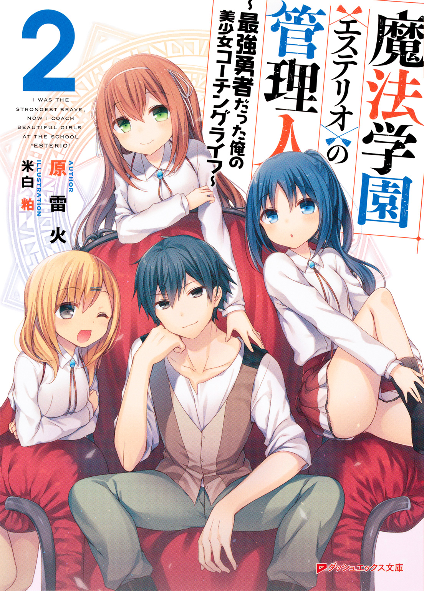
この本は縦書きでレイアウトされています。
また、ご覧になる機種により、表示の差が認められることがあります。
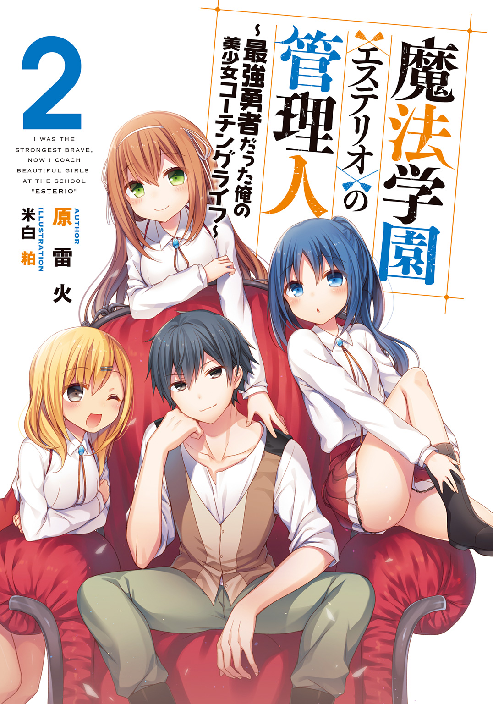
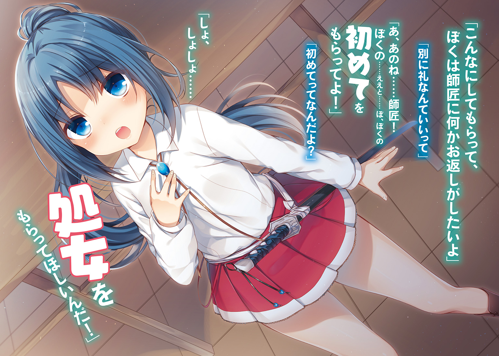
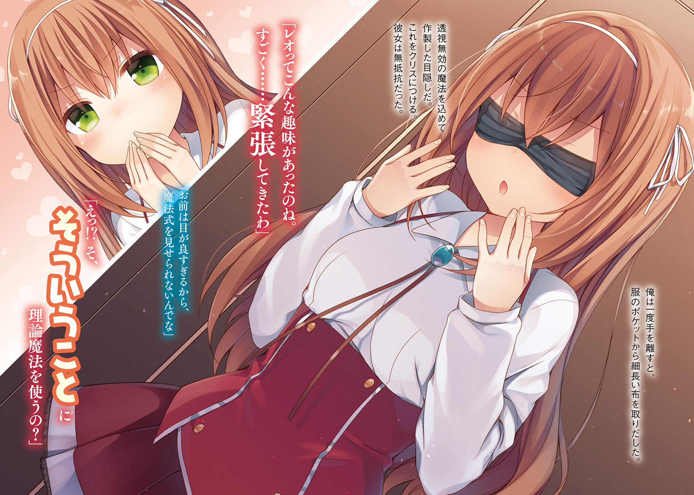
 ダッシュエックス文庫DIGITAL
ダッシュエックス文庫DIGITAL
魔法学園〈エステリオ〉の管理人２
～最強勇者だった俺の美少女コーチングライフ～
原 雷火
８．プリシラ編 その２
昼休み直前に、ギリアムに頼まれていた専門書を直接手渡しにいった。
教員室には午前の授業を終えた教員たちが、次々と帰ってきている。
中で待つのも居づらいので廊下に立っていると......。
「おやおや、出来の悪い生徒のように廊下に立っているなんて、どうしたんですか平民の管理人？」
最初からご挨拶だなギリアム。
にんまり笑うと余計に蛇みたいだ。
「頼まれていた本だ。確かに渡したからな」
「おー。貴方でも私の役に立てるんですね。感心感心。ではとっとと立ち去ってください」
俺はじっとギリアムを見据えた。
こいつにお使いを頼まれて襲撃に遭ったのだ。
あの時間、人通りが余計に少なくなるあの書店の立地や環境は、襲撃するのにあまりに条件が良すぎる。
「どうしました？ 私の美しい顔に見とれているんですか？ そういうことは気持ちが悪いのでやめてください」
「い、いえ......なんでもありません」
ギリアムはまったく意に介さない。
俺が知る限り、ギリアムはポーカーフェイスとはほど遠い男だ。
ちょっとしたことで激昂するし、感情を抑えられる性格ではない。
俺の視線に一切動揺をみせないということは、襲撃は本当にたまたまでギリアムは無関係......か。
ギリアムとこれ以上顔を突き合わせていてもしかたない。
「失礼します」
「ああ、君は本当に失礼な男だよ。心から反省するように」
ギリアムの言葉を背中で聞き流しつつ、俺は昼飯を調達しに購買部へと向かった。
午後の授業も終わり、管理人の業務もつつがなく一段落ついた。
こまめにバラ園の手入れも進めている。施設の損壊といった大きなトラブルにも見舞われなかったので、余裕があった。
魔法武器を作る魔高炉の調子が少し悪いというので、簡単に修理をしたくらいか。
こちらは専門家を呼ばなくても修理できる範囲の故障だった。
足りない鋼材の発注表をまとめて、総務部に提出した。
――そして、今日も放課後は三人娘の特訓だ。
攻撃面ではフランベルとクリスはなかなかのものだ。
守備に関してはプリシラもなんとか形になりつつある。
この先、どう指導しようか考えていると、いの一番にフランベルが校庭に姿を現した。
「師匠！ ぼく......自分なりに特訓を考えてみたんだ！」
子犬のように俺の前まで駆け寄って、フランベルはアイスブルーの瞳をキラキラさせた。
腕組みをすると俺は相づちを打つ。
「ほうほう。どんな特訓だ？」
自主的に考えてくるなんて、少し驚いたな。良い案なら採用しよう。
「ぼくの一閃なんだけど、使うと眠っちゃうよね」
継続戦闘能力を放棄するからこそ繰り出せる技だ。
俺の教えた抜刀術を、フランベルはそうアレンジした。
「そうだな。その時に出せる力の全部を一撃に乗せる。フランベルらしいじゃないか？」
フランベルはポニーテールを振り回すようにブンブンと左右に振った。
「そうなんだ！ けど倒れて相打ちじゃ、ちゃんとした勝ちにはならない。だから、ぎりぎり立っていられるだけの余力を残したいんだよ」
ぐっと拳を握って熱弁するフランベルに俺は頷いた。
「まあ、一理あるか。それで、具体的にはどんな特訓を考えてるんだ？」
フランベルは打刀の柄にそっと手をそえる。
「それは当然、一閃を撃ってためすに限るよね......ししょおおおおおおおおおおおおおおおおおおおおおおおおおおおおおおおおおおおおおおおおお！」
いきなりフランベルは俺めがけて一閃をぶっぱなした。
なにをするんだよまったく！
俺は紙一重で避けた。
フランベルは力を加減したらしく、踏み込みも甘いし剣速も鈍い。切れも感じられず窮屈な一閃だ。
加減しようと気を遣うことで、魔法力をロスしてるぞ。
「ＺＺＺ......ｚｚｚ......」
刀を振り抜いた途端に、フランベルは寝息を立てて倒れそうになった。すかさず前から支える。
刀の柄を握り込んだまま、フランベルは俺に抱かれて胸の中で眠っていた。
そこに遅れて二人の少女が姿を現す。
「あー！ レオっちえろーい！」
「ちょ、ちょっと何してるの？」
遅れてやってきたプリシラとクリスに、俺はフランベルを抱きしめる姿を見せてしまった。
「い、いや誤解だから」
さらに二人の生徒の後ろで、エミリアがプルプルと小動物のように震えていた。
「れ、レオさん。だ、抱きしめるにしても女子生徒にするのはその......よ、よくありません！」
「エミリア先生も落ち着けって。フランベルがまた一閃をぶっぱなしたんだ。撃つと眠っちまうんだよ」
フランベルの技について、知っている人間は俺と本人を含めて、ここにいる五人だけだ。秘密を漏洩させないためだ。
避けられたら強制的に寝るなんて、弱点以外のなにものでもない。
エミリアがハッとした顔になった。
「そ、そうだったんですか。すみません早とちりして......わたしって本当にダメな教員です」
困り顔でうつむいて、あっという間にエミリアは自信を失う。
「エミリア先生は些細なことで落ちこみすぎだぞ！ それにプリシラ......お前が変なことを言うからいつもおかしなことになるんだ。クリスもあっさりプリシラの言葉を信じすぎだ」
プリシラが不満げに口先を尖らせた。
「えー。あたしは見たまんまの事実を言っただけじゃん」
クリスもうんうんと、二度ほど首を縦に振る。
「プリシラでなくても、そういう誤解を与える姿勢といえるわ。しっかりしてちょうだいレオ」
なぜ俺ばかりがこうも責められねばならんのだ！
「ともかく、しばらくフランベルは起きそうにないから、医務室で休ませよう。二人は攻守に分かれて組み手をやっててくれ。エミリア先生は俺と一緒に来てほしい」
「は、はい！ お手伝いします」
俺はフランベルの手から打刀をそっと取り上げて、鞘に納めると彼女の身体を背負った。エミリアに付き添ってもらって医務室に向かう。
首だけ振り返って「クリスもプリシラもサボるなよ！」と、一言くぎを刺した。
医務室でフランベルをベッドに寝かせると、エミリアにフランベルを看ていてもらうよう頼んで、俺は一人で校庭に戻る。
クリスもプリシラも真面目に組み手の真っ最中だ。
プリシラが攻撃側でクリスが防御側だった。
残念ながら、クリスはまだ武器を持った相手の動きを感じきれていない。
その原因のいくらかに、プリシラの攻めっ気のなさも影響しているようだ。
プリシラの攻撃は手数も少なく、クォータースタッフのリーチも活かしきれていない。
数日、訓練したくらいじゃ身につかないことくらいわかってはいたが、このままじゃさすがに攻撃力不足だな。
「組み手そこまで！ フランベルがダウンしたんで、今日は新メニューを行う」
二人は武器を納めると、キョトンとした顔で俺に向き直った。
クリスが真面目に言う。
「今の訓練も満足に出来ているとは思えないのに、新しい事ができるのかしら？」
プリシラが「そーだそーだー！」と声をあげた。
お前のための新メニューなんだぞプリシラ。
「特別、新しい事なんてしないぜ。ただ学園の施設を利用して、いつもより少しだけすごいことをしようってだけだ。二人ともついてこい！」
怪訝そうな顔の二人を引き連れて、俺は校庭から場所を祭祀場に移すことにした。
祭祀場は召喚魔法の実践訓練のために利用される、エステリオの魔法学の粋を集めた特別な施設だった。
術者の実力を越えた、より高いレベルの召喚魔法が可能となる。
ランクを一つ上げた召喚獣との交流は、危険も大きいが得られる経験は貴重なものだ。
エステリオの敷地内――残された自然林の中に建てられた祭祀場は、四方に尖塔を持つ二十メートル四方のステージで、各種召喚を補助する魔法がステージそのものに組み込まれていた。
クリスが自分の親指と人差し指を、自身のあごに添えるようにした。
考える仕草がなんとも絵になる。
「まだこの科目は座学のみで、実践訓練のカリキュラムは二学期からのはずよ？ それに祭祀場を使うのはもっと先じゃないかしら？」
プリシラは不思議そうにステージや塔を眺めてから、首を傾げさせていた。
「ねえねえクリっち。ここってなんなの？」
クリスが驚いたような声で返す。
「もしかして知らないでついてきたの？」
「だってレオっちがついてこいっていうからぁ」
「ええと......その......」
プリシラが召喚魔法を使いたがらないのは、周知の事実だ。
言いにくそうなクリスに変わって俺はニカッと笑った。
「ここは祭祀場。召喚魔法言語学の実践をする場所だ」
プリシラが首をブンブン左右に振った。ふわふわの金髪が大きく揺れる。
「えっ......だ、だめだめ！ だめだよレオっち！ 召喚魔法は！」
たしかプリシラは可愛い召喚獣しか出せないんだったか。
「プリシラが呼び出せる中で、一番大きな召喚獣を出してみてくれ」
ムッとした顔でプリシラは俺に詰め寄った。
「できないし！ つーか、やりたくない」
「どうしてもか？」
「ど、どーしても......はずいし」
クリスが心配そうに俺を見つめた。今にも「無理強いはよくないわ」と仲裁に入りそうだ。が、俺はクリスを視線で制す。
以前のクリスなら信じてもらえなかっただろう。
だが、今のクリスは俺が何者なのかを知っている。
聡明な彼女なら、俺のやることにきちんと意味があると解ってくれるはずだ。
小さく息を吐いてクリスはコクリと頷いた。
どうやらこの場は俺に預けてくれるみたいだな。
俺はプリシラに向き直った。
「よし！ どれだけ可愛くて戦いに不向きか、召喚してみせてくれ。それで俺が納得したら、召喚魔法は交流戦で使わない育成計画に切り替える」
プリシラは不本意そうにため息をついた。
「それ、約束してくれる？」
「ああ。約束する」
うつむき気味にプリシラは呟いた。
「じゃあ......ちょっとだけだからね。レオっちだから特別だよ」
プリシラは祭祀場のステージの上にあがった。
ステージの下で待つクリスにプリシラが確認する。
「ねえクリっち！ このサイシジョーって、使うのに何か特別なこととかしなきゃだめかな？」
「ちょっと待って。私も実際の使い方までは......」
困ったクリスが俺に助けを求めるような視線を向ける。俺は頷いた。
このタイプの祭祀場は、ステージの上にいるだけで装置の恩恵が得られるものだ。
四方の尖塔は万が一のための結界で、ランクＢまでの召喚獣を閉じ込める強固な結界魔法になっている。
初心者にも安心の設計だった。
俺の視線を「問題ない」と受け取って、クリスがプリシラに手を振った。
「問題ないそうよ」
「え？ なにその言い方？」
「ええと、問題ないわ！ そのまま始めてちょうだい」
少し焦り気味に返したクリスに「変なクリっち」と、プリシラはぼやいてから、召喚魔法言語を歌うように唱えだした。
プリシラの召喚魔法には魔法歌の要素が自然と重なっている。
亜流というか我流というか......ただ、悪くない。
気持ちの込もった優しい音色だ。
召喚魔法言語による疎通が完了すると、プリシラの足下に魔法陣が生まれた。
そこからぴょこんと黒い猫科の小動物が飛び出してくる。
「召喚！ クロちゃん！」
「にゃああああああああああああああああああああああん！」
黒猫......なのか？ 猫にしては前後の脚が太くがっしりとしていた。
大きめな黒猫の登場にクリスがうるっと瞳を潤ませる。
「か、かわいい......」
艶のある毛並みに、青い瞳が印象的な黒猫（？）風の召喚獣だった。
人間の言語を操る知性はないようで、にゃーにゃーと鳴いてはプリシラの脚にスリスリしている。
プリシラが抱き上げてステージのふちまでやってきた。
「ね？ 可愛いでしょ？」
「にゃああああん！」
力強い鳴きっぷりだ。ツメをひっこめていれば、パッと見たところぬいぐるみの様にも見えるのだが、口元からのぞいた牙はなかなか立派なものだった。
「わ、私も......その......さ、触ってもいいかしら？」
確認するように俺の方を向くクリスに、頷いて返事をした。
召喚者以外がステージ上にいても、問題ない作りになっている。
まあ、それでも召喚者が集中しやすいよう、詠唱中はみだりに上がらない方がいいんだけどな。
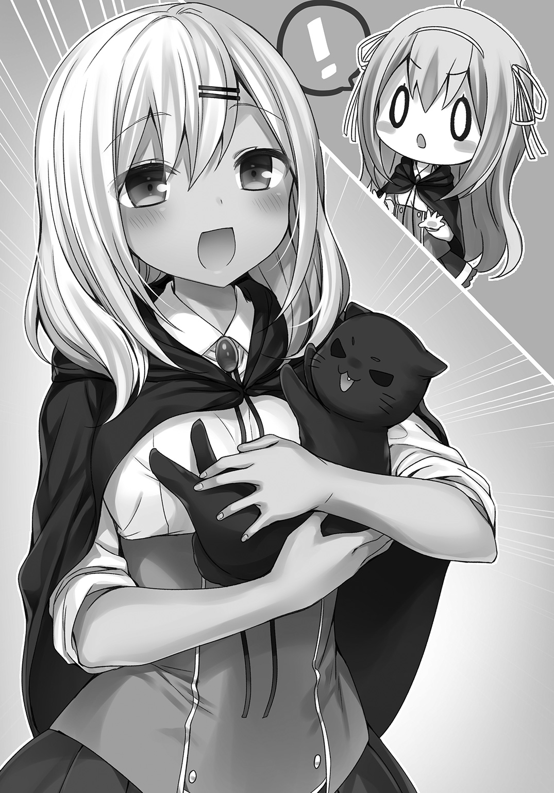
俺はお手本を示すように、ステージに上がった。それを見て問題ないと理解したクリスも、ステージの上にやってくる。
言葉にしなくても、クリスにはなんとなくで伝わった。不思議な感じだ。
と、俺が思っている間に、プリシラがクロちゃんをクリスに抱っこさせようとしていた。
「にゃーん！」
「ちょ、ちょっと！ いきなり抱っこは難易度が高すぎるわ。まずは撫で撫でから始めさせてちょうだい」
プリシラがにんまりと口元を緩ませる。
「クリっちってば、こういうのは習うより慣れろだよ？」
そっと、赤ちゃんを抱かせるような素振りで、プリシラはクロちゃんをクリスの腕に抱かせた。
「にゃーん！」
クリスに抱かれて居心地が悪そうに、クロちゃんは身をよじらせる。
プリシラがすかさず「クリっち、お尻のあたりに手をそえて！ そうそういい感じ」と抱っこの仕方を指導する。
クリスが言われた通りにすると......。
「にゃおーん......ゴロゴロ」
クロちゃんはクリスの腕の中で気持ちよさそうに喉を鳴らしだした。
クリスの両肩がプルプル震える。
「か、かわいい......」
プリシラもにっこり優しく微笑んだ。
「でしょでしょ？ こんな子を戦わせるなんて無理だし」
俺は首を傾げつつプリシラに訊く。
「他には何か召喚できないのか？」
「できるけど、みんなこの子よりちっちゃいよ？ この子が一番大きな子なの」
そうか......。
プリシラの召喚魔法言語は構文の間違いもあるし、正確とはいいがたい。
が、歌うような心地よさに惹かれて、小さくて可愛い召喚獣が呼び出されやすい傾向にあるのかもしれない。
プリシラが勝ち誇ったように胸を張った。
「どう？ レオっち！ これであたしの召喚魔法が戦いに全然向いてないって思い知ったでしょ？」
自慢することか！ まったく......。
見ればクリスがクロちゃんに夢中になって、ほおずりまで始めていた。
大人びた態度を取りがちなクリスが、ここまで無邪気な顔を見せるなんてなかなか希少な光景だ。
クリスから視線をプリシラに向け直し、俺は腕組みをして胸を張った。
「そんなことはないぞ。召喚魔法の基本はできてるし、この祭祀場を利用してちょっと工夫すれば、強い召喚獣も呼び出せるぜ」
一度呼び出すことに成功して仲良くなれば、以降は祭祀場じゃなくても呼び出せる。
まあ、その仲良くなる方法――パスの通し方ってのが、召喚獣ごとに違うのが、やっかいなところだが。そこら辺は人間を相手にするのと同じだな。
プリシラはクロちゃんを元の世界に返した。
召喚には大きく分けて二つのパターンがある。
召喚獣に中身が入っている場合と、そうでない場合だ。
クロちゃんは後者に分類された。
高位存在に近づくほど、前者の〝中身入り〟なパターンが多い。
というわけで、プリシラの召喚魔法の実力も解ったところで、今度は彼女が呼び出せる一番の大物を召喚してもらおう。
「ねえレオっち......ほんとにやんなきゃだめ？」
「やってだめなら別のプランを考える。せっかく祭祀場まで足を伸ばしたんだし、一度はチャレンジしてみてくれないか？」
クリスも後押しするように頷いた。
「私もプリシラの召喚魔法をもっと見てみたいわ。さっきのクロちゃんはとっても可愛くて、もふもふで素敵だったから......」
プリシラが困り顔で返す。
「幻体だからとか、そういうのは抜きにして、可愛い子は戦いに巻き込めないよ！ でもでも......強そうな召喚獣って恐いじゃん」
「恐いって感じるのか？」
「う、うん。なんか、うまく言葉にはできないんだけど、これ以上先に進むとヤバイって思うことがあんの」
召喚獣に関してプリシラは独特なセンスを持っているみたいだ。
彼女が「これ以上先に進むとヤバイ」と感じられるのは、きちんと自分の能力を把握して、相手の存在を認識できている証拠といえた。
プリシラには異世界の存在をきちんと感じとり、コミュニケーションをとる素養がある。
この召喚に関するセンスは希有な能力なのだが、プリシラ自身に自覚がないことや、学園の評価基準に沿っていないせいで、彼女の成績には反映されてない。
もったいないな。
俺は頷いた。
「じゃあ、その一番ヤバイのを呼んでみようぜ！」
「はあああああ!? レオっちバカなの？ ヤバイのはマジでガチでヤバイんだから」
「大丈夫だって。何かあってもクリスと俺がいる。ヤバイのが出たら、祭祀場の力を借りて送り返せばいいんだ。というか、そのための祭祀場でもあるわけだし」
軽口っぽく言う俺に、クリスが「私を頼りにされても......」と、肩を落とす。
「なーに。心配するな！ クリスの事も俺がサポートするから」
言いながら俺はクリスに目配せした。それでクリスも気付いたらしい。
「そ、そうね！ それなら安心だわ。私に任せてちょうだい。どんなに危険な召喚獣が出てきても、送り返せるはずだから」
クリスと一緒にいるうちは、ある意味俺も理論魔法を使い放題だからな。
まあ他の高ランク理論魔法使いに、魔法式の残滓を詳しく調べられなければ問題ない。
プリシラはうつむいた。
「クリっちはいいけど、レオっちはいくら強いっていっても......む、無茶させたくないよ」
平民の俺を気づかってくれるのか。プリシラは優しい子だ。
「心配するなって。さあプリシラ。そのマジでガチでヤバイのを召喚してみてくれ！ あと、クリスは今回ばかりは念のため、計算尺の使用を許可する」
クリスがフクロウのように目を丸くさせた。
「え？ いいのかしら？」
「その方がプリシラも安心できるからな。ランクＡの力、あてにしてるぜ」
不安げなプリシラをちらりと見てから、クリスは計算尺を取りだし装備した。
「準備できたわ。これで万全ね。さあ、プリシラ始めてちょうだい」
これで俺が高度な理論魔法を使っても、クリスがやったというていにできるな。
当然クリス自身も理論魔法の使用を制限しないわけだから、言葉通り万全だ。
観念してプリシラが頷いた。
「う、うん。じゃあ......やってみるね」
再び歌うようにプリシラが召喚魔法に取りかかる。
詠唱は長く続いた。
こりゃ、なかなかの大物が出てきそうだな。
プリシラの足下に高密度の魔法陣が生まれた。
俺はざっくりとそれを読み解く。
王。ランクＡ＋。漆黒。
おっと......本当にガチでヤバイ奴じゃないか。
下手をすれば学園が崩壊しかねない。
プリシラの詠唱が終わると、祭祀場全体が鳴動した。
四隅の塔が不意に起こった衝撃波に襲われ、うち二本に亀裂が走る。
出てくる前からコレか。結界の出力は半減だ。
ステージ上に展開した魔法陣から、身の丈三メートルを越す巨人の影が、舞台の奈落からせり上がるようにゆっくりと姿を現した。
揺らめく蜃気楼のような影が実体を得る。
獅子の頭を持った筋骨隆々の戦士。
獅子人間。
全身を光沢のある漆黒の体毛で覆われた、青い瞳の王。
高位存在だ。知性を有し言語を操った。
「我は漆黒の獅子王。貴様が我を呼んだのか？」
低い声には凄みがあった。
クリスは息を呑み、プリシラがブルッと震える。
見るからにヤバげな雰囲気だ。
プリシラが声をひっくり返した。
「あ、あの！ えっと、は、はい！」
獅子王は頷く。
「小娘......どうやら我が眷属と通じているようだが、我を呼ぶとは身の程を知らぬな。しかもこのような檻まで用意して......許しがたい」
「ひ、ひいい！ ごめんなさい！ ほらレオっちも謝って！ だから言ったじゃん、ヤバイって！」
俺は獅子王の前に歩み出た。
「許せないってんなら、どうするんだ獅子王？」
「貴様はなんだ？」
「お前を呼んだプリシラのコーチをしている者だ」
プリシラが今にも泣き出しそうな顔で叫んだ。
「レオっちもういいから逃げて！」
獅子王がニヤリと笑って牙をちらつかせる。
「レオ......ほぅ。貴様は獅子の名を冠するのか」
「ああ。奇遇だな。俺たち仲良くなれるんじゃないか？」
「黙れ。誇り高き獅子の名を汚す者には、死んでもらおう」
獅子王は嗤った。その余裕の笑みを凍り付かせてやらなきゃならないようだ。
獅子王はずしっと腕を組むと、牙をちらつかせながら威嚇するように宣言した。
「己の力量もわきまえず、我を呼び出した報いはその命によってのみ、あがなえるであろう」
殺気１００％の視線をぶつけてくる獅子王に、俺は口元を緩ませる。
「つまり、俺たちを殺すってか？ そいつは早計だな。少し話を聞いてくれよ」
「無礼な男だ......問答無用！」
獅子王が乱暴に腕を振るった。
「おっとっと！」
俺はよろけるフリをして二歩下がる。
瞬間――目の前の床石が獅子王の一撃でごっそりと削り取られた。
「待って！ あ、あたしが呼んだんだから、レオっちは関係ないし！」
プリシラが前に出ようとするのを、俺は制するように止める。
「待てプリシラ、それにクリスも」
俺が攻撃されるのに呼応して、クリスは俺を守るための斥力場を展開していた。
式の完成と斥力場の展開までのタイムラグはおよそ０．５秒。
間に合いはしなかったが、なかなかの速度だ。
クリスは獅子王に対して、消滅の魔法式を展開しようとしていた。
「それは使うなクリス」
「で、でも......」
「この場は任せてくれ」
召喚獣も王ほどになると、ランクＡの理論魔法さえ無効化するような輩はゴロゴロいる。
おそらくクリスの理論魔法は獅子王に通じなかっただろう。
即死系は格上に通りにくい。
俺に攻撃をかわされたことに首を傾げながら、獅子王が嗤った。
「運が良かったな小僧」
俺は不敵に嗤い返した。
「いきなり殴ってくるなよ。危なっかしい奴だ。それにお前が何者であれ、プリシラに呼び出された事実は変わらないだろ。立場と口の利き方に気をつけろよ」
獅子王の青い瞳がプリシラに敵意をもって注がれた。
「この娘の力ではあるまい。この場の力だ。ますます腹立たしい」
「まあな。半分は祭祀場の力だ。だが、召喚は召喚だろうに。こちらの世界に来たんだから、ルールには従ってもらう」
プリシラがブンブンと頭を左右に振った。
「やめようレオっち！ もう二度と呼んだりしないから帰って！」
獅子王が吠えた。
「ふざけるな小娘が！ 覚悟もなく我を呼んだというならば、ますます許すわけにはいかぬぞ」
クリスがすかさず身構える。すでに斥力場の魔法式を九割がた構築していた。
あとは座標入力をするだけの状態だ。
さらにもう一つ、クリスは獅子王に向けて魔法式を完成させると声を張る。
「理由はあるわ。プリシラに力を貸してちょうだい！」
「ではその忌々しい拘束の力はなんだ？ それがものを頼む態度か？」
クリスが展開していた重力の足かせの魔法式は、あっさり獅子王に看破された。
そもそも隠蔽の魔法式の組み込みは、対象とする魔法が高度になるほど難易度も上がる。
それに経験がモノを言う分野だ。
魔法式を看破されて、クリスは苦々しくうめいた。
「うっ......そ、それは......」
今まで、高度な魔法式を理解できた同世代がいなかったのだから、わざわざ魔法式の隠蔽なんてしたことなかったんだよな。
理論魔法使いが、格上と戦うということは、こういうことなのだ。
言いよどむクリスに獅子王が再び吠えかかる。
「やはり人間など信用できぬ。皆殺しだ。この檻もやぶり、この地の人間という人間をすべて殺し尽くしてくれる。蹂躙だ」
学園の生徒を皆殺しにしそうな勢いで、獅子王は言い放った。
「では始めよう。まずは貴様から引き裂いてくれるぞ」
獅子王がプリシラめがけて跳びかかろうとする。
その瞬間を狙って、俺は獅子王の地面を蹴る脚に、突くような蹴りを入れた。
絶妙なタイミングでガスッ！ と、俺の蹴りが獅子王の膝を打ち抜く。
「俺の可愛い生徒に何しようってんだ畜生が」
「――!?」
人間ごときに動きを止められて、獅子王は大いに驚いているようだった。
「ぐ、き、貴様......いったい......」
本能で戦う獣の王は知らないだろう。
人間には研鑽し、師匠から弟子へと伝承されてきた格闘の技術がある。
より最小限の力をもって、最大の効果を得る攻撃方法だ。
「どうした獅子王」
「偶然は三度は続かぬぞ」
さすがに軽く蹴っただけなので、膝を砕くまでには至らなかったか。
ランクＡ＋......頑丈だ。
憎らしげに俺を睨みつける獅子王に、俺は告げた。
「殺すのなんのの前に、ルールを守れっつってんだよ」
獅子王は憎らしげに言う。
「なぜ我が貴様らに合わせてやらねばならぬ？」
「なあ獅子王。お前の存在座標を開示する条件はなんだ？」
存在座標というのは、住所みたいなものだ。これを知ることができれば、次からは祭祀場の補助なしにも、こいつを呼び出せるようになる。
「ぬう......」
獅子王は唸るだけで返答しない。
「言えないとは言わせねぇ。あるんだろ？ 俺はお前に、情報の開示を請求する」
相手が人語を解するのを良いことに、俺は感情魔法を言葉に織り交ぜて交渉を続けた。
「ないでもない。我らの力を得たいのであれば、我に一撃を喰らわせてみせよ」
「なるほどな。シンプルな条件で助かったぜ」
例えば美味しいケーキを食べさせろだの、金銭を億単位でよこせだのと、召喚獣の性格によって条件はまちまちなのだが、獅子王には単純に力を示せば良いらしい。
俺は振り返ると二人に言った。
「じゃあ、さっそく三人でこいつに一撃喰らわせるとしようぜ」
クリスが不安げに訊いてくる。
「だ、大丈夫なのレオ？」
プリシラは半分泣いていた。
「もうやめよう！ ね！ 殺されちゃうよぉ！」
俺は笑って返す。
「なーに。今日までの特訓の良い力試し......」
言い切る前に俺の身体は横に吹き飛ばされた。祭祀場の柱に叩き付けられる。
獅子王が嗤った。
「まず一人」
俺を小突いて吹き飛ばしただけで、勝ったつもりでいるようだ。
あんまり油断してると俺の生徒たちに足を掬われるぜ？
立ち上がろうかと思ったが、俺はしばらく倒れたままの姿勢を維持した。
なぜなら、今まで泣きっ面だったプリシラが、俺を背に庇うようにしてクォータースタッフを手に、獅子王に立ちはだかったからだ。
プリシラは獅子王を見上げながら、クォータースタッフを構えた。
防御の姿勢だ。俺を守ろうとしてくれている。
「こ、殺すならあたしだけでいいじゃん！ 二人は関係ないんだから！」
牙を剝いて獅子王は吠えた。
「小娘ッ！ 交渉できる立場と思うなッ!! 我が殺すと決めた以上、説得など通じぬぞ」
クリスの顔つきが豹変した。
感情を失ったような表情をすると、計算尺を回転させる。
彼女は......破壊の魔法式を構築した。
先日王都で襲撃に遭った際に、敵の魔法式を読み解いて、もう自分のモノにしていたのか。
計算尺の補助があっても構築に手間取っていたのだが......それが今、完成する。
「グルアアアアアアアアアアアアアアアアアアアアアアアッ!!」
発動寸前で獅子王が吠えた。
その吠え声には魔法力が込められている。
バインドボイスだ。
性質は魔法歌に近い。
身体を震わせ内臓に響くほどの大音響によって、聞いた者に強烈な束縛の暗示を与えた。
俺は瞬時に風の精霊魔法で空気の壁を生みだし、バインドボイスを防ぐ。
クリスは破壊魔法を放つ寸前で、その身動きを封じられてしまった。
「――ッ!?」
何をされたのか、クリスは解らず混乱したようだ。
獅子王が放ったバインドボイスは、洗練された理論魔法からほど遠い。
それは原初的な本能に訴えかける。
恐怖の感情によって引き起こされる感情魔法に近かった。
理論魔法で〝考えて〟いるうちは、拘束を打ち破るのは難しい。
こうしてみると、クリスも感情魔法に対しては、やや弱い部分があるみたいだな。
「クリっち......レオっち......ううっ」
プリシラにはバインドボイスが効いていなかった。
わざと獅子王が対象から外したようだ。
うつむくプリシラに獅子王が告げる。
「小娘よ。この二人の命を我に捧げよ。さすれば貴様だけは、その命を救ってやろう」
こいつ......性格悪いな。
自分が圧倒的強者であり、約束を守る必要がないことをわかっていて、あえてプリシラに持ちかけていやがる。
何が王だ。呆れるぜ。こんな奴に王という呼び名はもったいない。
〝獣人〟は続けた。
「さあ、その手で殺すのだ。そうだ......もし成し遂げたなら、特別に我を呼び出す権利をやろう」
プリシラは深くうつむくと、肩を震えさせた。
「......いらない。そんな権利いらない......あたしは二人を裏切らない......どうせ、あたしがそうしたって、あんたに約束を守る義理なんてないじゃない!!」
涙を袖で振り払うようにして、プリシラは断言した。
これに獣人が「ほぅ」と、愉快そうに声をあげる。
「なんだ、解っていたか。もう少し楽しめるかと思ったのだが......余興にもならぬとは残念だ。では望み通り、まずは貴様から殺してやろう！」
鋭い爪を剝き出しにした、丸太のような右腕を獣人は振り上げる。
俺は瓦礫の中から立ち上がった。
獣人の動きがぴたりと止まり、俺に視線が注がれる。
まあ、驚くだろうな。バインドボイスが効いていないのだから。
「なあプリシラ。自分が犠牲になるなんて言うなよ。クリスとフランベルとチームを組んだ時も、自分は捨て駒なんて言ってたよな。ああいうのはもうやめだ」
獣人は俺にめがけて再び吠え掛かった。
「馬鹿な!? 虫の息だったはずだ！ それに我が呪縛の声から、どうやって逃れたというのだ!?」
「そんなことはどうでもいいだろ」
ぶっきらぼうに言いながら、俺は首をポキポキと鳴らすようにひねりつつ、祭壇の中央へと歩みを進める。
視線をプリシラに向けて、静かに告げた。
「よく立ち向かったな。プリシラ......かっこよかったぜ」
プリシラが俺の顔を見上げた。
「レオっち......無事だったの!?」
「ああ。俺は不死身のコーチだからな」
「ば、ばかぁ......うう......無理しないでよ......あたしなんかのために」
くしゅっとプリシラの顔が、崩れたような泣き顔になる。
「かっこつけさせてくれよ。お前のためにさ」
そう言うと、プリシラは小さく頷いた。
俺は感情魔法を込めてクリスに告げる。
「束縛されてるなんて気のせいだ。というか、クリスもかかったフリをしてたんだよな？」
すぐにクリスの身体から、スッと邪気のような獣人の魔法力が抜けていった。
「え、ええ。そうよ！ レオが無事だったのも、全部私の斥力場が守ったから！ 不死身じゃないでしょ！」
今、あえて言う必要もないだろうに。ちょっと怪しく聞こえるぞ。
とはいえ、俺が無事なのはクリスのおかげだと言い訳が立った。
無視されるような格好になった獅子王が、怒りの声を上げる。
「ふざけるな人間どもおおおおおおおおおおおぉ！」
俺は振り返らず獣人に背を向けたまま、感情魔法を唱える。
「少し黙ってろよ」
再びバインドボイスで吠え掛かろうとした獣人が、声を出せずに喉をかきむしった。
黒い毛並みで顔色なんてわからないが、人間なら顔面蒼白ってとこだろう。
俺は涙をぽろぽろ落とすプリシラに告げる。
「プリシラ......お前は少しわがままなくらいが魅力的だぜ。もう、誰かのためなんて考えるな。自分のために、思うままにやってみろ。俺やクリス、それにフランベルやエミリア先生がついてる」
小さくフルフルとプリシラは首を左右に振った。
「レオっち......いきなりそんなこと言われてもわかんないよ......」
「わからないなら、わからないままでいいから、ともかく俺の後ろにいるデカブツに、きついのを一発をお見舞いしてやれ！ クリス！ サポートを頼む！」
ずっと獣人を牽制するように注視していたクリスが「任せてちょうだい！」と声をあげた。
俺はゆっくり振り返る。
「じゃあやろうか獅子王？」
声を出せない獅子王の瞳には、疑念と恐怖が宿っている。
俺を見る目が怯えだした。ああ、動物って素直で可愛いな。
徒手空拳で身構える。
「――ッ!?」
声にならない怒声を上げて、獣人は俺を潰すような勢いで殴りかかってきた。
豪腕から繰り出される連撃をかわし、いなし、翻弄するような足捌きで獣人の目の前を、あえてゆっくりと俺は横切ってみせる。
奴の攻撃はすべて空を切った。
「行ってプリシラ！ 移動と防御を支援するわ！」
半透明な板が無数に、獣人を取り囲むように発生した。
可視化した足場だ。斥力場の応用技術だが、強度は低い。警戒した獣人が腕を振るい、足場を破壊していく。
だが、壊されようと、クリスは次々と足場を作り続けた。
プリシラがクォータースタッフを構える。
「レオっち......クリっち......うん。わかった。あたしもう......逃げない！」
決意の眼差しで、プリシラはクリスが生み出した足場を駆け上がった。
防御ではなく攻撃の構えに転じたプリシラは、次々と足場を飛び、駆け上がり、高く高く昇っていく。
獣人の巨体の頭上にさしかかった。それを獣人はハエでもはらうように叩き落とそうとする。
振るった腕にプリシラは迎撃された。
が、損傷は軽微だ。
ダメージを受ける寸前のところで、クリスの斥力場がプリシラの身を守った。
体勢を崩して着地したプリシラに、すかさずクリスが叫ぶ。
「プリシラ！ もう一回！」
「うん！ 絶対に一撃、決めてやるんだから！」
獣人がクリスめがけて攻撃しようとするタイミングで、俺は軽くローキックを喰らわせた。
普通に攻撃しちまうと、やばいからな。
あくまで軽く、手加減手加減っと。
クリスもプリシラも自分たちの動きに集中していて、俺の攻撃動作に気付かない。
俺が攻撃したことが認識できたのは、蹴られた獣人だけだろう。
その獣人も俺の動きを視認できていなかった。
実力差が解ったらしく、獣人――獅子王（笑）の俺を見る目はすっかり怯えていた。
今の状況をこいつは甘受し続けるしかない。
お前は今、クリスとプリシラの特訓用にちょうどいいサンドバッグだ。
二人のコンビネーションは、次々と切り口を変えて試された。
足場の置き方やプリシラの身体の運び、反撃を受けた時の受け身まで、挑戦する度に洗練されていく。
二〇回までは数えたが、それ以降は覚えていない。
まあ、あんまりずっと獅子王の前にいるのは不自然なので、時々距離をとったりと、俺なりに「獅子王の注意を引いている」ていで動く。
ただ、獅子王が妙な動きをしそうになった時だけは、きっちり釘を刺した。
「これでどうかしら!?」
クリスが足場を展開する。それはらせん状の配置で、プリシラは超高速で足場を駆け上がった。
「てえええええええええええええええええええい！」
クォータースタッフを両手持ちで構えて、プリシラは獅子王の左後方、頭上よりさらに高い位置から一撃を叩き付ける。
文句なしの速度と連携だ。
「――ッ!?」
獅子王の肩口にクォータースタッフが深々と打ち込まれ、プリシラの振り下ろす力に耐えきれず、クォータースタッフはボッキリと折れてしまった。
同時に、獅子王に掛けた沈黙の感情魔法を俺は解除する。
「ふざけるな人間どもぉ！」
俺は獅子王に眼下からにっこり微笑みかけた。
「約束通り一撃を喰らわせたぞ。お前のパス......ええと、存在座標をプリシラに教えろ」
憎らしげに獅子王は着地したプリシラを見据える。
「ならぬ。こやつの力ではないではないか？」
そう言われて、プリシラも返答に窮した。
が、クリスがすぐさま獅子王の言葉を否定した。
「これはチームの勝利よ。貢献したのだから、プリシラには勝者の権利がある。当然でしょう？」
俺は「異議なーし」と後押しする。
プリシラはうつむき気味だ。
「けど、クリスとレオっちがいてくれたから......あたしの勝ちじゃなくていいよ！ お願いだから、もう帰って！」
顔をあげるとプリシラは、獅子王に真剣な眼差しで訴えた。
鼻っ面と眉間にしわを寄せて獅子王が......嗤う。
「......くっ......はっはっは......我に一撃喰らわせて......帰れとはふざけた娘だ。許さぬ。そのような勝手は許さぬ！」
言葉から殺気が雲散霧消した。
獅子王はクイッと指だけで、地面の下から〝何か〟を招くようにする。
すると、獅子王の足下から一本の黒い棒のようなものがせり上がってきた。
「娘。名はなんという？」
さんざん俺らが会話していたのに、きちんと自己紹介しなきゃ名前も覚えられないのか獅子王は。
改めてプリシラは獅子王と対峙した。
少し怯えた瞳で、じっと獅子王の顔を見つめるとプリシラは口を開く。
「プリシラ・ホーリーナイト」
「プリシラ......か。未熟にして脆弱。他者の助けもなしには何一つできぬ貴様に、我が存在座標を明かす価値はない」
「そ、そんなのわかってるし！」
獅子王は口元を緩ませると、足下からせり上がった棒――漆黒のクォータースタッフをプリシラに投げてよこした。
「その貧相なモノよりかはマシであろう。使え」
「えっ!? でも......」
一撃を叩き付けたはいいが、プリシラのクォータースタッフは折れてしまった。
武器用具室の魔法武器の中では、作りの良いものだったが......まあ、今回ばかりは相手が硬すぎたな。
獅子王は腕組みをして胸を張る。
「良いか。我は決して貴様を認めたわけでも、気に入ったというわけでもない。ただ、一撃を喰らわせるという条件を満たしたことは事実。ゆえに、それは寛大なる王たる我からの褒美だ」
ざっと遠目から見たところ、プリシラに贈られたのは金属製のクォータースタッフのようだが、特徴的な深みのある鋼材の色は、アダマンタイトそのものだな。
他の金属素材にコーティングしたものではなく、無垢材だ。
黒い輝きがなによりの証拠だった。
当然、今までのクォータースタッフよりも重くはなるが、性能は段違いだろう。
プリシラが使いこなすまで、もしかしたら一生涯かかるかもしれない。
売れば......そうだな。
シアンの可変槍も小さな城一つ買えるほどの名品だったが、このアダマンタイトスタッフならもう一回り大きな城が手に入るだろう。
まあ、そのまま使うわけにはいかないから、後で武器用具室に行って制御魔法具を組み込まないとな。
学園のレギュレーションに合わせるのも当然だが、デチューンしないで魔法力を込めて使ったら、負荷が大きくてプリシラの魔法力が保たない。
「い、いらないし」
プリシラはアダマンタイトスタッフをつっかえそうとした。
「拒否することなど認められぬ。それと......貴様がクロちゃんなどという名で呼ぶ、我が眷属については引き続き、召喚を許そう。あやつは我が七番目の息子だ。好きに使うがよい。あやつの力を解放し、少しは役に立つようにしておこう」
眷属なのはパスの繫がりから想像できたが、まさかクロちゃんと親子だったとは。
獅子王の眷属をゲットか。
力を解放するというなら、戦闘力の向上も期待できるだろう。
問題は、プリシラが素直にその力を使うかってところだな。
プリシラは目を丸くさせた。
「え......ええっ!? あ、あたし、クロちゃんのお父さんと戦ってたの!?」
これにはクリスも「噓......でしょ......全然かわいくない」と、獅子王に向けてもらした。
獅子王の青い瞳がクリスを射貫くように見据え返す。
「そこの娘。我にかわいくないなどとは......本来ならば万死に値するぞ」
「う、うるさいわね！ 私は噓が苦手な性格なのよ！」
クリスと獅子王は互いに睨み合うと、同時に「フン」と相手を鼻で笑いあった。
意外と馬が合うんじゃないか？
獅子王はゆっくりと腕や首を回してから、打たれた肩口を軽くさすってプリシラに告げる。
「その命、今は預けておいてやろう。もし貴様が我を呼ぶに相応しい力を得たと勘違いし、再び相まみえたその時に、貴様の力が足りなければ......貴様だけでなく一族郎党、みな食い殺してやるから楽しみにしておくが良い」
負け惜しみっぽいセリフを吐いて、獅子王の身体は足下の魔法陣に没していく。
プリシラはへなへなと、腰が抜けたようにその場に座り込んだ。
クリスもやっと緊張状態から警戒のレベルを一段下げた。
それでも獅子王の姿が完全に消えるまで用心するあたり、クリスらしい。
俺は胸まで沈んだ獅子王に、しゃがみ込むとその肩を叩いた。
クリスとプリシラには聞こえない程度の小声で、獅子王に言う。
「なあ......俺も一撃どころか何発も喰らわせただろ？ パス寄こせよ」
ぴたりと獅子王の沈み込みが止まった。
「ぬ、ぬうう」
「ぬううじゃねぇ」
「き、貴様は召喚者ではないではないか」
「じゃあ、クリスとプリシラを帰したあと改めて召喚してやろうか？ 今夜は二人で楽しもうや？」
獅子王がぶるりと身震いした。
「わ、わかった。教える......あの......勘弁してください」
最後に敬語になって、俺に存在座標を教えると、獅子王の幻体はすごすごと元の世界に戻っていった。
獅子王が元の世界に戻るのを見送ってから立ち上がると、プリシラが俺の元に駆け寄ってきた。
彼女は両手で包むようにして、俺の手を握る。
度重なる訓練で彼女の掌はマメだらけだ。
「レオっち、怪我してない？」
「大丈夫だ。な？ クリス」
突然話を振られて、クリスは一瞬ぎょっとした顔になったが、すぐに小さなせき払いを挟んで頷いた。
「ええ。問題ないわ。レオへの攻撃は減算の魔法式でほとんどカットしたし、せいぜい派手に吹っ飛ばされたくらいでしょ？」
俺はゆっくり頷いた。
「そういうことだ。じゃあ、さっそくクロちゃんを呼んでみようぜ？」
プリシラは「ええー」と不満げだが、クリスがじっとプリシラを見つめる。
「私もすごく気になるかも」
手にしたアダマンタイトスタッフをバトンのようにクルクル回して、プリシラは「しょうがないなぁ」と息を吐いた。
すぐにも召喚を始めようとするプリシラに、俺はストップをかける。
「ちょっと待った。もうクロちゃんとは慣れてるだろうし、祭祀場の外でやってみてくれ」
祭祀場の力を借りないで召喚できなければ、交流戦で力を借りられないからな。
「えー！ ちょっと！ そういうのは早く言ってよ。もう！」
少しだけ不機嫌そうなプリシラを、クリスが「まあまあ」とたしなめた。
祭祀場のステージを降りると、さっそくプリシラが召喚魔法言語を唱えるように口にした。
俺は秒数を計る。
五秒でプリシラの足下に魔法陣が浮かび、そこからピョン！ と、黒い獣が飛び出してきた。
「え!? クロちゃんなの？ マジで!?」
呼びだしたプリシラが一番驚いていた。
俺もクリスも、先ほど見たクロちゃんとは似ても似つかぬ別の召喚獣が出てきたのかと、錯覚するほどだ。
精悍な肉体と美しい毛並み。
スッと伸びた四肢を持つ雄ライオンの成獣だ。
無邪気な瞳だけはクロちゃんの面影がかすかに残っている。
獅子王のような冷たさはなく、どことなく愛嬌のある顔だった。
プリシラに顔をスリスリさせて、クロちゃんはころんとその場に転がると、おへそを見せるようにひっくり返った。
ランクＣの召喚獣。
正直、エステリオの一年生が扱える代物じゃない。
なにより召喚獣とのパスの強度......信頼関係の構築が済んでいるってところが強みだ。
こればかりは一朝一夕じゃ育たない。
クロちゃんの豹変振りに、クリスが困り顔になる。
「あ、ああ......仕草は可愛いけど......こんなクロちゃん嫌かもしれないわ」
プリシラが少しだけムッとする。
「クリっちってば見た目で判断しすぎぃ！ この子はクロちゃんだよ！」
「ご、ごめんなさい」
素直に謝るクリスにプリシラは「ぷっ！」と吹き出した。
「ぷ、ぷふ......あは......あははははは！ もうこれじゃ抱っこは無理だけど、背中に乗せてくれるって！」
なに!? マジか。俺はつい、前のめりになる。
すげぇ！ 乗ってみたいぞ！
「俺も乗せてくれるのか!?」
プリシラは口を尖らせた。
「ざーんねん！ クロちゃんは雄だから、男は乗せない主義なんだって！」
「なんだよ男女差別かよ！」
あとで親父（獅子王）を呼び出して説教だな......こりゃ。
クリスの顔がぽやーっと赤くなる。
「それ、いいかも」
プリシラがクロちゃんの喉のあたりを撫で撫でしてから「それじゃね！」と、元の世界に送り返した。
「ところで、プリシラはクロちゃんの言葉がわかったのか？」
俺に質問されて、あっ！ と、プリシラは声をもらした。
「そういえば......幻体を呼びだしたあとって、会話できなかったのに......なんでだろ？ 今は自然と、お話しできてた気がするし！」
「プリシラがそれだけレベルアップしたってことだな」
「うーん、ちょっと実感ないけど......でもでも、レオっちに言われてやってみてよかったのかな？ なんか、迷惑ばっかりかけちゃったけど」
クリスがそっと首を左右に振った。
「そんなことないわ。誰かと連携して戦うことなんてなかったから、私の方こそすごく勉強になったもの。ありがとうプリシラ」
プリシラは恥ずかしそうにうつむいた。
「えへへ......クリっち......クリスに言われると悪い気しないし」
二人は笑い合う。
「ところで俺には何にもなしか？」
プリシラは「うん！」と力強く頷いた。
「レオっちは、わがままなあたしの方が好きなんでしょ？」
「お、おう！ 男に二言はない」
腕を組んで胸を張る俺に、プリシラは詰め寄ると......そっとカカトをあげて背伸びをした。
チュッ――
と、柔らかい感触が唐突に俺の頰に触れる。
「ありがとレオっち！」
いきなりプリシラに......キスされた。
ほっぺただけど。
ほっぺたでも。
ほっぺたであろうとも!!
え、えええええええええ!? いや待て！ い、いきなりどうしたんだ？
プリシラご乱心か!?
「あ、あの......ええと......あの......ふ、二人ってそういう!?」
クリスの目が点になる。プリシラは上機嫌だ。
「こんなの挨拶じゃん！ クリスってば焦りすぎぃ」
俺だって焦ったぞ。
プリシラは目を細める。
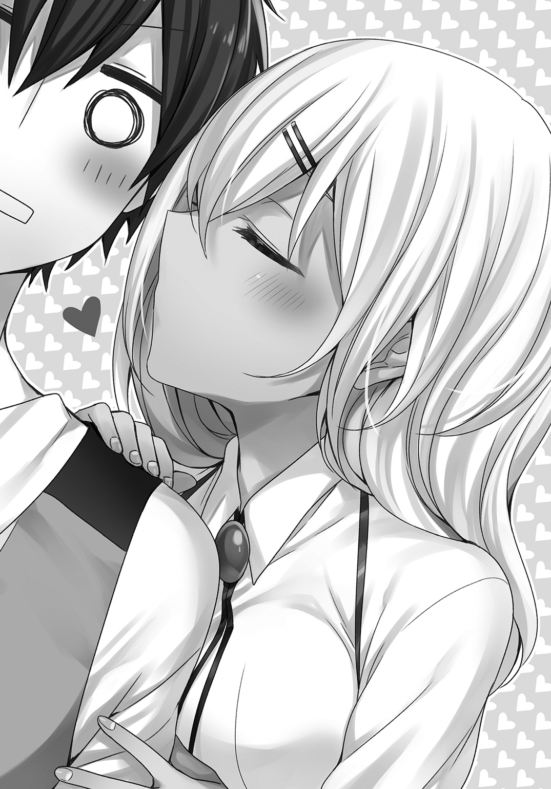
「せっかくだから、これからはクロちゃんにも......頼ってみちゃおっかな？ あたしって、わがままだもんね？」
彼女は小悪魔っぽくスマイルを浮かべてみせた。
９．フランベル編 その２
獅子王との特訓から一夜明けた、翌日の放課後――
エミリアは教員会議で、今日の放課後の練習はお休みだ。
会議の内容は、あと一週間後にまで近づいた交流戦の準備に関することらしい。
学園内の空気もにわかに、お祭りムードが漂い始めていた。
というわけで、本日の三人のコーチは俺に一任された格好だ。
ローテーションで、今はクリスとフランベルに実戦形式の組み手をさせている。
プリシラには、思わぬところで手に入った新武器に慣れてもらうため、相変わらずの素振りをしてもらった。
武器が重くなったと不平をもらしつつも、特訓を開始した当初とは別人のように、プリシラは真剣に練習に打ち込んでいる。
クリスと軽く刃を合わせながら、フランベルが少し不機嫌そうに呟いた。
「ぼくも戦ってみたかったなぁ......獅子王。強い敵を前にしてこそ、我が心の剣も燃えるんだよね。プリシラもう一回呼びだしてよ！」
プリシラが素振りをしながらあきれ顔になる。
「あれは運が良かっただけで、もしかしたら死んでたかもしれないんだよ？」
フランベルは意にも介さない。
「そっかぁ。ねぇねぇ！ クリスはどうだった!? 死ぬかと思った？」
「え、ええ。死んでいたかもしれないわね」
フランベルはほっぺたを膨らませながら、口を尖らせた。
「いいなぁ。うらやましいなぁ」
クリスもプリシラも困り顔だ。
俺はフランベルの背後に回ると、後頭部に軽くチョップを喰らわせる。
「痛ッ！ 師匠！ 組み手の最中に愛の鞭は勘弁してよ！」
「お前、ちょっと調子に乗ってるだろ？」
クリスに視線で組み手のストップをお願いしつつ、俺はフランベルの前に回った。
「べ、別にそんなことないよ！ ただ、調子はいいと思うんだよね。まだ、一閃の力の配分はできないんだけどさ。それだって、あと一週間でモノにしてみせるよ！」
自信満々でフランベルは胸を張る。
増長しないよう軽く釘は刺したつもりだが、好調と自信はそのまま維持してもらいたいところだ。
クリスが再び、フランベルに向けてショートソードの切っ先を向けた。
「続けましょうフランベル」
「よぉし！ やろうやろう！」
二人の組み手が終わったら、次はプリシラとクロちゃんのコンビネーション練習だな。
ただ、クロちゃんは隠し球だ。
ギリアムクラスの生徒が俺たちを警戒してスパイするなんて、連中のプライドが許さないとは思うんだが......。
念のため、召喚獣を交えた練習は室内闘技場を使うことにしよう。
今日は確か第四闘技場が空いていたはずだ。
三人それぞれ力をつけてきて、やれることが増えてきた。
教え甲斐も比例して増えて......ん？ なんだ？
校舎の方から黒髪の女子生徒が、まっすぐこちらに向かってくる。
少女はその手に可変槍を携えていた。
クリスとフランベルも手を止め、プリシラも視線を向け直す。
「シアン・アプサラス......」
クリスが呟きながら息を呑んだ。
やってきたのはギリアムクラスのエースの少女だ。
シアンとはダブリン事件以来だが、いったい何の用だ？
それに、見れば彼女は右目に黒い眼帯をつけていた。
達人が片方の視野を封じて特訓をすることもあるんだが、それに倣ったとでもいうんだろうか？
シアンの放つ物々しい雰囲気に、友好的な要素は見受けられない。
スパイというにはあまりにも堂々と正面から彼女は近づいてきた。
クリスたちには目もくれず、俺の前で立ち止まる。
「レオ・グランデ。今日はお願いがあって参上した」
「俺に？ お願いとはずいぶんと下手に出たな」
「こちらに強制する権利はない。あくまで双方の合意がなければ成立しないからな」
プリシラがシアンの顔を指さし告げる。
「あんた、レオにコーチしてもらおうとか企んでないよね？ っていうかその眼帯似合ってないし！」
シアンはプリシラに一瞥もくれない。俺の顔を見たまま返答する。
「この右目のことなら問題ない。そちらへのハンデと受け取ってくれて構わない。私は練習試合の申し込みにきたのだ」
ハンデを自ら背負って練習試合を申し込みにくるなんて、相当な自信だな。
先ほどからシアンは左目だけの視線を、俺からまったく外さない。
こちらの返答を待っているようだ。
「ギリアムに何か吹き込まれたのか？」
「この行動は私の意思によるものだ。返答を求む」
片方だけの黒曜石色の瞳に、迷いは見られなかった。
俺は口元を緩ませる。
「断る。対決は本番まで楽しみにしておくんだな」
シアンの視線がゆっくりとクリスに移った。
「自信がないというなら仕方ない。良かったな......守ってもらえて」
淡々とした口振りだが、シアンのそれは明らかに挑発だ。
乗るなよクリス。
「わ、私は守ってもらうばかりじゃ......」
俺はクリスをたしなめるように目配せした。
下唇を嚙むとクリスはシアンから視線をそらす。
悪いがその悔しさは試合で晴らしてくれ。
そんなやりとりの一方で、プリシラが「しっし！」と手を扇ぐように振った。
「あたしら今忙しいの。消えてくれる？」
相変わらず、身内とそれ以外とだとプリシラは性格が豹変するな。
シアンは歯牙にも掛けない。
というか、顔こそ向けたがシアンはプリシラのことを見ていなかった。
手にしたアダマンタイトスタッフをじっと見据える。
「使いこなせもしない武器に振り回されるなどお笑いぐさだ」
あざけるようにシアンはプリシラも挑発した。
「あたしのコレはおまけだし！ 〝寄せ集め〟だからって舐めないでくれる？」
召喚獣は隠し球だから、絶対にばらすなよプリシラ！
シアンが小さく鼻で笑う。
「貴様は人数合わせの捨て駒に過ぎない。興味はない」
プリシラの顔が真っ赤になった。
「あ、あたしだって勝つし！」
これはまずいな。
「プリシラ。それ以上相手にするな。というわけだから、お引き取り願おうか？」
シアンは小さく息を吐く。
どうやら次の標的はフランベルのようだ。
「貴様はどうだ？」
「いいよ！ やろうやろう！」
フランベルがにっこり笑った。俺が止める前に勝手に話を進めるな！
「いや待てフランベル。コーチの俺がやらないと決めたのに、受けるなよ」
「いいじゃないか師匠！ ぼくは自分の力がどれくらい通じるか試したいし、シアンがどんな風に戦うかも見てみたい！ それに、本番でシアンと戦える保証もないからね」
シアンが頷いた。
「同意する。私は彼女に試合を挑む」
「ぼくはフランベル・スワロウテイル。勝負だシアン！」
シアンの実力を計るには、たしかに絶好の機会だ。
「フランベル。あの技は使うなよ」
「もちろんだよ師匠！ だから......いいよね？」
クリスとプリシラは不安げだが、まあ、俺が見ている前で二人が戦う分には、いつでもストップをかけられるし、フランベルのやる気も十分だ。
「わかった。俺が審判に入る。構わないな？」
シアンは俺をじっと見つめると、小さく頷いた。
「了解した」
「そんなに怖い顔をするなよ。ジャッジは公平にするから」
「その点は心配していない」
「おっ！ 俺ってそんなに信頼があるのか？」
シアンは首を左右に振ると、フランベルに可変槍の切っ先を向けた。
「誰が見てもわかる形で完膚無きまでに叩きのめし、私が勝利するからだ」
その言葉も表情も自信に満ちあふれ、シアンの本気がにじみ出ていた。
二人の戦いが危険な領域に入る前に、きっちりレフリーストップをかけよう。
フランベルとシアンの間に入って、俺は双方の顔を確認した。
シアンは淡々とした表情で、一方のフランベルはワクワクと、すぐにも戦いたいという顔だ。
双方に言い含めるように告げる。
「練習試合ってことだから、二人とも魔法武器に込める魔法力は最低限に抑えること。公式ルールに準拠するけど、俺も細かくは覚えてないんで、勝負ありと判定したところで試合終了だ。それでいいな？」
シアンは「構わない」と呟き、フランベルも「それでいいよ！」と返事をした。
俺は右腕を上げる。
「では両者武器を構えて......」
シアンが可変槍を長槍に変更する。一方のフランベルも抜刀術ではなく、打刀を抜いて構えた。
「始めッ!!」
合図とともに俺は腕を振り下ろす。
先に動いたのはフランベルだった。
打刀で斬りかかる。
動きに無駄はなく、野性の本能を剝きだしにして相手を穿つような突撃だ。
だが、間合いの外からシアンは長槍で、フランベルの踏み込みを牽制した。
隙がない。
フランベルは理論魔法や精霊魔法で相手の防御態勢を崩したり、感情魔法を交えた駆け引きなんて、できないからな。
槍の攻撃範囲の内側に入りこむことができず、フランベルはバックステップで距離を取る。
その瞬間――
シアンの槍がフランベルを貫くように打ち抜いた。
「――ッ!?」
寸前のところで打刀で槍の穂先を弾き返し、フランベルの顔が青ざめる。
「クッ......迅い」
一気に緊迫感が増した。
シアンは一突きすると、槍を引き戻して構え直す。
フランベルの刀の間合いには、絶対に入らないという強い意志を感じた。
攻めっ気のあるフランベルにとって、カウンターを狙われるのはうまくない。
コーチとしてアドバイスしたいところだが、公平に審判をすると言った以上、肩入れも出来なかった。
「来ないなら、こちらから仕掛ける」
シオンが地面を蹴った。
速い。迅い。踏み込みの鋭さはフランベル以上だ。
一瞬でフランベルを射程圏に捉えると、シオンは三連突きを放つ。
最後の一撃がフランベルの左肩を突いた。
有効打だ。
ここで一本ありとコールすれば、試合は終わりだった。
だが、フランベルが俺を睨みつける。
「まだだ！ ぼくはまだ戦える！ 撃ち抜かれたのは左肩だ！」
両手持ちにしていた打刀を右手だけに持ち替えて、フランベルは反撃に出る。
回り込むようにフェイントも織り交ぜながら、フランベルはシアンの懐に飛び込んだ。
打刀の間合いだ。フランベルが斬撃を放つと......。
「甘い」
シアンは読んでいたように、瞬時に槍を短槍に切り替えて、超近接の間合いでフランベルの斬撃をいなした。
なるほど。戦闘実技の専門家らしい戦い方だ。
きっちりフランベルに反撃し、フランベルがそれを防ぐのに手一杯になったところで、シアンは短槍を構え直す。
体勢を低くし、重心も落として一撃に集中する。そんな構えだ。
「そっちがそうなら......ぼくだって」
フランベルは一度、鞘に刀を納めた。
使うなと言ったのに......しかし、止めるには最悪のタイミングだ。
すでにシアンは技を放てるだけの状態にまで、魔法力を高めていた。
相殺するなら、フランベルには一閃しかない。
入試二位は伊達じゃない......か。
いくらフランベルに才能があっても、シアンもまた戦闘実技の天才なのだ。
一朝一夕では埋まらない差が明確に存在する。
「ハアアアアアアアアアアアアアアアア」
シアンが気合いの声を上げた。
「――ッ!!」
フランベルの集中力も、これまで見せたことがないくらい高まっている。
一呼吸置いて、二人は同時に互いのキルゾーンに踏み込んだ。
「穿て！ 軍国流!!」
「一閃！」
殺傷圏内に二つの刃が閃いた。
技のキレは同等だ。
だが......。
ここにも大きな差があった。
魔法武器の性能である。
いかに良質といえども、学園の生徒が生み出した打刀では、名工の手で仕上げられたであろう、アダマンタイトコーティングの刃に......撃ち抜かれるのは必至だった。
白刃が交錯した瞬間、フランベルの放った一閃の刃はシアンの可変槍に打ち砕かれた。
衝撃で吹き飛ばされて、フランベルは大きく後ろにのけぞらされた。
「そん......な......噓......だよね」
全力で放った一撃がシアンに通じず、それどころか得物を破壊されたのだ。
フランベルはふんばりも利かず、そのままスローモーションがかったように後ろに倒れこんだ。
「そこまで！ 勝負ありだな」
倒れきる前にフランベルの身体を受け止めて、俺は試合の終了を宣言した。
観戦していたクリスもプリシラも、シアンの一撃の威力に言葉も出ない様子だ。
「次は誰だ？」
喜ぶような素振りも見せず、シアンはクリスを見据えた。
俺が二人の視線に言葉で割って入る。
「もう十分だろう？」
「ふむ......正直なところ、この程度とは残念だ。しかし当然の結果か」
シアンのつまらないものを見るような、冷淡な視線にクリスもプリシラもうつむいてしまった。
俺に支えられたまま、フランベルは寝息を立てる。
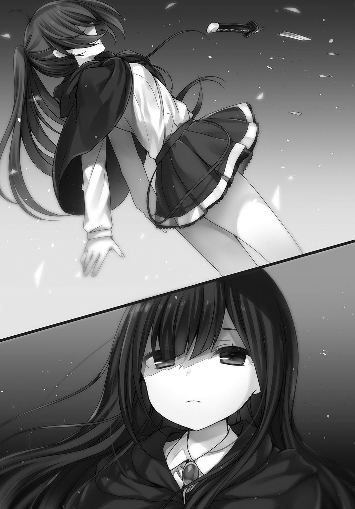
その瞳からぽろぽろと涙が落ちた。
フランベルの打刀は真ん中の辺りから、ぽっきり二つに折れてしまった。
「では失礼する」
可変槍を軽く払うように振るうと、シアンは俺たちに背を向けて、校舎の正門方面へと向けて歩き出す。
プリシラが吠えた。
「ちょ、ちょっと！ フランベルの武器をこんなにして、ごめんなさいもないわけ？」
シアンはプリシラに振り向くことなく言う。
「実戦で武器を破壊されて、敵にそのようなことを言うのか？」
プリシラは黙り込んだ。
擁護するつもりはないが、シアンの言うことももっともだ。
敵は容赦などしてくれない。
シアンの背中が、フランベルとシアンの実力差を表すかのように遠のいていった。
息を呑むような顔つきで、クリスが呟く。
「彼女を......倒せるのかしら？」
お前まで弱気になるなよクリス。
「お前なら十分勝てる見込みはある。けど......」
直近の問題は刀を砕かれたフランベルだった。
エステリオだからこそ、こういった王国内で一般的に流通していない形式の魔法武器も手に入ったわけだが、王都を探しても打刀の魔法武器があるかどうか......。
全力をぶつけてなお、敗北を喫したフランベル。
そんな彼女に俺ができることはなんだ？
シアンと試合をやらせたのは俺の判断ミスでもあるわけだし。
新しい刀について、ここはどーんと任せてもらうぜフランベル。
医務室のベッドで目覚めたフランベルは、目を開けたまま天井をぼんやり見上げていた。
俺はベッドの脇のスツールに座ったまま、彼女に訊く。
「体調はどうだ？ 左肩はプリシラが回復魔法で応急処置したが、痛みはあるか？」
「師匠......ぼく......ぼくぅ......」
アイスブルーの瞳に涙が浮かぶ。
とりとめもなく雫がこぼれ落ちて枕を濡らした。
「勝てなかった......ぼくには戦闘実技しかないのに......シアンは理論魔法も感情魔法も、精霊魔法だって使ってない。なのに......勝てなかったんだ。師匠の言いつけまで破って、一閃を撃って......なのに、通用しなかった」
俺はそっとフランベルの頭を撫でる。
「打刀を握って数日だろ。フランベルはこれからさ」
「あと一週間しかないんだよ！ クリスなら勝てるのかな？ ぼくは......いい気になってたんだ。増長してたんだ」
「自信を持つことは何も悪いことじゃない」
ますますフランベルの顔はぐじゅぐじゅになり、すっかり鼻声だ。
「ししょおおおおおおおお！」
身体を起こすとフランベルは俺の胸に顔を埋めた。
フランベルの自信は彼女の打刀と一緒に、砕かれてしまった。
「どうじよう......せっかく......おし......おしえてもらっだのに......」
問題は打刀だな。代用品はエステリオにはもちろん、王都の魔法武器工房にもあるかどうか。
一閃は長剣では使えない技だが、オーダーメイドするには時間も予算も足りない。
王都に工房を構える名工なんて、向こう三年は予約でいっぱいだろう。
シアンの可変槍に負けない性能を求めるとなると、王都じゃ事実上、刀を入手するのは不可能だ。
適当にあつらえた粗悪品なんて話にならん。
が、刀という武器とフランベルの相性から、今さら長剣に戻すのも惜しい。
悩ましいところだ。
「フランベルは良くがんばってるぞ。俺の教えもちゃんと吸収できてるしな」
技のキレならシアンと同等だ。
まだフランベルが届かない部分が多いことも事実だが、それを自分で解っているからこそ、こんなに悔しがっているんだろう。
シアンには得意な突き技を放ったあとに、消耗しきって眠るような弱点はない。
それに戦闘実技しか使わなかった。各種魔法と組み合わせた戦術は、当然シアンも用意していてしかるべきだ。
入試次席に目立った弱点はないだろうな。
「ぼ、ぼくなんて......うぇ......うぇえええ」
「あんまり自分を卑下するなって」
彼女の頭をそっと撫でる。
夕日射す医務室に、しばらく沈黙が続いた。
フランベルは呼吸も荒く、嗚咽が止まらない。
悔しかったんだな。つらかったんだな。
よしよし。大丈夫だ。俺がついてる。
「師匠......ぼく......どうしたらいい？ どうしたらもっと強くなれる？」
「フランベルくらいの年齢なら、一日で見違えることだってある。焦りは禁物だ」
「師匠もそうだったの？ 一日で見違えるほど、強くなったことがあるの？」
「ん？ あ、ああ」
そっと俺の胸から離れると、フランベルは涙混じりの目をこするようにして顔を上げた。
「どんな修行をしたの!? 教えて師匠!!」
一番効果的だったトレーニングは、魔王とタイマン......かな。
さすがにこれはおすすめできない。
「うーん、教えるっていっても、俺の場合はその......フランベルが俺と同じ修行をしても、うまくいくとは限らないし」
おすすめはしないが、高位魔族との殺し合いに勝る実戦経験はないだろう。
シアン・アプサラスの戦いを垣間見たが、実力の片鱗は感じられた。
あの年齢でフランベルを圧倒したところをみると、かなりの修羅場をくぐってきたんだろう。
もしかしたら、シアンには魔族との戦闘経験があるのかもしれない。
四賢人――アプサラス家が養女に迎えたのも、おそらくその実力を高く評価したからだ。
最高品質の武器を与え、世界最高峰の環境であるエステリオに送り込み、一流の教員のクラスに学ばせる。
アプサラスは次世代の勇者でも育成しようってのか？
さて――
「し、師匠？ どうしたの？ ......やっぱりぼくじゃ、シアンには勝てないのかな？ ううん......シアンだけじゃないよね......ギリアムクラスの誰が出てきても......」
フランベルはしょんぼりとうなだれた。
そういえば、ギリアムクラスの代表は誰になるんだろう。
正直なところ、シアン以外は誰が出てきても一緒な気がした。
まるで負ける気がしない。
今日のフランベルの一閃の仕上がりなら、成績上位者だろうと同じ一年生で反応できるやつなどそうそういない。
技を外さなければ勝ちだ。
フランベルが力を出し尽くして倒れる前に、相手が場外までぶっ飛んでいくのが目に浮かぶ。
「勝てるぞフランベル。まだ一週間あるんだ。これからもビシビシいくぜ！」
「し、師匠おぉ......」
再びフランベルは鼻声になって瞳を潤ませた。
「けどまあ、打刀は砕かれちまったな」
シアンとの試合で明確に勝敗を分けたのは武器のクオリティだ。
もし同格の武器なら、一方的にフランベルが吹き飛ばされるようなことはなかった。
「ど、どうしよう......あの刀、すごく良かったのに......ぼくの力が足りなくて......作った人にも申し訳ない気持ちでいっぱいだよ」
やばい、落ちこませてしまったぞ。
「まあまあ、そんなに責任を感じるなって。きっとあの刀を作ったやつも、力を出し切って折れたと解れば、お前を責めたりしないって。むしろもっと良いものを！ って、奮起するさ。あの刀には、そういう前向きな魂が感じられたからな」
困り顔になりながら、フランベルは小さく「そうだね。うん......そうだといいな」と頷いた。
「フランベル。今日はもうクリスとプリシラは帰したから、お前も寮に戻ってゆっくり休んでくれ」
「えっ!? でも......刀が......武器用具室に、もしかしたら打刀があるかもしれないし」
「そっちは俺に任せてくれ」
申し訳なさそうにフランベルは「うん」と頷くと、ベッドを出て立ち上がる。
「痛たた......」
左肩にまだダメージが残っているみたいだ。
プリシラが傷を治して痛みもある程度緩和させてくれたみたいだが、それでもまだ回復しきっていないのか。
「明日の朝練は休んでいいぞ」
フランベルはブンブンと首を左右に振る。
「一日だって惜しいよ！」
俺は軽く彼女の脳天に手刀を「こんっ！」と当てた。
「痛っ！」
「休息も修行のうちだぞフランベル」
「うう、師匠の愛の鞭が痛いよ！」
身体の傷も心の傷も、まだふさがりきっていないフランベルを、俺は校舎の外まで送る。
昇降口で彼女は振り返ると、小さく笑った。瞳は悲しげだ。
無理して笑っているのがみえみえだぞ。
「師匠！ ここまででいいよ」
外は日が落ちすっかり暗くなっていた。門限ぎりぎりだ。
「正門まで送るぞ？」
そっと目を伏せて、フランベルはかすかに首を左右に振った。
「大丈夫だよ。師匠のおかげで、ぼくはもう......大丈夫だから。いっぱい泣いて、いっぱい悔しくて......スッキリしたよ」
ダンスのターンをするように俺に背を向けて、フランベルは葉桜の並木を正門方面に向けて歩き始めた。
口では大丈夫と言っても、挫折から立ち直るきっかけをフランベルは模索している。
今夜は大仕事になりそうだ。
さてと――
フランベルを見送って校舎に引き返すと、そこに少女が待ち受けていた。
「怪我もだけど、精神的にも大丈夫かしら。心配だわ」
暗い廊下の柱の陰に隠れるように立って、クリスが神妙な顔つきで俺を見つめる。
「今日の所は、帰した方がいいだろう」
「それより、私に頼みたいことっていうのはなにかしら？」
俺はフランベルに噓をついた。
クリスには外泊許可をとってもらい、王都の自宅に一時帰宅したことにしてもらっている。
プリシラにもクリスが自宅に戻ったと、噓をついてしまった。
クリスの家の蔵の収蔵品に、魔法武器がいくつかあったのでフランベルに使えるものがないか、探すという名目だ。
「ええと、私の家には蔵なんてないのだけれど」
「お金持ちじゃないのか？」
クリスの顔がムッとなった。
「べ、別に資産家でもなんでもないわ。もしかして、ありもしない蔵をあてにしていたの？」
「まあ、あればあったで良かったんだがな」
俺はクリスを連れて外に出ると、正門方面ではなく図書館などが集まる資料区画を目指した。
「どこに行くの？ 武器用具室はそっちじゃないわよ」
「蔵ならあるからな。うってつけのやつが」
俺がクリスを連れてたどり着いたのは、六角形の柱のような建物の前だった。
堅牢な外壁に魔法的な結界が幾重にも張り巡らされた、学園の宝物庫。
クリスが目をまん丸くさせる。
「まさか、貴方のいう蔵って......」
「せっかくあるんだから、活用しないのはもったいないだろ！」
「は、犯罪よ！」
「クリスはもちろん通報なんてしないよな。俺たちは共犯者なんだから」
うつむくとクリスは困り顔になった。
「こんなのあり得ない。あり得ないわよ。フェアチャイルド家の人間が......犯罪に荷担するだなんて」
「そういえば、クリスはすぐ俺を訴えようとしてたけど、家は司法関係なのか？」
「えっと......もしかして、レオには言ってなかったかしら」
聞き覚えはあるものの、フェアチャイルドなんて、わりと王都じゃありふれた名字だからあまり気にしなかった。
「悪い。世の中の事には結構疎いんだ」
クリスは大きく息を吐く。
「司法局の検事長。ロア・フェアチャイルドが私の父よ」
「し、司法局？ 検事長って......」
「四賢人の一人って言った方がいいかしら」
うおおおう！ どうりで聞き覚えがあったわけだ。
「法の番人ってわけか。じゃあ手伝いを無理強いはできないな」
「ええそうよ！ 貴方は勇者なのに、見損なったわ！」
「勇者に幻想を抱きすぎだぞ。実際に俺と付き合ってみて、結構適当な人間だってわかっただろ？」
クリスは深く頷いた。
「つ、付き合うという言い方は少し変だけど......型破りというか......けど、今回ばかりはいけないわ」
かたくななクリスに俺は笑って返す。
「まあ、そう怒るなって。だいたい、宝物庫から持ち出された武器をフランベルに持たせるわけないだろ。すぐにバレるんだから」
「じゃあ、どうするっていうの？」
「ちょっと収蔵品を見せてもらうだけだ」
盗むのは情報だ。
「見るってどうやって？ この建物の管理権限はレオにはないでしょ？ 正当な手順を踏んで中に入らないと、すぐに防犯の魔法が発動するわ！」
俺はうんうんと頷いた。
「そこでクリスには外部から協力してもらおうと思ったんだが......」
「わ、私には無理よ！ 犯罪もそうだけど、この結界に干渉するなんて......複雑すぎるもの」
ちゃんとクリスには宝物庫にかけられた結界の類が、読み取れているみたいだ。
「全部任せてくれ。俺が指示する通りにクリスは動いてくれればいい。それに宝物庫の魔法武器は、ちゃんと元に戻すと約束する」
クリスは深く考えこむと、何度も深呼吸してから......しぶしぶ頷いた。
「これもフランベルのため......ひいてはチームのためなのよね。今回だけは見なかったことにしてあげる」
「悪の道に手を染めてもらうぜクリス」
「そういう言い方はしないで！」
協力も取り付けたところで、それじゃあ、さっそく宝物庫破りといきますか。
魔族の砦や城を襲撃しては、略奪の限りを尽くす。
それも勇者の仕事のうちだ。
今回はそれとは少々、同じノリではいけそうにない。
結界は破壊せず、気付かれないように開いて閉じる必要があった。
俺はまず建物正面の扉に手を触れる。
「レオ？ 私は何をすればいいのかしら？」
「まずは見張りだな。まあ、夜の学園内をうろつく輩なんてそうそういないだろうが、時々教員が置き忘れた資料なんかを、取りに戻ってくることがあるんでな」
クリスは小さく頷いた。その間に俺の右手が結界の解析を終える。
さすがエステリオが誇る宝物庫だ。
扉を開ければ石化の魔法。
床や壁に触れれば麻痺の魔法。
庫内の質量が変われば重力魔法で地面に張り付け。
他にも細かいトラップをあげればキリがない。
トラップ魔法は芸術的な組み方で、一分の隙もなかった。
それらすべてが警報魔法に直結し、少しでも異変が起これば守衛ゴーレムや王国の警備兵がスッ飛んでくるようになっている。
この入り口さえダミーで、開けても向こう側が壁だった。
本当の入り口は地下か。
これも厄介だ。
大地属性の精霊魔法で穿って入り口を露出させようものなら、その魔法に反応して警報が鳴る仕組みだった。
鍵を持って近づけば、入り口のあるフロアが自動で地の底からせり上がってくる仕組みである。
「どうなのレオ？ なんとかなりそう？」
「壊すんなら二秒もかからないが、壊さないようにってことになると正攻法じゃ無理だな」
外壁は強靱な魔法障壁材で、魔法力によって様々な種類の魔法への抵抗性が高められていた。
学園全体の魔法力供給を止めて障壁材の防御魔法機能を無効化しても、壁の厚さは一メートル近くある。
壁はただの石材ではなく、岩石を魔法技術で圧縮して硬度をダイヤモンド並みに引き上げているらしい。
組成もいじっているようで、硬度は高いが衝撃に弱いというダイヤモンドの特徴は、うち消されていた。
ちなみに、普通の魔法使いなら建物や扉に触れて、解析魔法を使えば一発アウトである。
隠蔽系の魔法を多重展開した上で解析して、やっと監視魔法の目をそらすことができた。
「さてと、どう攻めるかな」
不安そうにクリスが俺を見つめる。
「リスクが大きすぎやしないかしら？ もし、こんなことをしていると学園側にバレたりしたら、査問どころか刑事告訴されるわ」
「法律が怖くて勇者ができるかよ！」
クリスがムッとする。
「それは聞き捨てならないわね」
「悪い悪い。そう怒るなって。それじゃあクリスには......そうだな。俺はこの場でもう少し内部の構造を解析するんで、魔高炉の保管室に行って、鋼材のブロックを二つほど持ってきてくれ。一つが一キログラムのやつだ」
俺はベルトにつけた鍵束から、魔高炉のある建物の鍵を外して、クリスに投げて渡した。
「え、ええ。わかったわ。五分ちょうだい」
「じゃあ、その五分でこいつを丸裸にしてやるぜ。どっちが早いか勝負だ！」
クリスは勝負と聞いて、駆け足で魔高炉のある校舎の北側に向かった。
再び、俺は集中して宝物庫の内部構造の把握に努める。
内部は地下一階。地上六階か。武器類は地上部分、最上階から下三つ。そのうち剣型の魔法武器が保管されているのは......五階のようだ。
置かれている武器の詳細は、ここからじゃわからない。
この宝物庫は現存する様々な魔法に対応し、破壊から内部を守り、侵入者を拒む仕掛けが満載されている。
理論魔法ランクＡの攻撃にも対応した、素晴らしい建造物だ。
そんなことを考えているうちに、三分ほどでクリスが戻ってきた。
「も、戻ったわよ！」
「ずいぶん早いな。身体強化だけじゃなく、理論魔法で加速と重力制御もしてきたのか」
「え、ええ。それで勝負の結果は？」
「残念。五秒前に解析は終了した。それより、鍵の掛け忘れなんてしてないよな？」
クリスは不機嫌そうに呟く。
「そこまでそそっかしくないわよ。けど、五秒か......惜しかったかも」
俺との勝負に負けたことを悔しそうに呟きつつ、クリスは俺に鋼材を手渡そうとする。
「どこにでもある鋼材だけど、これで何をしようっていうの？」
「まあ、しばらく持っててくれ。必要になったら呼ぶから」
「え、ええ。わかったわ。それと、もし誰か来たらどうすればいいのかしら？」
「その時は柔軟に対応して、うまく誤魔化すんだ」
クリスの顔が緊張でこわばる。
「そ、そんなこと、できないわ！ アドリブが一番苦手なのよ！」
「じゃあ苦手を克服するチャンスだな。といっても、こんな時間に姿を現すようなバカはそうそういないって！」
ムズムズと落ち着かない口振りでクリスが言う。
「ともかく早く仕事を済ませてちょうだい！」
「ＯＫボス！ お任せアレ！」
「その言い方だと、私が窃盗団の主犯みたいじゃない！」
ぷくっとほっぺたを膨らませるクリスが、フッと俺の眼下に移動した。
というか、俺が空中に浮かんだのだ。
ランクＡの理論魔法。浮遊である。
吹き飛ばしたり落下速度を落とすのも理論魔法による重力制御だが、その究極は自在に空中散歩をする、浮遊飛行能力だと俺は思う。
理論魔法の痕跡が残ってしまうのは、この際仕方ない。
まあ、この痕跡が俺のものだと鑑定できるのは、正体を知るクリスだけだしな。
地上から俺を見上げて、クリスがぽつりと呟く。
「すごい......安定性もそうだけど......なんて美しい式なのかしら」
「そんなに褒められると照れるな」
「使い手のいい加減な性格が噓みたいね」
チクリと俺を一刺ししてクリスは微笑んだ。俺はクリスに告げる。
「クリスと会話できるよう、通話魔法のパスを開いておく」
「わかったわ。ええと......こちらは特別になにかした方がいいかしら？」
「いや、特にはないから。俺がそばにいるつもりで話してくれ」
クリスが頷いたのを確認して、俺は高度を上げると目的の階層の前にやってきた。
空中に静止したまま、入念に魔法式を構築する。
先日、緊急回避的に使った時は荒い展開をしてしまったが、今回は精密な演算を心がけた。
式が完成し、発動させようとしたその時――
ん？ 足下のクリスの様子がおかしい。彼女の視線は宝物庫の建物ではなく、校舎側を向いていた。
そして、すぐに俺に向かって顔をぶんぶんと左右に振る。
どうしたんだ？
焦るクリスの視線が再び校舎方面に向くと、夜の闇の中に白い人影がぼんやりと浮かび上がった。
ギリアムだ。
なんであいつがこんなところに!? よりにもよってこのタイミングで!?
というか、まずいな。
ギリアムが少しでも上を向いて空に浮く俺を目撃したら、申し開きがたたない。
ごめんクリス。
この場はなんとか誤魔化してくれ!!
俺は短距離瞬間移動魔法を発動させた。
外の風景が一瞬で闇の世界に切り替わる。
建物の内部に入っても、俺は浮遊したままだ。壁にも床にも天井にも触れていない。
中は真っ暗だが、うかつに光源魔法は使えない。光に反応するトラップもこのフロアにはかけられていた。
目の中に入る光の量を増幅させる、暗視魔法でも無理そうだ。
内部の湿度や温度は魔法によって一定に保たれている。
おかげで酸欠になるようなことだけは免れた。
連絡のため、クリスにターゲットしておいた通話魔法が声を拾った。
建物の外の会話が俺の耳元に届く。
『おやおや。こんな夜更けに寮にもおらず、貴女はいったい何をしているのでしょう？』
『え、ええと......』
『その手にしているのは......鋼材ですね？ いったい何に使うというのですか？』
『べ、別にいいでしょ。貴方には関係ないわ』
『関係なくもありません。私のクラスの生徒でなくとも、教員である以上、素行不良の生徒を指導しないわけにはいきませんから』
『べ、別に不良じゃないわ。これは......特訓よ！』
不意にクリスの『ハッ！ ハッ！ ハッ！』という、短く気合いのこもった声が聞こえてきた。
『こうして！ 鋼材を持って！ その重さの負荷をかけて身体を動かす訓練よ！』
『なんと原始的で非効率的なトレーニングをしているのでしょう。ああ、情けない。それもあの平民の指示ですか？ 愚かしい。実に滑稽だ。訓練ではなく体罰でしょうに』
『これはレオの指導じゃなくて、私が独自に生み出したものよ！』
『そんな噓までつかせて......。ハァ、貴女という傷のないエメラルドの原石を、あの平民はいったいなんだと思っているのでしょう。今からでも遅くはありません。貴女も我が栄光のギリアムクラスに来ませんか？ 貴女は特別な存在なのですから』
『断るわ。何度も言わせないでちょうだい』
『そうですか......しかし、こんなことは言いたくないのですが、私としては寮を抜け出し夜の学園で訓練をしていた貴女を、どう報告すべきか悩ましいところですね。寮の規約違反ではありませんか？』
『一時帰宅のため外泊許可はとっているわ。今日はその......一度は自宅に帰ったけど、訓練がしたくて学園に戻ってきたのよ。この訓練が終わったら寮ではなく自宅に帰るわ』
『おかしな人だ。その奇妙な体操なら寮であれ自宅であれ、できるでしょうに』
『手頃な鋼材がなかったのよ！ こ、この鋼材が今の私にはぴったりなの』
『......そもそも、その鋼材はいつ持ち出されたものですか？ 鋼材の刻印はエステリオのモノですよね？』
『え、ええと......それは授業中よ！ その......外に隠しておいたの』
『隠した？ まあ、基本鋼材の利用はすべての生徒に認められていますから、窃盗には当たりませんが......無断の持ち出しは褒められる行為とは言えませんよ。それにおかしいですね。そもそも一年生の一学期には魔法工学の授業はありませんが？』
『魔法工学に興味があって、空いた時間に自主的に見学に行ったのよ！ その時、手頃な大きさと重さの鋼材があったから、わ、分けてもらったの』
『いったい誰にです？』
『それは......その......たまたま、居合わせた名前も知らない男子の先輩よ。余った鋼材だというから』
『ふむ......』
執拗な尋問がようやく止まった。すかさずクリスが訊き返す。
『そういう貴方は、なんでこんな時間に学園の敷地にいるの？』
『明日の授業で使うテキストの修正案を思いつきましてね。関連資料と教材を取りに戻ったんですよ。ついでに散歩をしていたところ、人の気配を感じたので来てみれば、貴女がいたというわけです』
スラスラと淀みなくギリアムは続けた。
『私は運命を感じました。このように偶然さえ味方して、貴女と引かれ合うことが、あらかじめ決められていたかのようです』
がさりと物音が聞こえた。
『あの......それ以上近づかないでもらえますか？』
不穏な空気だ。どうする？ 一旦戻るか？
『何を怖がっているのです？ 私は紳士ですよ。さあ、今日はもう遅いですから、あの平民にでも吹き込まれたであろう、くだらない特訓という名の体罰はそれくらいにして......』
『だから......この訓練はレオの指示じゃないわ！』
『そうですかそうですか。まあ些細なことですね。そうだ！ せっかくですし家まで送って差し上げましょう！ 家の方も私のような一流の教員が送り届けたとなれば、無断の夜間外出であっても信頼してくれるに違いありません』
『余計なことはしないでください』
『まあまあ......そうですね、では、こういうことにしましょう。貴女は私の個人レッスンを受けていてこんな時間になってしまった......と。言い分として完璧ではありませんか？』
『私に構わないで』
クリスの声色が緊迫した。
仕方ない。もう一度、短距離瞬間移動魔法で外に出るか。
『いい加減にしてほしいものです。子供は大人の言うことを聞いていればいいんですから』
ギリアムの声が怒気を孕んだ。ああ、こりゃあ爆発寸前だな。
二人の死角に出るように、瞬間移動の魔法式の演算を開始した矢先――
ゴトンと重い音とともに......。
バチンッ！
と、俺の耳元で破裂音が鳴った。
自分がやられたわけでもないのに、つい俺は頰をさする。
先に爆発したのはギリアムではなく、クリスの方だった。
『最低ね。貴方』
『教員に手を上げるとは......いったいどういうつもりですか!?』
『どうもこうもないわ。手首......離してくれないかしら？』
どうやらクリスはギリアムに腕を摑まれていたらしい。
摑まれていない方の手から鋼材を手放したクリスが、ギリアムにビンタを喰らわせた......ってところか。
『離して』
クリスの感情のこもっていない口振りから、彼女がどれだけ冷たい視線をしているのか想像がついた。
『......君は一度、本当に痛い目をみなければわからないようだね』
『脅迫ですか？』
『いいや。大人からのアドバイスだよ』
スッと熱気が引くように、ギリアムの口振りは落ち着きを取り戻した。
しばらく沈黙が続く。
それから、かすかに足音が遠のいていった。
『もう大丈夫よレオ......。ごまかせたと思うわ。それにしても......心臓に悪いわね。作業を続けてちょうだい。それと、できるだけ早く終わらせてね』
俺はこちらから、クリスの耳元に声を飛ばした。
「ありがとうクリス。よくがんばったな」
『何かあればレオが助けに来てくれると思ったら、普段よりも怖い物知らずになれたみたい。すぐに手が出るのは、いい加減直さなきゃいけないわね』
「ギリアムにはあれでいいさ。さっそく取りかかるから、鋼材を手に持っていてくれ」
通話魔法越しに彼女が『わかったわ』と返答したのを確認して、俺は建物の内部に音響魔法を使った。
音の反響によって物体の位置を把握する。
塗りつぶしたような闇の中を浮遊しながら進むと、俺は再び音響魔法を放った。
頭の中に室内の構造が描かれる。
色のない輪郭だけの情報だが、十分だ。
収められている剣の種類こそ多いが、本数はそれほどでもない。
各ジャンルの剣、それぞれ一種類ずつが収蔵されているようだった。
長剣や短剣。曲刀。上腕に直接装着するアームブレードなんて変わり種もある。
そのどれもが、音響魔法の反射音だけで純度の高い精密な仕上げの、名工の作品だとわかった。
そんな中から、俺は目当ての一本を見つけ出す。
打刀とほぼ同じ長さの刀身だ。
幾重にも隠蔽魔法をかけた右手の人差し指で、柄に触れる。
その重さを確認した。
１４２２グラム。
俺は魔法式を構築すると、クリスが手にしている鋼材からきっちり１４２２グラムを物質転移魔法で切り取り、瞬時に刀と入れ替えた。
物質の引き寄せの魔法の応用だ。
この建物内の重さは、一瞬たりとも変わっていない。
作業を終えると、俺は短距離瞬間移動魔法で壁の外に出た。
「――ッ!?」
少し焦って浮遊魔法を切らし、地上五階の高さから俺は墜落する。
外に出た安堵感で油断したな。
「レオ！ 危ない！」
地面にぶつかる寸前のところで、クリスが重力制御魔法で俺の墜落の衝撃を無効化してくれた。
俺は腕の中に名刀を抱きながら、彼女の魔法でゆっくり地面に下ろされた。
「ふぅ......最後でちょっと失敗したが、なんとかなったみたいだな」
クリスはおっかなびっくりしたような顔だ。
「警報が起動した様子はないけど、いったい何が起こったの？ 急に私が持っていた鋼材が消えて......でも、一部はこうして残ってるし」
「この刀の重量分だけ入れ替えたんだ。誰かが中に入って臨検でもしない限りは、バレないだろう。強固な防壁ほど『絶対に破られない』という信頼が油断を生むって寸法さ」
立ち上がろうとする俺に、クリスは手を差し伸べた。
「ともかく、これでミッションは達成ね？」
「まあ、第一段階はな」
少しだけ怒ったような顔でクリスは続けた。
「けど、もうさっきみたいにハラハラするような事は、させないでよね」
強がる口振りに、クリスが怖がっていたことが痛いくらい伝わってきた。
「ああ。気をつけるよ」
名刀を手にできたのもクリスの協力あってのことだ。いくら感謝してもしきれないぜ。
クリスは王都の自宅に自家用馬車で帰っていった。
蔵はなくとも、さすがはフェアチャイルド家。四賢人の家系だな。
手に入った名刀の銘は入っていない。
おそらく、刀匠があえて無銘にしたのだろう。
使い手が名を与えることで、この刀との適合率を上げる仕組みだ。
無銘だが幾重にも内装された魔法式によって、材質を越えた性能を与えられている。
これを使いこなすには相当な量の魔法力が必要だろう。
たぶん、力の足りない人間が使えば魔法力を根こそぎ吸い上げられて、命を奪われるだろうな。
宝物庫に封印されるに値する名刀だ。
俺は、そんな名刀を手にして祭祀場に向かうと、とある召喚獣の存在座標を交えた召喚魔法言語を唱えた。
意訳するとこうだ。
「おいコラ、出てこいよ、獅子王」
一瞬で祭祀場のステージに魔法陣が展開し、そこから巨大な影が飛び出して、俺の前にひざまずいた。
「は、ははー！ レオ様、なんでしょうか？」
俺の姿と得物を見るなり、獅子王はブルリと身震いする。
「なんか、プリシラの時とはずいぶん態度が違うなぁ？」
「め、めめめ滅相もない!! 我は......わ、わたくしめはなにも変わっておりませんぞ」
プリシラの前では威圧感を出し続けていたが、俺とタイマンになればあっさりこうなるのか。
俺はにんまり笑った。
「大丈夫だって。何もしないから。それに幻体なんだしいくら斬られても問題ないだろ？」
「問題ありますから！ 幻体だって回復には時間がかかりますから！ というか、何もしないと言っておきながら、斬る気まんまんですか!?」
俺の持つ名刀に獅子王の視線は釘付けだ。
「おう、悪い悪い。これは借り物なんだ。気にしないでくれ」
獅子王の青い瞳が動揺で揺らぐ。かなりびびらせてしまったらしい。
知性のある召喚獣にとって、幻体というのはもう一つの世界で活動するアバターのようなものだ。
たとえアバターであっても、むやみやたらに破壊されたくはないんだろう。
俺はどこかに召喚されても、向こうで俺のアバターがどうなろうが気にしないけどな。
獅子王は恐る恐る俺に訊く。
「で、ではその、試し斬りでないならどのような御用でしょうかレオ様？」
「お前、アダマンタイトを持ってるよな？ あれの塊を一つ。あと彫金用にミスリルと、鞘に使う神木......それから、大きめな青い宝石が欲しい。純度の高いサファイアで勘弁してやる」
「か、喝上げですか!?」
「そんなんじゃないって。俺ら友達だろぅ？ それとも、お前の実はビビリな本性をプリシラにバラそうか？」
「勘弁してくださいなんでもします！ なんでもしますからぁ......」
泣きっ面になった獅子王は、足下から俺の欲しい品を次々と、こちらの世界に具現化させた。
「偽物摑ませたらただじゃ済まないからな？」
「とんでもない！ これらは我が宝物庫から持ち出した、正真正銘の本物！ 是非お受け取りください！」
俺はサファイアを手にして解析した。偽装はなし。大きさもドングリほどで、澄み切った蒼だった。
「あ、あのレオ様。よろしければミスリルだけでなく、オリハルコンの方も手配できますが......」
「ああ、それはいいや。素材としてはそっちの方が魅力的だが、今回は可愛い弟子を、相手と同じ土俵にのせてやりたいだけだから」
「は、ははー！ それでは我はこのあたりで......」
勝手に魔法陣の中に逃げようとする獅子王に俺は言う。
「待て」
「ひい！ まだ、なにか？」
「対価を払ってないからな。今夜限り有効な俺の存在座標をくれてやる。パスも一晩は通したままにしておくから、好きに使ってくれ」
「ええっ!? よろしいので？」
「ああ。ただし、人間相手には使うなよ。というか使った瞬間に、俺の幻体がお前の本体を殺す。使用上の注意はそれくらいだな」
俺が笑うと獅子王はブルリと震えた。
「でしたら、我が領土の大森林に侵食してくる蟲どもの掃討に、助力いただきたくぞんじます」
「わかった。それじゃあな！」
「かたじけない。レオ様」
そう言い残すと、今度は怯えるのではなく、スッと礼をして獅子王の幻体は元の世界に戻っていった。
こういうのはギブアンドテイクだ。
俺は獅子王から巻き上げた......もとい、前払いしてもらった分だけの戦果を約束して、名刀の詳細な解析作業は明日に持ち越し、名刀を素材類とともに管理人室に持ち帰ると眠りについた。
夢の中で蟲どもを殲滅する。
召喚されている時には二通りあるのだが、こうして眠って意識も向こう側に行っている状況だと、より力を発揮できる。
まあ、自動人形状態でも意識が入っていても、やることは対して変わらないんだが。
獅子王の森で破壊した蟲の巣は数知れず。
一匹たりとも残さず徹底的に焼き尽くした結果......。
獅子王だけでなく、その眷属たちにも俺はすっかりどん引きされてしまった。
ちょっと本気を出すとこういう空気になるから嫌なんだよな。まったく。
翌朝――
クリスとプリシラには持久走を指示した。
距離を25㎞に延ばし、ゴールまでのタイムを争うのではなく、一定のペースを守ることを主題に走ってもらうことにする。
エミリアには、クリスとプリシラがゴールしてからのケアを頼んだ。
「はい！ 待っている間に、わたしももっとルールのことや、基礎訓練のことなど勉強しておきます。戦うことはできませんが、みなさんと気持ちは一緒です！」
「ごめんなエミリア先生。色々と押しつけちゃって」
「そ、そんな！ わたしの方こそレオさんにお任せしきりで......教員として恥ずかしいです」
いじらしいけど、相変わらずエミリアは自分に自信がもてないんだな。
「またネガティブになってるぞ」
「あっ......い、いけませんね！ 反省......しません！」
「落ちこまなくていいから反省はしてくれ」
「あ、あわわわ！ そうですね！ 反省します！」
時々、エミリアは年齢よりも幼く見えることがあった。
俺は振り返って二人の少女に声をかける。
「それじゃあクリスとプリシラはしっかり走るように」
プリシラが不満げに口を尖らせた。
「えー！ フランベルだけ別メニューとかずるくない？」
練習とはちょっと違うんだが、フランベルにはやってもらいたいことがあった。
「別メニューというか、今日はフランベルには一日、俺に付き合ってもらう。授業も休みだ。エミリア先生にはフランベルは『研究のために通常授業を欠席』という形にしてもらいたいんだが、大丈夫だよな？」
「そういうことでしたら、生徒には研究休みを取る権利がありますから。成果物の報告やレポートは必要ですが......」
問題なさそうだ。俺はエミリアに「よろしく頼むぜ」とお願いした。
フランベルが両手をあげて笑顔になる。
「わーいわーい！ 授業をさぼれるんだね！ やったー！」
「喜ぶなッ！ エミリア先生。そういうことだから、一日フランベルを借りるぞ」
「は、はい！ では研究日ということで申請しておきますね！」
フランベルは頷いた。
「レオ師匠！ 一日さぼってなにするんだい？ デートかな？」
プリシラがブンブンと頭を左右に振った。
「ずるいー！ あたしもデートしたいよレオっち！ そうだ！ クリっちもエミリアせんせーも、いっしょにサボっちゃおうよ！」
すかさずクリスがプリシラに釘を刺した。
「それはいけないわプリシラ。そうですよねエミリア先生......先生？」
エミリアはぼやーっとした表情で「それも......いいかもしれませんね」と呟いた。
「おいおい、しっかりしてくれエミリア先生」
ハッとした顔になって、エミリアは頷いた。
「い、今のは冗談です。気にしないでください」
わかりにくい冗談だな。
俺は補足するようにエミリアに告げた。
「ともかく、フランベルにはさぼらせないから安心してくれ。成果物の報告もきちんとやらせる。クリスとプリシラはエミリア先生の指示に従うように。それじゃあ行くぞフランベル」
俺が歩き出すと、フランベルが子犬みたいについてきた。
「ねえねえ！ どこに行くんだい師匠？」
「到着してのお楽しみだ」
俺は一度、校舎に入って管理人室で荷物を回収すると、フランベルを連れて学園の敷地の北側に向かった。
高い煙突がいくつも並ぶ棟に到着するなり、フランベルがそれを見上げながら声をあげる。
朝から熱心な生徒がいるのか、煙突は一本だけ煙を上げていた。
「うわあああ！ この煙突......もしかして大きな浴場かな？」
「まあ、中に入れば解るさ」
フランベルを引き連れて、俺は煙突のある建物の中へと踏み行った。
魔高炉にくべる燃料は、魔法力がこもった特殊な石炭だ。
フランベルにくべさせるためのスコップを持たせる。
「師匠......ここはお風呂じゃないのかい？」
「残念だったな。けど、たくさん汗はかけると思うぞ」
金槌の準備も万端だ。
一通り支度を終えて、俺はお手本の名刀を抜く。
瞬間――フランベルの瞳がハートマークになった。
「し、ししし師匠！ この刀は!? すごいよ！ 半端じゃないよ！ 圧倒されちゃうよ！」
「こらこら、刃に近づきすぎだぞ。こいつは刃付けもしてある実戦用だ」
うっとりとした顔でフランベルは頷いた。
「そ、そっかぁ......刃付けされた武器は学園の規則で使えないんだよね？ ところでこんなに凄い〝気〟を発している刀を、師匠はいったいどこで見つけてきたんだい？」
「あ、ああ......実はな......昨日、クリスが寮にいなかっただろ？」
「うん。用事があって、実家に一時帰宅したって聞いたよ」
「実家にあるかもしれないっていうんで、探してきてもらった。借り物だから丁寧に扱わないとな」
フランベルが突然、ほろりと涙の雫を頰にすべらせた。
「そんな......ぼくのためにわざわざ？ クリスはそんなこと、一言も言ってないよ！」
フランベルは少し怒ってさえいるようだった。
「クリスは恩を着せるような性格じゃないからな」
「そうだね。ありがたく使わせてもらうよ！」
こらこら、借り物だし刃付けされてるから使えないと説明したばかりだろ。
「いいかフランベル。これはあくまで模倣の対象だ」
「模倣？ 模倣って？」
ここまで準備したのに、フランベルはまだ気付いてないみたいだな。
「今から、この名刀の模造刀を作るんだ。俺たち二人で！」
フランベルは半分口を開けて、目を見開いた。
「えええええええ!? 無理だよ！ ぼく、刀どころか鍛冶仕事なんてしたことないよ！」
「安心しろ。刀身と鞘は俺が担当する。フランベルには魔高炉に燃料をくべて、柄や鐔の装飾をしてもらう」
フランベルがもじもじと膝をすりあわせるようにした。
「うう、出来るかなぁ」
「やるんだ。鋼材も用意してあるから、さっそく取りかかるぞ！」
「わかったよ師匠！ そうだよね！ 誰かにもらうんじゃなくて、自分でなんとかしなくっちゃ！ ぼく、がんばるから！」
さっそく魔高炉に火を入れて、フランベルに燃料を休みなくくべさせた。
温度を上げる。
炉の内部の魔法陣が過熱を促進した。
梃子棒を手にして、アダマンタイトの加工に移る。
王都で名工ともてはやされる一流の鍛冶職人でも、アダマンタイトの刀身を叩き上げられる人間は五人もいないだろう。
魔高炉の温度が上がりきる前に、早くも俺とフランベルは全身汗だくだ。
「師匠！ ぼく、濡れちゃたみたいだよ」
言い方がおかしいぞフランベル！ 熱さで変になっちまったのか？
「火力を落とすな！ くべ続けろ！」
「はい師匠！ うおおおおおおおおおおおおおおおお！」
上着を脱ぎ、ブラウスの袖をまくってフランベルは懸命にスコップを振るった。
火力を維持するのは体力勝負だ。
ひたすらに懸命に、炉の炎に魂を込め続ける。
一つの事に集中できるフランベルだからこそ、その集中を切らすことなく続けられた。
石炭をくべるたび、フランベル自身の魔法力も炉にくべているようなものだ。
俺は金槌を置くと、名刀を手にして、その構造を確認するように解析する。
刃を俺の頭の中で分解し、込められた魔法式を読み解き、解きほぐし、要素を抽出すると再び刀の形に戻す。
それが終わると名刀を鞘に納め、十分に熱されたアダマンタイトを金槌で叩いた。
カアアアアアアアアアアアアアアン！
カアアアアアアアアアアアアアアン！
鐘の音のように透き通った音が響き渡る。
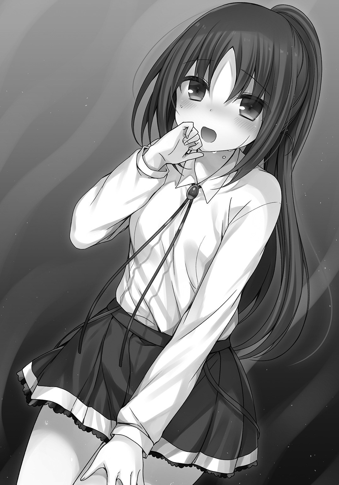
金槌で打つ度に、アダマンタイトに魔法式を込める。
この式の込め方一つで、仕上がりが変わるのだ。
俺は黙々と金槌で打ち、鍛え、熱し、折り返し、式を込め、再び打つを繰り返した。
フランベルも炉の火を絶やさないよう、スコップを振るい続ける。
「フランベル......つらいか？ 悪いが途中休憩はできない。ペースを落として調整してくれ」
「ううん......大丈夫。ぼく......嬉しいよ。師匠やクリスや、プリシラやエミリア先生......みんなの気持ちに応えたい......だから、つらくない！ この熱さの向こうに......未来があると信じてるから！」
その言葉に頷くと、そこから先、俺もフランベルも言葉を交わさずひたすら汗まみれになって作業を続けた。
――炉に火を入れてから三時間。
作業は休みなくぶっ続けだ。
王都の名工でも三時間では形にならないが、理論魔法や精霊魔法を組み合わせた俺の鍛冶技法で、一気に焼き入れまで仕上げた。
久しぶりに武器を作ったわけだが、我ながらなかなかの出来映えだ。
つい、刃付けをしたくなったが我慢する。
フランベルはひっきりなしに休みなく作業を続けて、脱水症状を起こしかけていた。
「よくがんばったなフランベル」
「え、えへへへ......ぼくは......石炭をくべてただけだよ......」
普通の鍛冶仕事と魔法工学の鍛冶は、ある意味別物だ。
それでも、良いモノを生みだそうという強い気持ちが宿る......と、俺は思う。
フランベルの魔法力も込められた炎によって、鍛えられたアダマンタイトの塊は、高性能設計の名刀を模倣しつつ、俺の持てる技術と魔法知識を総動員して、まったく新しい刃となった。
休憩を挟んで、午後からは刀身以外の鐔や留め金などをミスリルで加工した。
工作室で神木から鞘と柄を作製する。作業は急ピッチだが手は抜かない。
柄にフランベルの魔法力を込めたサファイアを埋め込んだ。
これで、彼女の魔法力をロスなく刀身に流し込むことができるはずだ。
フランベルは鞘を塗り、ミスリル細工をし、柄糸を巻く。この柄糸はシアンに砕かれてしまった打刀の柄から取ったものだ。
自分に〝一閃〟を教えてくれた打刀の一部でも、残したいというフランベルたっての希望だ。
時間の掛かる乾燥などの行程は、魔法の補助で短縮する。
完成した刀は、深みのある鋼色の刀身に青い鞘という、フランベルらしい色彩を纏った仕上がりだ。
ミスリルを燻した鐔も味わい深い。
全てが組み上がり完成した時には、すっかり日も暮れかけていた。
他に利用者もいない、学園内の工作室に俺はフランベルと二人きりになる。
鞘に納まった刀を改めて手にとると、フランベルが歓喜の声を上げた。
「うわあああああ！ こ、これで完成......したのかな？」
「この世界に二つとない、お前のためのオーダーメイドだ。さてと......フランベル。そいつに銘を与えてやってくれ。それでようやく完成だ」
「銘って......名前をつけるの？」
不思議そうにフランベルは首を傾げた。
「ああ。その刀は俺とお前の子供みたいなものだしな。名前をつけるのは親の務めだろ？」
フランベルの顔がかあああっ！ と赤くなる。
「え、えっと......子供......師匠とぼくの......赤ちゃん......はわわわ」
「おいおい。赤ちゃんは言い過ぎだろ」
「つ、つけられないよ！ 師匠！ お願いだから師匠が名付けて！」
「お前が使うのに、俺が名付けていいのか？」
うんと頷いてフランベルは俺に詰め寄った。
「師匠が打って、師匠が名付けてくれた刀を使いたいんだ！」
魔法武器との相性は、その武器をどれだけ好きになれるかも関係してくる。
フランベルが俺にゆだねたいというなら、良い名前を贈ってやろう。
「わかった。それじゃあ......そうだな」
日が暮れて、月が東の空に昇り始めた。
「蒼い月......蒼月ってのはどうだ？」
フランベルが「わぁ」と口を開いて感嘆の声を漏らす。
「すごいや師匠！ ぴったりだ！ この子は蒼月......ぼくの蒼月！」
フランベルが蒼月を抜き払った。
その刀身に光が宿り、銘が打ち込まれる。
完成だ。使い手と刀の魂が、銘によって一つに結ばれた瞬間だった。
「どうだフランベル？ 使いこなせそうか？」
フランベルはにっこり微笑む。
「必ず使いこなしてみせるよ！ ありがとう......師匠」
笑顔から一転――思い詰めたような表情になって、フランベルは蒼月を鞘に納めると上目遣いで俺を見つめた。
「こんなにしてもらって、ぼくは師匠に何かお返しがしたいよ」
「別に礼なんていいって」
「あ、あのね......師匠！ ぼくの......ええと......ぼ、ぼくの初めてをもらってよ！」
「初めてってなんだよ？」
「しょ、しょしょ......処女をもらってほしいんだ！」
「お、お前いきなりなんて爆弾発言ぶち込んでくるんだよ!?」
真剣な顔つきのままフランベルは続けた。
「今すぐじゃなくても、大人になったら師匠に捧げるから！ それならいいでしょ！」
「いいわけあるかぁ！」
「師匠はぼくのこと......嫌い？」
「その訊かれ方をして、嫌いなんて言えるか」
フランベルは困り顔だ。
「そ、そうだよね。けど......ぼくは本気だよ！ ぼくの大切なものを捧げても、あまりあるものをもらえたから。いつでもぼくで筆下ろししてよね！」
「俺の童貞設定、まだ生きてるのかよ！」
はにかむように笑うフランベルに、俺はそれ以上返す言葉を思いつかなかった。
フランベルの準備も整ったな。あとは彼女が生まれたての蒼月を、どこまで育てられるか次第だろう。
10．クリス編
フランベルの魔法武器――蒼月が完成したその日の夜、寮に帰る前にクリスに再び協力してもらって、俺は学園の宝物庫に模倣元の名刀を返却した。
少し元気がないように見えたクリスに「調子悪いのか？」と訊いてみたのだが「そんなこと......ないわよ」と彼女は力なく笑う。
正門まで彼女を送ると、彼女は門を出る手前で立ち止まった。
「あ、あのね......レオ......」
「ん？ なんだクリス？」
クリスはどことなく、寂しそうな顔だ。
「......ええと......良かったわね。フランベルの新しい刀が完成して」
「ああ！ クリスが協力してくれたおかげで、良いお手本もみられたしな。俺も魔法工学は専門じゃないから、名工の作品を模倣できて勉強になったよ」
「本当になんでもできるのね？」
「まあ、必要に迫られ続けているうちに、色々できるようになったってだけさ」
クリスは小さく息を吐いた。
「プリシラは新しい武器もそうだけど、クロちゃんを呼べるようになったし......」
「クロちゃんのやつ、あんなに大きくなっちまって、クリスとしてはちょっともったいなかったか？」
ハッと目を丸くさせて、クリスは首を左右に振った。
「そ、そんなことないわよ。試合でプリシラを守ってくれる、強い味方だもの」
俺は頷いた。
「そうだな。プリシラががんばったのももちろんだが、獅子王を相手にクリスもしっかりフォローしてくれた。考えてみると、お前に助けられっぱなしだ」
「わ、私に頼らなくても、レオならなんでも一人でできるんじゃないの？」
「買いかぶりすぎだ。実はこの前、王都で襲撃に遭った時も、クリスがいなけりゃ危うく死んでたかもしれないんだぜ」
急にクリスは眉尻を下げて、ため息を吐いた。
「あれは......私がレオを尾行したせいで、レオのピンチを招いたようなものだし」
俺は軽く拳を握ると、クリスのおでこのあたりをそっと小突く。
「痛っ......いきなりなにするのよ？」
「そういうのは言いっこなしだ」
ムッとしたかと思うと、クリスは軽く肩を上下させた。
「そうね......そろそろ寮に戻らないと。門限を誤魔化してもらってるけど、あまり遅くなるとプリシラたちに、あることないこと詮索されるから」
クリスが再び歩き出し、正門の外に出ると振り返った。
「それじゃあ、少し早いけど......お休みなさい」
「ああ。お休み。気をつけて帰れよ！」
小さく手を振って、クリスは寮へと続く道を歩く。
それにしても......様子がおかしかったな。
もしかしてクリスも新しい武器が欲しいんだろうか？
彼女の計算尺は古い物だが、しっかりとした確かな物だ。
ショートソードこそ武器用具室産の生徒の作品なものの、あれはクリスの気づきを促すためのものだし......。
もう一度くらい、獅子王から素材を提供させようか？
プリシラには召喚獣クロちゃんとアダマンタイトスタッフがある。
フランベルには蒼月と抜刀術一閃があった。
限られた時間の中で、それぞれの準備を整えることができたのは、クリスが支えてくれたおかげだ。
俺はクリスに頼りすぎていたのかもしれない。
交流戦まであと三日となった。
準備期間ということで、授業は午前中までだ。
俺は各階のトイレの石けん水の補充をするついでに、エミリアクラスの様子を見に行った。
帰りのホームルームの最中だが、他のクラスと比べて明らかに士気が低い。
他のクラスが代表選手のために、午後の空いた時間を使って応援の横断幕を作るといったことをしているのに、エミリアクラスにはまるでその気配がない。
つい、俺は教室に乗り込んでしまった。
「よう！ 久しぶりだなエミリアクラスの諸君」
クリスたちとエミリア以外、俺に視線を向けもしない。
「どうした元気がないな？ もうすぐ交流戦だっていうのに、盛り上がりにかけるんじゃないか？ クラスの代表三人を、もっと応援してくれよ！」
空気を読まない俺の言葉に、教室内がしんと静まり返った。
エミリアも「あ、あのレオさん！ いきなり困ります」と、言いながらおずおずしっぱなしだ。
クラスの男子生徒がぼそりと呟いた。
「どーせ勝てるわけねぇじゃん」
俺が視線を向けると、その生徒はそっぽを向いた。
選手以外のクラス全員の、心の代弁者ってところか。
まあ、信じられないのも無理もない。
今日まで――放課後の訓練風景を見学しにきたクラスメートはいなかったしな。
プリシラとフランベルが見違えるほど強くなったのを、知らないのだ。
「俺がコーチを受けた時、勝たせるチームを作ると約束した。相手が誰であろうと三勝するつもりだ。それができるだけの力を、クリスもプリシラもフランベルも持っている」
名前を出されてプリシラは眉を八の字にさせた。困り顔だ。
フランベルは得意げに胸を張る。
そしてクリスはというと、どことなく怪訝そうな顔つきだった。
俺は沈黙する生徒たちに続ける。
「勝負は時の運も絡むが、それでも俺たちが勝つ」
今度は教室の隅の席に座った女子生徒が呟いた。
「入試主席のクリスさんだけなら、勝てるわよね」
俺が視線を向けると、その女子生徒も顔を伏せた。言い方にトゲがある。
「クリスだけじゃないぜ。プリシラもフランベルも、戦える力を自ら望んで鍛えてきた。俺に言われたからじゃない。自分から前に進もうと願って努力したんだ。お前たちも本気になれば三日で変わるもんだぜ。若いんだからな！」
しらけた空気が俺を包み込む。
エミリアクラスの生徒たちの心理状態は、ますます悪化しているようだ。
交流戦で勝つしかないか。
それがこのクラスにとって唯一の特効薬だ。
不意に、一人の女子生徒が立ち上がった。
「私はまだ、貴方になにも教わってないわ」
抗議の声を上げたのは、意外にも......クリスだった。
教室内が更なる沈黙に包まれる中、クリスが真剣な眼差しで俺に訴える。
プリシラもフランベルも口を半分開けて目を見開いてた。
ハッとしてから、慌ててプリシラが声をあげる。
「ほ、ほら！ クリっちはランクＡの理論魔法使いじゃん！ いくらレオっちがすごくても、理論魔法は無理なんじゃないかな？」
フランベルも頷いた。
「ぼくもプリシラと同じ意見だよ。それにクリスはそのままでも強いじゃないか？ もっと強くなりたいっていう気持ちは、ぼくにもわかるよ。だけど、レオにだって出来ないことはあるんだから」
クリスがうつむいた。
「それは......その......違うの！」
待てクリス。俺の正体は俺とお前、二人だけの秘密だよな？
エミリアも、この場をどうしていいのかわからず「あわわわ」と狼狽えるばかりだ。
クリスは全身をわななかせた。
「レオは......レオは......」
声まで震えている。
彼女の口からすべてを明かされたら、俺はもうここにはいられない。
「なあクリス。俺にどうしてほしいんだ？」
他の生徒たちも入試主席の様子に驚いたらしく、教室中の視線がクリスに注がれた。
「わ、私は......レオの全部が欲しいの！」
は、はあああああああああああああああっ？
教室内がざわついた。
エミリアは顔を真っ赤にさせて、その場でくらっと立ちくらみにあうと、教卓に突っ伏すようにしがみつく。
プリシラが声をあげた。
「ちょ、ちょちょちょちょっと！ クリスってば大胆すぎるし！」
フランベルがゴクリと唾を飲み込んだ。
「ぼ、ぼくはあげるので精一杯だけど、クリスは全部奪うんだね。す、すごいよ！」
こらこら、さりげなく奇妙なことを口走るんじゃない！
クリスが顔を真っ赤にさせた。
「変な誤解はしないで！ 私はまだ、全然物足りないの！ もっとしてほしいのよ！」
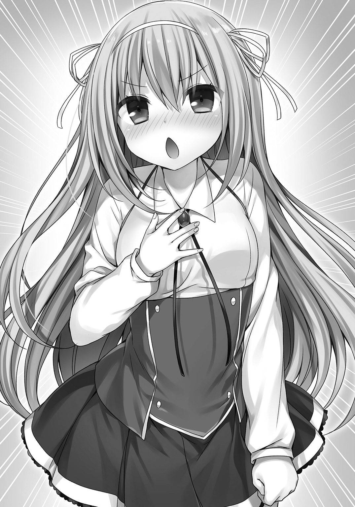
クリスの問題発言に耐えきれず、教卓に突っ伏したエミリアが感情魔法にかかってもいないのに「あばばばばば」と錯乱した。
プリシラが恥ずかしそうに顔を両手で覆う。
「やだもー！ クリスってば、そんな大胆なところもあるんだ!? キャー！」
フランベルはうらやましそうにクリスを見つめた。
「いいなぁ......ぼくも早くしてほしいなぁ」
いい加減にしろ！ 誤解を膨らますな！
「おいクリス。言い方がおかしなことになってるぞ」
「え？ けど、もっと特訓を......プリシラやフランベルには、個性に合わせた個別のトレーニングをしてくれているのに、私にしてくれないのは不公平って思って......」
どうやらクリスは、自身の発言が曲解されてしまいかねないことに、気付いていないようだった。
「わかった。じゃあこのあと、さっそく個人特訓をしよう。プリシラとフランベルはそれぞれ自主練だ。エミリア先生！ しっかりしてくれ」
俺は〝しっかりしてくれ〟という言葉に、沈静の感情魔法を織り込んだ。
「は、はい！ ええと、なにがどうしてどうなったんでしょう？」
「このあとクリスが個人練習を希望したので、俺が担当するから、エミリア先生はプリシラとフランベルの自主練習をみてやってくれないか？ 闘技場は狭い第七闘技場なら、使用予定が入ってなかったと思うんで、そこを利用してほしい」
エミリアは頷いたが、プリシラとフランベルが席から立ち上がった。
「クリっちだけ個人レッスンなんてずるいし！」
そもそも個人練習の発端はお前だろうにプリシラ。
「交流戦明けに、またお前の個人練習にも付き合ってやるから」
「うー！ 人質っていうか、イベント質とるなんてひどくない？」
「ひどくない！」
断言する俺に、プリシラはほっぺたを膨らませた。
フランベルがもじもじと言いにくそうな口振りでうつむく。
「ぼ、ぼくはその......あの約束さえ守ってもらえれば、レオ師匠が何人とお付き合いしてもかまわないよ！」
「誤解を招くというか、誤解しかない事を言うなフランベル！」
もはや教室内のしらけた空気は、混沌としたものへと変貌していた。
「それじゃあクリスはホームルームが終わったら、一人で管理人室まで来るように」
「え、ええ......けど......自分から言い出しておいて言うのは変だと思うけど、本当にいいの？ 二人は反対しているし......」
プリシラが膨らませていたほっぺたから空気を抜いた。
「いいよ！ レオっちのコーチを受けて、もっと強くなって帰ってきてね」
フランベルも笑顔でプリシラに告げる。
「ぼくらのことは気にしないで、存分に楽しんできてよ！」
二人が後押ししたことで、クリスは「わ、わかったわ！」と、力強く頷いた。
クラスの生徒たちの俺を見る視線は、いわずもがな。ひどいものだ。
だが、そんなことはもはや些細な事だった。
クリスの望みを叶えてやろう。
俺にできうる限りを尽くして。
管理人室に行く前に、俺は一度、武器用具室を訪ねた。
「............」
相変わらず用具室の主は口数も少ない。
いや、少ないというよりも皆無って方が正しいな。
「よお。出物はあるか？」
「......ない」
喋った!? 結構渋い声だ。
「そ、そうか。まいったな」
「......なぜ武器が必要なのだ？」
しかも、主の方から話しかけてくるなんて。
驚きで一瞬、返答が遅れた。
「ん、あ、ああ！ 生徒に相談されててな。俺自身は魔法武器を扱えないけど、良い武器かどうか見る目はあると自負してるから。はっはっはっは！」
俺の乾いた笑いを意にも介さず、主は続けた。
「......刀、どうした？」
「刀っていうと......あっ。悪いな。この前は勝手に交換して」
「......わざわざ返却する必要はない」
用具室の主は、机の下からフランベルが使っていたロングソードを取り出すと、俺に投げて寄こした。
キャッチして鞘から抜いてみる。
「手入れしてくれたのか？」
「............」
用具室の主は無言で頷いた。
魔法武器への愛がある男だ。ロングソードは綺麗に刀身が磨き上げられていた。グリップ部分も貼り替えられて、新品同様だ。
クリスとの特訓に向けて、得物を借りようと思っていたので渡りに船だった。
このロングソードなら申し分ない。
ちょっと言いにくいんだが〝あの事〟も報告しておこう。
「あの......悪い報告があるんだ。この前、ロングソードと交換で持っていった刀なんだが、練習試合で折られちまってさ。ごめんな」
主はじっと俺を見つめると、軽く首を左右に振った。
「......かまわない。作った人間には、練習試合で破損したと伝えておく」
「そうか。ありがとうな。作り手にも悪かったと伝えてくれ。それじゃあ......」
ロングソードを持って出ようとしたところで、用具室の主に呼び止められた。
「......時に、お前は魔法武器を作製できるのか？」
「な、なんだよ急に」
振り向くと主は真剣な眼差しで、俺を射貫くように見つめてきた。
男に熱心に見つめられても嬉しくないぞ。
主が低い声で訊いてくる。
「......どうなんだ？」
「平民がそんなこと、できるわけないだろ？」
「............」
ジトッとした眼差しになると、用具室の主は頷いた。
「悪いが急いでるんだ！ じゃあな！」
俺から視線を外すと、主はまた彫像のように固まってしまった。
フランベルと魔高炉で作業をしていたのを、知っているんだろうか。
うーむ、俺はまた、放浪していた頃と同じ事を繰り返そうとしているのかもしれない。
が、構わない。
全部、俺が好きでしていることだ。
学園の管理人の暮らしに未練がないといえば噓になるが、今はクリスたちを勝たせたい。
正体バレのリスクなんて、勝利の前には些細な問題だ。
得物を手に入れた俺は、続けて魔法薬学科の研究棟に向かった。
マーガレットに頼んで魔法薬を分けてもらう。
クリスのため......ではなく、俺用の調合だ。
薬効が強すぎるため、クリスが飲んだら気絶しかねない。
そんな劇薬を何に使うのか、マーガレットは俺に訊かなかった。
薬学科の研究棟を出て管理人室前に戻ると、クリスがドアの前で俺の帰りを待っていた。
「どこに行っていたのレオ？」
「ちょっと準備をしてきたんだ。もしかして、廊下でずっと待ってたのか？」
「ううん。待ったといっても数分のことだから」
教室でのことがなかったように、クリスは普通に俺に接してくる。
「プリシラたちは来てないよな？」
「ええ。レオが指示した通り、二人はエミリア先生と一緒に、第七闘技場で訓練中よ」
プリシラとフランベルは仕上げの段階だ。
今日はずっと、二人で組み手をして互いの弱点を攻め合うよう指示しておいた。
エミリアもしっかりサポートしてくれるだろう。
「俺たちもがんばらないとな」
「ええ。二人においてけぼりにされたくないわ」
真剣な顔つきでクリスは首を縦に振った。
プリシラもフランベルも強くなったが、今でもクリスの方が総合力は上だ。
成長する二人を間近で見続けて、クリスは自信を失ってしまったんだろうか。
クリスが急にそわそわし始めた。
「それで、これから私たちはどこへ？」
「ああ、それなんだけど......」
説明しようとしたところで、俺たちの背後から聞き覚えのある、あまり耳にしたくない声が呼びかけてきた。
「これはこれは平民。お互いに指導する生徒を連れているとは奇遇ですね？」
無視すれば余計にからんできそうな白蛇顔男――ギリアムが愉快そうに笑う。
しぶしぶ振り返ると、ギリアムの隣には眼帯をしたままのシアン・アプサラスの姿があった。
廊下で偶然ばったり......というわけじゃないだろう。
ギリアムがシアンを連れて、わざわざ俺たちの元にやってきた理由はなんだ？
「何か用事かギリアム？」
「いえいえ、用事というほどのことはありません。むしろ用があるなら貴方の方を呼び出します。私たちは、たまたま通りかかっただけですよ」
噓をつけ！
軽く睨む俺に、ギリアムは薄ら笑いを浮かべた。
「貴方も悪あがきに忙しいのでしょう。邪魔はしませんから、好きなだけコーチでもなんでもすればいい。まあ、すべて無駄になるのですがね」
言ってくれるぜ。
「無駄かどうかは、戦ってみればわかることだ」
ギリアムの視線が俺の腰の辺りに落ちる。
ベルトにロングソードをぶら下げているのが気に入らないらしい。
「平民風情が魔法武器を手にして、何をしようというんです？ 魔法も使えない平民では、クリス君の相手になるわけがない。ああ、本当に哀れだ」
にんまり口元を緩ませるギリアムに、俺は吐息混じりで返す。
「用事がないなら、行かせてもらうぞ」
「いえねぇ。用事はないのですが、そうそう！ こんな僻地に来た理由を思い出しました。じつは教えておいてあげようと思いましてね。まあ、一勝はそちらにプレゼントしてあげようという、私の温情です」
「お前、何を言ってるんだ？」
「怒ると損をしますよ？ 私はオーダーを伝えに来たのです。三戦の大将にシアン君を立てようと思います。そちらは捨て駒をぶつけてくださって結構ですよ。ちなみに、残り二人は我がギリアムクラスのお荷物である、ミゲル君とアイリス君にお願いしました。我がクラスの底辺二人ですが、本当の底辺の〝寄せ集め〟相手には十分でしょう」
「ならこっちも大将はクリスだな。先鋒はプリシラ。中堅にフランベル。これで三勝させてもらう」
クリスは小さく頷くと「オーダーを変えて逃げるような真似だけはしないでちょうだいね」と、シアンを睨み返した。
「私が逃げる？ 笑えない冗談だ」
シアンは涼しい顔でクリスに返す。
二人の視線が見えない火花を散らしているようだった。
ギリアムが呆れ気味に笑う。
「なんと、平民はそこまで愚かでしたか？ クリス君なら我がクラスの劣等生二名など、赤子の手をひねるようなものでしょうに。ギリアムクラスから〝寄せ集め〟が一勝を無償でもぎ取れるんですよ？」
「こちらの心配より、負けた時の言い訳を今から考えておいた方がいいんじゃないか？」
俺の忠告にギリアムは「そうですか。では、せいぜいがんばってくださいね。ふふふ......はははは」と、乾いた笑みを浮かべて、管理人室の前から立ち去った。
連れのシアンは一度立ち止まると、首だけ振り返り「敗北から学ぶことも多い」と、言い残し、ギリアムの後を追う。
黒髪の少女の背中が廊下の向こうに消えた。
「な、なによ！ 敗北から学べだなんて......私が１００％勝てないとでもいうつもり？」
普通の生徒が言うなら増長だが、クリスには入試主席という実績がある。
たぶんシアンが言いたいことは、こうだろう。
「発動までタイムラグの発生しがちな理論魔法使いに対して、戦闘実技の方が有利だっていう自信があるんだろうな」
クリスは眉尻を上げた。
「もちろん、そんなことは最初から解っていたことだし......レオはちゃんと対策を練ってくれているんでしょ？」
「まあな。それにしても、これからいざ行こうって時に出てきやがって。ギリアムって本当に空気読めないよな」
クリスがうんうんと力強く頷いた。
「宝物庫の時もそうだったけど、いったいなんなのッ!? って、感じがするわね」
俺は周囲を見渡した。
他に生徒の姿も教員の姿もない。
「じゃあ、そろそろ行くか」
クリスの手をそっと握る。
途端に彼女の顔が耳の先まで真っ赤になった。
「ちょ、ちょっと待ってレオ！ いきなりそんな......心の準備が......せめて、学園の外に出てからにしましょう！ 手を繫いで歩くのは......その、う、嬉しいけど、人に見られるのはとっても恥ずかしいわ！」
「いやいや、一緒に外に出るためには、手を繫がなきゃならないんだ」
「え？ ど、どういうことなの？」
俺は管理人室のドアを開けると、クリスの手をぐいっと引く。
「ちょ、ちょっと待って！ ストップ！ まだ校内にはたくさん人がいるし、その......こ、困るわよ！」
「困らないって。というかだな......廊下に魔法式の痕跡を残すわけにもいかないだろ。その点、管理人室は俺の城だ。滅多に客人も来ないからな」
「人が来ないからって、まだ日も高いのよ！ こ、こんな時間から、あの......その......シャワーも浴びてないのに」
「シャワーなら管理人室にあるけど、使いたいのか？」
「え、ええと......」
クリスは黙り込んでしまった。口をもごもごさせて、顔も赤いままだ。
「ともかく、やることはやっておこうぜ」
「う、うう......レオの......ばか。勇者様だからって、強引すぎるわ。私の気持ちはどうなるのよ？」
「気持ちって、特訓がしたいんだろ!?」
「え、ええと......その、特訓にそういうことが......だ、男女の営みが必要というなら......し、仕方ないと思うわ！ だけど......こ、心の準備が......」
変な風に察しすぎだぞクリス！ そうじゃないから！
ようやく俺はクリスの言わんとしていることを理解した。
「落ち着け。ともかくまずは、部屋に入ってくれ。手も離すから」
俺が離そうとすると、クリスは自分からぎゅっと握り返してきた。
「い、いいわよこのままで！ か、覚悟は決めたから」
まあ、特訓への覚悟を決めてくれるのは構わないんだが......。
絶対違う覚悟だよな！ それ!!
ええい、説明するより実行した方が早いか。
俺は手を引いてクリスを管理人室の中に通す。
ドアを閉め、密室に二人きりになった。
「じゃあ、始めるか。ただ、あんまり見られたくないんで......」
俺は一度手を離すと、服のポケットから細長い布を取りだした。透視無効の魔法を込めて作製した目隠しだ。
これをクリスにつける。彼女は無抵抗だった。
「レオってこんな趣味があったのね。すごく......緊張してきたわ」
「お前は目が良すぎるから、うかつに魔法式を見せられないんでな」
「えっ!? そ、そういうことに理論魔法を使うの？」
「ええとだな......」
説明するほど混線しそうだ。
もう一度、俺はクリスの手を握り直す。
彼女の手は汗で湿っていた。
「あ、あの......レオ？ 私はどうしたらいいの？」
「全部俺に任せてくれ。それじゃあ始めるぞ」
俺は理論魔法式を展開した。
この魔法を使うのは本当に久しぶりだ。
ランクＡを越えた、勇者オリジナルの理論魔法シリーズの一つに数えられる。
式が完成すると、一瞬「ふわっ」とした感覚が全身をかけぬけて、俺とクリスの肉体は管理人室から、フッと消失した。
長距離瞬間移動魔法。行き先は――着いてのお楽しみってやつだ。
ひやりとした風を頰に受けて、俺は意識が覚醒していくのを感じた。
隣でクリスが全身をわななかせる。
「あ、悪い。寒いか？」
「そ、そそそ、そうじゃないわよ！」
火口付近から噴煙が上がっている。
一見、盆地に見えるが、俺たちがいるのは間違いなく世界最高峰だ。
王国から遠く離れて２０００㎞。
七大秘境の一つに挙げられる、大霊峰。
その山頂にたどり着き、無事に戻ってきた人間は、未だにいないとされていた。
まあ、本当にいないわけじゃないんだけどな。
少なくとも俺が踏破したわけだし。
「ちょっと待っててくれ」
俺は大地と火の精霊魔法で、地熱効果をクリスに纏わせた。
それでもクリスはブルブル震えっぱなしだ。
「あれ？ おかしいな？ ちゃんと温かくなったはずなんだが」
クリスは火口を指さすと声を上げる。
「あれ!! レオ！ あれはいったいなんなの!?」
火口の中から全長20メートルほどの竜が姿を現した。
スタンダードなタイプの火竜である。
大きさや感じられる魔法力からして、ランクってところか。
アダマンタイトと同程度の硬度の鱗に身を包み、岩をも溶かす炎熱のブレスを吐き散らす。
しかも空を自在に飛び回るのだ。
こいつに襲われた場合、まとまった数の魔法騎士がいない小国の城なら一晩で陥落するだろう。
完全にビビッてしまっているクリスに、俺は解説した。
「火口の熱を目当てに、ああやって卵を温めに来るんだ」
クリスはゼーハーと荒く深呼吸した。
「そ、そそそそうなのね。レオの落ち着き振りから察するに、ああ見えても安全な生き物なのかしら？」
「いや。大切な卵を守るために気が立ってるんで、視界に入った生き物は皆殺しにするって習性があるんだ。たとえ旦那の火竜だろうと、襲いかかるからな」
ドラゴンが俺たちに向かって咆吼した。
火口からあがる噴煙からして、俺たちは風上に出てしまったようだ。
どうやら臭いで発見されたらしい。
「見つかったじゃないレオ！」
「そうみたいだな。じゃあ、お手本として俺が戦うから、じっくり観察するように。まあ、隙を見てクリスも理論魔法で参戦してくれてもかまわないぜ」
俺はロングソードを抜き払う。
「ちょっと待ってレオ！ いくらレオでも、その剣であの化け物と戦うなんて無謀すぎるわよ！」
学園の武器用具室にある魔法武器は、刃付けもされずリミッターが内蔵されていた。
「まあ、ちょうどいいハンデだろ」
俺はロングソードに魔法力を込めた。
手入れはされていたが、前の使い手のクセまでは抜けていなかったな。
すぐにクセを魔法式で書き直して、俺用にカスタマイズする。
元から威力は期待していないが、折れても困るので魔法力による強化は、ロングソード自体の強度を上げる方向に設定した。
その間にドラゴンが俺たちめがけて翼を羽ばたかせる。
「飛ばれると厄介だ。お前、飛ぶの禁止な」
ロングソードで空を斬ると、ドラゴンの翼の翼膜がちぎれた。
バランスを崩して落下したドラゴンめがけて駆ける。
疾駆する。
久しぶりに、誰の目も気にせず運動が出来そうだ。
「ついてこいクリス！」
「わ、私がついていっても、こんなの相手に何もできないわよ」
「できなくてもいい。お前は見てるだけでも強くなれるんだから」
地上に降りたドラゴンの身体を、八艘飛びで次々と駆け上る。
足場がなければ理論魔法で構築した。
ドラゴンは前脚で俺をなぎ払おうとする。
それをかいくぐってドラゴンの肩口に着地すると同時に、俺の身体は八方向に分身した。
ドラゴンは前脚を無茶苦茶に振るい、尻尾を鞭のようにしならせてなぎ払い、口から炎の渦をまき散らして、俺のダミーを次々破壊する。
八体すべてを倒したところで、ドラゴンは異変に気付いた。
俺の姿がないのだ。
理論魔法に精霊魔法を組み合わせて、俺は光学迷彩と気配遮断を行ったまま、ドラゴンの額の上に立っていた。
迷彩を解いて眼下のクリスに手を振る。
クリスはじっと俺を見つめて、戦いの観察に集中しているようだった。
俺はドラゴンの額にロングソードを突き立てる。
本来なら、このレベルの魔法武器では鱗を貫くことはできない。
が、俺の魔法で一時的に強度を上げた状態なら、鱗の隙間から滑り込ませて表皮を破ることも可能だった。
額を針で刺されたような刺激に、ドラゴンは首を振るって大暴れする。
俺は浮遊することで振り落とされるのを防いだ。しがみつくまでもない。
ドラゴンの動きが一瞬止まる。
暴れて呼吸の荒くなったドラゴンの額めがけて、俺は突き刺したロングソードを媒体に消滅魔法を送り込んだ。
巨大な頭部の内側に、数十センチの〝空間〟が生まれる。
そこにあるべきはずの脳の一部が欠損すれば、いかに屈強なドラゴンといえど死に至る。
魔法生物や魔導機械兵器や、魔族や不死者なんかに比べれば、まだ生物的な弱点を突けるドラゴンは、やりやすい相手と言えた。
ドラゴンの身体が切り倒される大木のように傾いた。
完全に倒れる前に、俺はロングソードをその額から抜いて飛び降りる。
着地の瞬間、重力制御魔法で落下のエネルギーを相殺した。
ちょうど、俺の戦いを見ていたクリスの目の前に着地できたのは、偶然だ。
「どうだクリス！ 今みたいな戦い方、できそうか？」
「で、できるわけないでしょ！ たしかにいくつかの魔法式は記憶したけど......見たことがないものばかりで、困惑しっぱなしよ！」
言っていることとは裏腹に、クリスの口調は興奮気味だ。
「じゃあ、あとでレポートをまとめるように」
クリスの瞳にじわっと涙が浮かぶ。
「とても勉強になったけど......いきなり無茶しないでちょうだい。驚いて心臓が止まるかと思ったわ」
俺はぽんっとクリスの頭に手をのせて撫でる。
「悪い悪い。じゃあ、これつけて」
俺は撫でながら、彼女の後ろに回り込むと目隠しをさせた。
「え？ ちょっと？」
「勉強になったとか言うなよ。まだ始まったばかりだろ？ あと六つは回るんだから」
「え、えええええええ!?」
クリスの悲鳴を残して、俺と彼女の姿は大霊峰の山頂付近......火口の近くから「フッ」と音もなく消えた。
――残りの七大秘境。
監獄島。紅の渓谷。鏡面の塩湖。昇竜の瀑布。蒼き氷海。肉食の原生林。
それから追加で、海底庭園と刃の洞窟群に、化石の森も加えて、合計十カ所ほど回り、そこに棲むモンスターを討伐した。
勇者だった頃、修行して回った土地土地だ。
少し懐かしい気持ちになった。
しかし、現役時代ほど強力な魔物には遭遇しなかったな。
戦ったのはせいぜいランクＢ止まりで、純粋な強さでいえば最初のドラゴンがピークだった。
とはいえ、できるだけ多様なタイプの魔物と戦い、それに合わせた理論魔法の選択と使用をクリスに実演するのが目的だ。
ガス欠にならないよう魔法薬で回復しながら転戦を繰り返す。
クリスも途中から景色を見るくらいの余裕が生まれてきた。
最後に、俺は古の巨塔の頂上へと瞬間移動の座標を固定する。
かつてこの世界に栄えた魔導文明の遺跡だ。
塔の高さはおよそ６００メートル。
その頂点が最終目的地だった。
自然界にはこれよりも大きな神樹なんかもあるのだが、塔は人造物としては類を見ない高さを誇っている。
「フッ」という感触が終わると、俺とクリスは硬い石造りの床の上に着地した。
頂上部分は直径１００メートルほどで、拓けて平らな、まるで闘技場のようである。
風の音もなく、塔の縁からのぞくことができる眼下には、滅んだ魔導文明の廃墟群が広がっていた。
王都からの距離はおよそ８０００㎞。
人はもちろん、魔族さえもいない辺鄙な場所だ。
瞬間移動が終わると同時に、クリスが身構えた。
「つ、次はどんな化け物なの!?」
まあ、一番の化け物かもしれないな。
塔の上には俺たちしかいない。すぐにクリスは目をこらすようにして、感知魔法の範囲を半径20メートルほどで展開させた。
感知魔法も広げすぎれば精度が落ちるのだが、今のクリスの限界範囲はこれくらいか。
「クリス。ここには俺たちしかいないから安心してくれ」
「そ、そうなの......良かった。ずっとレオが戦うのを見てばかりだったけど、正直なところ、もう魔物はこりごりだわ」
「そういうと思って、この場所を選んだんだ」
クリスは吐息混じりに、塔の上から殺風景な灰色の廃墟群を見下ろした。
「休憩場所にしては、ずいぶんと寂しいところね」
「ここなら誰の邪魔も入らないからな」
廃墟群から俺の方に視線を戻すと、クリスは首を傾げた。
「邪魔......って？ どういう意味かしら」
「準備運動も終わったところで、そろそろ本番だ」
「本番？」
「俺とやるんだよ」
「初めてがこんな場所なんて嫌よ！」
言った瞬間、クリスが耳の先まで赤くなった。
いやいや、悪かった今のは俺の言い方がよくなかったな。
「落ち着けクリス。いきなり無言で消滅魔法の式を構築して、俺をターゲッティングするんじゃない。やるのは俺との試合だ」
瞬間、彼女は構築した魔法式を分解した。
「お、驚かせないで！ 本当にレオは人騒がせなんだから」
お前もちょっと、おかしいぞ。
なんというか、エロ方面に妄想しすぎというか......。
「人騒がせ程度で消滅魔法を対人でぶっぱなすなよ」
「レオは格上だから効かないでしょ？」
魔法が通りにくいというのは、通ることもあるって意味だからな。
いくら何でも普通に死ぬから。
「いいから始めるぞクリス」
俺はロングソードを抜いた。
クリスもショートソードを抜く。
「これって......もしかして卒業試験......なの？」
「バカを言うな。まだ教えてないことは山ほどある。せいぜい中間試験か、交流戦という本番を前にした模試程度だ」
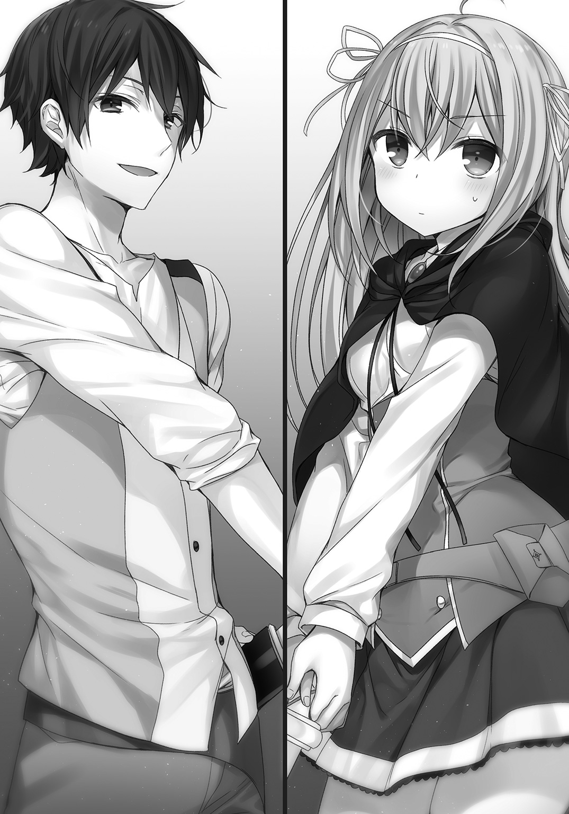
俺とクリスは塔の闘技場の中心で相対すると、互いの剣の切っ先を軽く触れさせた。
キイイイイイイイイイイイイイン！ と、澄んだ音が響き渡る。
それが試合開始の合図となった。
これまで見せたのはあくまでモンスターの倒し方......というか、倒すにあたり使う魔法を見せることだった。
俺が構築した魔法式のいくつかを、クリスは継承してくれたと思う。
仕上げはこの試合だ。
戦いは静かな幕開けから始まる。
互いに距離を詰めず、離れることなくにらみ合いながら、ゆっくり円を描くように足を運ぶ。
慎重なクリスらしい、相手の出方を見る立ち回りだ。
「来ないなら先手を打たせてもらうぜ」
俺は斬りかかりながら、クリスの足下に重力系の理論魔法を展開した。
発動までのタイムラグは０．８秒に設定してある。
さらに魔法式そのものに、わざと綻びを作っておいた。
クリスの肉体は俺の剣戟に反応し、頭脳は式の綻びを突くようにして、理論魔法の打ち消しに使われた。
発動前に俺の構築した魔法式は無効化される。
続いて、設定を０．６秒にして、斥力場をクリスに押しつける魔法式を展開した。
もちろん、剣による攻撃は続行している。
ロングソードのリーチの分だけ、懐にさえ入られなければこちらが有利だ。
クリスの防御の意識が甘いところを攻め立てる。
ショートソードで弾きつつ、クリスも斥力場を生み出した。
式の構築から発動まで０．４秒か。
斥力場はシンプルな式ということもあって、さすがに早いな。
普段から使用しているためか、クリスの式は美しく淀みがない。
斥力場同士がぶつかり合い、その力を相殺する。
一瞬の攻防のあと、クリスは後ろに跳んで距離を測った。
「今度はこちらからいくわ！」
「おう。かかってこい」
互いに魔法式が見えているオープンな状態だ。
さすがにクリスの訓練に、魔法式の隠蔽を使うほど俺もやぼじゃない。
クリスは俺の背後に斥力場で壁を作ろうとしていた。
さらに真空系の魔法式を俺の目の前に構築している。
風の精霊魔法じゃなく、真空？
先ほど、世界ツアーの途中で魔物の一体を窒息させるのに俺が使った式を、さっそく使ってきたか。
しかも、アレンジがしてあった。俺のそれは真空状態を維持するものだが、クリスの式にはそれがない。
おもしろそうだな。
式に干渉すれば簡単に崩せるが、何か試そうとしているのは明白だ。
やらせてみよう。
クリスは自分から距離を詰めると、ショートソードで突きを放つ。
同時に俺の背後に斥力場の壁が発生した。
下がって避けられないようにするためか。
回避するなら左右の二択。こちらの選択肢を一つ潰したな。
少々頭でっかちなところはあるが、クリスなりに理論魔法を戦術に組み込もうとしていた。
ここは避けずに、あえて受けよう。
ロングソードでクリスの攻撃を弾こうとした瞬間、俺の目の前に真空が生まれた。
ぐいっとクリスの側に俺の身体が引き寄せられ、クリスもまた真空に引き寄せられることで加速した。
まるで磁石の相反する極同士が引き寄せられるように、互いの間合いが交錯する。
間合いの〝中〟に入られた。
ロングソードよりも、この場合、取り回しに優れたショートソードの方が有利だ。
「ハアアアアアアアアアアア！」
クリスの突きが俺の頰をかすめた。軽く首をそらして避けると、前蹴りで彼女の身体を自分の間合いから引きはがす。
「クッ......だめか」
素直に悔しそうな顔をするクリスに、俺は剣を構えたまま確認する。
「なんで風の精霊魔法じゃなく、理論魔法で真空を作ったんだ？」
「そうすることで、貴方は引き寄せられ、私は加速するから。一方向から吹かせる風の精霊魔法では、私に追い風でも貴方には向かい風でしょう？」
「考えついても実行するか普通？」
「私のコーチは普通じゃないもの。それに、なんでも受け止めてくれる......でしょ？」
「ああ。その通りだ」
クリスは俺をコーチとして信頼してくれていた。
その信頼に応えたい。
「いくわよレオ！」
クリスは次々と、理論魔法と剣術の組み合わせを俺にぶつけてきた。
さっきまでの秘境巡りで俺が使った戦術を、アレンジしたものまであった。
それにとどまらず、俺に攻撃を仕掛けながら、クリスは次々と技と魔法の組み合わせを思いついているようだ。
「やっぱり一本も取れないわね。悔しいわ」
「手加減なんてされたくないだろ？」
「当然よ！ さあ、次よ次！ 新しいアイディアを思いついたわ！」
クリスの攻撃の手は緩まない。
俺が思いつかない攻め手もあれば、よく使う騙しのテクニックや、まったく使い物にならない奇策もあった。
そのどれも、クリスは今、俺と対峙しながら生み出し続けている。
高位魔族と命のやりとりをして俺は強くなったけど、こういうのも悪くないな。
五十回目の戦術を試し終えたところで、俺は彼女に訊いた。
「疲れないのか？」
「夢中になると、疲れなんて感じてる暇はなくなるのよ！」
「さすがにもうアイディアは出尽くしたろ？」
「ま、まだまだいけるわ！」
口ではそういいつつも、ついにクリスの戦術も品切れが近いらしい。
今の彼女は、水分を絞りきってカラカラに乾いた海綿だ。
そろそろ頃合いか。
クリスにコーチを始めた当初から、気付いてほしかった事がある。
俺は剣を構え直した。
瞬間――クリスが飛び込んでくる。
魔法式の構築はなし。
考えるより先に身体が動いたような反応だった。
それでいい。それが剣士だ。
俺は彼女の一撃を弾くと、その剣を巻き上げるようにして打ち上げた。
「――ッ!?」
クリスの手からショートソードがはね飛ばされる。
「え？ あれ......今の......どうして私は......」
自分でも、なぜ攻撃したのかクリス自身、理解できていないようだった。
「よくやったぞクリス」
クリスはムッとした顔になる。
「武器を弾かれて、いい事なんてないとおもうんだけど？」
「クリスは今、本能で動いたんだ。実に剣士らしかった」
怒っていたかと思えば、今度はキョトンとした顔でクリスは首を傾げた。
「そういえば、魔法式の構築もせずに攻撃を仕掛けてしまったわ」
「普通の人間はクリスほど、剣も魔法も併用できないんだ。どちらかを使う時はどちらかが止まる。魔法武器しか使えない奴なら、迷いもない。その強さはクリスも知ってるだろ」
うんと頷くと、クリスは息を吐く。
「フランベルのことね。彼女の剣が速いのは、思考を挟まないから......と、いうことかしら」
「ああ。その剣士にクリスは一瞬だけど、なることができたんだ」
クリスは首を左右に振った。
「とてもじゃないけど、フランベルに剣で勝てるとは思えないわ」
「もちろん、クリスは理論魔法使いだからな。剣で勝つ必要はない」
困ったように少女は眉尻を下げる。
「じゃあ、今の動きのどこが良かったというの？」
俺は笑った。
「どうして今の攻撃を仕掛けたか、少し考えてみてくれ」
頷くとクリスは間を置いて「攻めやすそうに見えたから......」と呟いた。
「そういうことだ。実は、わざと隙を作ったんだ。剣士なら攻めたくなるような、相手に〝誘っている〟と悟られない程度の小さな隙をな」
クリスは目を見開いた。その瞳が輝く。
「そう......だったのね。わかったわ！ レオが私に剣を持たせた理由が!! 目の前が拓けた感じがする......これがこの問題の解なのよ」
納得したように、クリスはうんうんと頷いた。
「どういう解か聞かせてくれないか？」
「剣士の本能的な動きは、レオが言葉で私に説明しても、私は知識として蓄えてしまう。だから剣を使わせた。机上の外に私を連れ出すために！」
クリスは解放されたように、天高く声を上げる。
「良い解が出たな」
「今までのどんな魔法式が解読できた時よりも嬉しいわ！」
「それで、この解をどう応用する？」
「レオがやったとおりにするわ。できるかどうかはわからないけど......やってみせる！ 剣士が本能的に攻めたくなる隙を作って誘い、そこを......叩く！」
ぐっと拳を握るクリスに俺は頷いた。
「満点の解答だ。けど、その解答はまだ机上にあるだけだからな。今日は残り時間いっぱいまで、俺が剣士の打ち込みたくなる隙の作り方を伝授する」
「よ、よろしくお願いします!! 勇者様！」
「その呼び方はやめてくれ！」
「ご、ごめんなさい。つい、感動してしまって」
変な所で感動してくれるなよ。
ともあれ、クリスの気力と体力が続く限り、俺は自分の技術を教え続けた。
クリスは乾いた砂が水を吸い込むように、俺の指導を吸収していく。
机上の理論魔法使いは、俺の手で剣士殺しの実戦型理論魔法使いへと変貌しつつあった。
11．交流戦編
――残り二日。
俺はエミリアと協力して、三人の最終仕上げを行った。
といっても、別段変わったことはしていない。
朝の持久走が50㎞になったくらいだ。
午後からは闘技場を借りて、それぞれの成果を確認する。
闘技場のステージの上で三人が相まみえた。
プリシラはクロちゃんとの連携も息がぴったりだ。
フランベルも蒼月を振るう度に、その力を増している。
そしてクリスはといえば......。
プリシラとクロちゃんのコンビと、フランベルという二人＋一匹を相手に、互角以上に立ち回った。
訓練はクリスVSプリシラ＆フランベルコンビという組み合わせだ。
そうでもしないと、クリスが圧倒してしまうからだった。
「クリっち強すぎだし！」
クリスは飛びかかるクロちゃんを斥力場で吹き飛ばし、プリシラの背後からの攻撃をかわすと、身体強化と重力制御の合わせ技である、高速バックステップで距離をとる。
その着地の隙をすかさずフランベルが狙う......が、それさえクリスの計算の内だった。
わざと隙をさらしてフランベルに攻めさせて、近接した間合いでショートソードによるカウンターの一撃を喰らわせる。
クリスの思わぬ反撃に、フランベルが姿勢を崩して、ぺたんと尻餅をついた。
「うわっと！ その体勢からカウンター狙ってたのクリス!?」
「ええ。今のは自分でも思っていた以上にうまくできてしまったかも」
フランベルに手を差し伸べて立たせると、クリスは笑顔で告げた。
「もう一本、お願いするわ！」
立ち上がってフランベルが頷いた。
「もちろん。次は負けないよ！」
プリシラが場外から戻ってきたクロちゃんの、喉のあたりを優しくさする。
「クロちゃんも遠慮しなくていいってさ。あたしはもうちょっとクリっちには手を抜いてほしいんだけどなぁ」
「それじゃあ訓練にならないでしょ！」
「ま、そだよねー。いくよクロちゃん！」
「ガオオオオオオオオオオオオオオオオオオン!!」
再びクロちゃんをけしかけるプリシラ。
それを防ぎつつ、フランベルの動きにも注意を払うクリス。
クリスの隙を窺いながら、攻めるタイミングを計るフランベル。
――三人の組み手は休みなく続いた。誰一人、集中力を途切れさせない。
闘技場のステージの下から、エミリアが三人の姿をまぶしそうに見上げていた。
隣に立つ俺に、クラス担任は言う。
「レオさんって、教員に向いているんじゃないですか？ わたしなんかより、先生と呼ばれるのに相応しいです」
三人が生き生きしてみえるのも、それぞれががんばったからだ。
俺は自分にできることをしただけで、やる気をもってくれなかったら、何もしてやれなかった。
それに、俺がコーチをできるのも、エミリアが依頼をしてくれたからだ。
「俺が自由に教えられるのは、ぜんぶエミリア先生が、なにかにつけてフォローしてくれるからだよ」
エミリアは小さく首を左右に振る。
「そんなことありません。まだまだ足りないものばかりです。けど......」
「けど？」
訊き返す俺に、エミリアは決意の表情で頷いた。
「あの......わたしもがんばりますね。先生って胸を張って言えるように」
たぷんと水蜜桃......というか小玉スイカサイズなそれを揺らしながら、エミリアは胸を張る。
もともと気弱に見えても、エミリアの心の強さはギリアムに立ち向かった時から変わらない。
エミリアならその強さを貫き通せるはずだ。
俺は笑顔で告げる。
「祝勝会は王都にある、プリシラがお気に入りのピザの店にみんなでいこうぜ！」
エミリアの顔が赤くなった。
「そ、そそそ、それって......で、デートのお誘いですか!? わ、わたし、男の人に食事に誘われたことがなくて......あ、あわわわ」
「飯くらい、そんなに焦るようなことじゃないだろ？ 週末にみんなでデートだ。もちろん、さそった俺のおごりだぜ」
デートに関してはプリシラとの約束もあるが、そちらはまた別に機会を設けることにしよう。
「勝ちましょうレオさん！」
「おう！ 俺たちも応援がんばろうな！」
俺とエミリアは互いに頷き合った。
大会前日は、あえて訓練を行わず休息にあてた。
十分に静養をとらせるのはもちろんだが、俺の都合もからんでいた。
交流戦の運営委員によって、会場の設営や諸々の準備が急ピッチで進められる。
俺も運営委員の手伝いや、実況席や来賓席の設営などで大忙しだ。
例年、交流戦には学園長が姿を見せるのだが、今回は所用で出られないらしい。
学園長――リングウッド・アッシャーは、長い白髭をたくわえた老人だ。
常にプルプルと痙攣していて、最近では物忘れも激しいらしく、学園で姿を見ることは滅多にない。
まあ、俺がみる限り、本当にボケ始めているようだった。
それでも理論魔法の権威であり、精霊魔法や召喚魔法言語にも造詣が深い、当代きっての大魔法使いだ。
そんな学園長の不在を埋めるため、今大会のオブザーバーとして、四賢人の一人――ガンダルヴァ・アプサラスが迎えられるんだとか。
白蛇クソ野郎ことギリアムのしたり顔が思い浮かんだ。
先日のガンダルヴァの来訪は、このセッティングだったのか。
どことなく政治臭がする。
シアンのお披露目のお膳立てだ。
試合の様子は王都にも魔法通信で放映される予定だった。
王都の広場などに設置された投影機で、大々的に試合が中継される。
ギリアムにとっては、またとない売名の好機だろう。
まあ、そんなことは俺にもクリスたちにも関係ない。
戦って勝つ。それだけだ。
エミリアクラスの出番は初日の第一試合。
交流戦の開幕を華々しく飾ることとなった。
といっても、主役はあくまでギリアムクラスの選手たちだ。
学園内での俺たちの特訓も、ほとんどの生徒が悪あがきだと思っているらしい。
この試合はギリアムクラスのお披露目で、エミリアクラスの代表はその引き立て役......にさえならないというのが、大方の前評判だった。
が、それでもクリスだけは注目度が高い。
学園内でも一番の収容人数を誇る、第零番闘技場の客席は満席だ。
生徒だけでなく、この日の試合を見るために王都から見物客が押し寄せていた。
入試主席のクリスと、次席のシアンの戦いは全生徒及び教員たちの注目の的である。
ステージから一番遠い三階席に、エミリアに連れられたクラスの生徒たちの姿があった。
応援の横断幕のようなものはなく、その一角だけ暗く沈み込んでいるようにさえ見える。
恥をさらすな。面倒に巻き込むな。辞退すればよかったのに。
そんな空気を醸し出していた。
エミリアが説得して、なんとかクラスの生徒たちを引っ張ってきたのだろう。
彼女に代わってコーチとして、ステージ際でチームを率いる俺は、責任重大だ。
本来ならここに立っているのはエミリアのはずだが、無理を言って代わってもらったのだ。
ステージにもほど近い来賓席には、老紳士のガンダルヴァ・アプサラスの姿があった。
そんなガンダルヴァの元に駆け寄り、ギリアムが米つきバッタよろしくペコペコと挨拶をする。
そして、ステージ脇を回って俺の方にもギリアムはやってきた。
「おや、おかしいですね。担任でも教員でも、ましてや魔法使いでもない平民が、なぜ監督席にいるのでしょうか？」
「コーチとしてエミリア先生に監督を委任されたからだ」
「ふふふ......ははは！ いやぁエミリア先生にも困ったものだ。しかし、これで負けても言い訳が立ちますね。素人の平民が監督ならば、生徒が敗北しても仕方ない。エミリア先生の経歴も守れますし、実に良い手だ。感服しましたよ」
まあ、そういう風に受け止めるのが普通だよな。
「今日の俺は管理人じゃないからな。遠慮なくいかせてもらう」
ギリアムは目を細めた。その口からチロチロと蛇の舌でも出しているような顔つきだ。
「どうぞどうぞ。ご自由になさってください。なんなら、今からオーダーを変えていただいても結構ですよ？」
「お前の指図は受けない」
「それは残念だ。せっかくこちらはシアン君以外の二人のうち、どちらかには負けてもらおうと思っていたのに」
俺は口元を緩ませた。
「こっちは三勝するぜ。宿題を出したよな。負けた時の言い訳の準備はいいか？ 俺が採点してやる」
余裕しゃくしゃくだったギリアムの表情が、かすかにこわばった。
「ハッタリなどでは実力差は覆せませんよ。はっはっは。すぐに終わらせてあげましょう」
そう言うと、ギリアムはステージを迂回するように自陣へと戻っていった。
闘技場の天井部分が開口し、青空が広がった。
ドンッ！ ドドンッ！
と、開幕を告げる花火の音が鳴り響く。
実況席には報道部の女子生徒と、解説役として精霊魔法教員のリチャードソン・オルガの姿があった。
精霊魔法のランクＢで、年齢は三十手前くらいだ。
物腰も柔らかで教え方もわかりやすいと、生徒受けの良い教員だった。
拡声器を通して、実況席の女子生徒の声が場内に響く。
『はい！ というわけでついに開幕しました、本年度の交流戦！ 年間通じて行われる各種大会の最初のイベントです！ 本日の実況は、報道部二年のニキータ・オルソウがお送りします！ 解説のリチャードソン先生。最初の試合の見所について教えてください！』
『ええと、そうですね。ギリアムクラスの三名とエミリアクラスの三名の、入試時の成績を比較したものがこちらです』
闘技場の投影板に、第一試合の出場選手の顔と入試成績のチャートが表示された。
シアンのチャートは、ほぼクリスと互角だが、プリシラとフランベルのそれは、ギリアムクラスの残りの代表二人――アイリスとミゲルに遠く及ばない。
解説が続ける。
『数字の上ではエミリアクラスの苦戦は必至と言えるでしょう。しかし、勝負に絶対はありません。戦闘実技の項目に関しては、フランベル選手も十分に通用するレベルにあります。エミリアクラスの三人には、ぜひ、がんばってもらいたいものです』
ずいぶん、ひねくれた見方をされた。判官贔屓をされたようなものだ。
まあ、その方が逆転劇になっておもしろい。
『はい！ 解説ありがとうございました！ それでは選手入場です！ まずは西門から、我が校きっての理論魔法教員、ギリアム・スレイマン先生のクラス代表、入場です！』
ゲートが開き、発煙装置が派手に煙幕をブシューッ！ と吹き出して、その中から三人が姿を現した。
中心となるのはシアン・アプサラスだ。
彼女は眼帯をつけたままだった。
左右をアイリスとミゲルが固めている。
実況が甲高い声を上げた。
『おや！ ミゲル選手は若干緊張しているようですね！ 歩くのに右腕と右足が一緒に出てしまっております！』
『初戦を飾る緊張もあるでしょうが、偶然とはいえ女子選手の中に男子が一人というのが、心理的にプレッシャーになっているのかもしれません』
アイリスは細い長剣......レイピア使いで、ミゲルは二本で一対となる双剣の使い手だ。
遠目からなので詳しいところまではわからないが、ともにシアンほどではないにせよ、良質な魔法武器を携えていた。
会場中の喝采が代表三名に浴びせられる。
『続きまして東門より、新任教員エミリア・スタンフォード先生のクラス代表の入場です！ えー、こちらのチームですが、なぜかなぜか？ 昨年の後期より学園の庶務をしていらっしゃる、レオさんが監督をしております！』
『正式に担任から委任を受けていれば問題ありません。過去の公式戦において、監督役を生徒が務めることはありましたが......しかし、これは前代未聞ではないでしょうか？ 管理人職は魔法使いではない方が就くのが慣習でしたから』
『ということは、へいみ......一般の方です！ エミリアクラスの監督は一般の方のようです！』
会場中がどよめいた。
そんな空気とは無関係に、こちらの入場にも発煙装置が派手に煙を吐き散らし、ゲートが開いてクリスたちが姿を現す。
「ゲホッゲホッ！ なにこれ超煙いんですけどぉ」
「ふあぁーあ。今日もお昼寝したくなるくらい、良い天気だ！」
「二人とも緊張感がまるでないわね」
会場内の視線が選手に集まる。生け贄を哀れむようなものばかりだ。
だが、三人にはそれを気にする素振りがない。
俺は右手をあげて三人を迎えた。
「今日くらいは本気、出しちゃうし！」
「普段からもうちょっとがんばってもいいんだぞ」
パンッ！ と、プリシラとハイタッチを交わす。
「師匠。ぼくの心の刀には、一点の曇りもないよ。だからあの約束は......」
「よし！ がんばってこいよ！」
パンッ！ と、フランベルとハイタッチをして、それ以上言わせない。
「私が勝って三連勝ね!!」
「気負いすぎるなよ。けど、期待してるぜ。エース！」
パンッ！ と、クリスとのハイタッチが綺麗に決まった。
「それじゃ、行ってくるねレオっち」
先鋒を務めるのはプリシラだ。彼女の背中を「存分に見せつけてこい」と言葉で押してステージに送り出した。
ギリアムクラスの先鋒はミゲル。双剣を手に構えてステージの中央に進み出る。
審判を間に挟んで二人は対峙した。
プリシラには目もくれず、少年は引きつった笑みを浮かべてうつむく。
「僕は捨て駒じゃない。こんなクソ底辺を倒しても認めてもらえない。僕は代表だ。クラスの代表なんだ」
「なに独りでぶつぶつ言ってんの？ ちょっと......引くんですけど」
審判を務めるのは、王宮付きの魔法使いだ。
公平を期するため、利害関係のない者が王宮から遣わされるのも慣例だった。
「両者魔法武器の確認を！」
「あっ！ ちょっと待って。ルールの確認なんだけどさ、召喚って先にしててＯＫなの？」
審判は頷いた。
「一体のみ事前召喚を許可する。どうするかね？ 召喚獣を出すなら少し待つが？」
「別にぃ......ちょっと訊いてみただけ」
プリシラは下がって距離をおくとアダマンタイトスタッフを構える。
「では、公式戦のルールにのっとり、互いに全力を尽くすこと......始めッ！」
審判の声とともに会場が揺れるほどの歓声が沸きあがった。
『さあ第一試合先鋒戦が始まりました。両者静かな立ち上がりのようです！』
実況通り、プリシラは後ろに下がって防御を固めた。
ミゲルが顔を上げる。
「お前なんか秒殺だ！ 底辺クソ雑魚〝寄せ集め〟がああ！」
双剣を手にミゲルは大ぶりの連続攻撃をプリシラに浴びせかけた。
それを冷静にプリシラは防御していく。
基礎訓練の成果はきちんと出ており、ミゲルの攻撃に押し負けない。戦闘実技は素人同然ともいえたプリシラだが、回復魔法による身体と心肺機能の強化で、ミゲルの嵐のような攻撃をすべて防ぎきった。
「きっつぅ。ちょっと！ こっちは女の子なんだから手加減してよね！」
「うるさい黙れ！」
ミゲルが理論魔法を構築した。が、感情面で不安定なのか構築に手間取っている。
後方でギリアムが「その程度の魔法に手間取るようでは、私のクラスの生徒を名乗らせるわけにはいきませんね！」と、発破をかけた。
それが大きなプレッシャーとなってミゲルを押しつぶしていることに、ギリアムは気付いてさえいない。
「プリシラ！ 今なら攻め放題だ！」
俺の言葉に頷くと、プリシラは反撃とばかりに突きを放った。
大ぶりな攻撃ではなく、蜂が針で射貫くような鋭い一撃だ。
ズドン！ と音がするように、ミゲルの左肩に突きがクリーンヒットした。
「あ、当たっちゃったし」
攻撃した本人が一番驚いている。
受けたミゲルはのけぞるように後ろに三歩下がった。構築していた理論魔法も立ち消えた。
「ふざ......ふざけ......ふざけんなよ〝寄せ集め〟のくせに！」
「その〝寄せ集め〟に負けたら、チョーかっこわるいよね」
バトンのようにアダマンタイトスタッフを回転させて、逆上したミゲルの攻撃を防ぎ続ける。ギリアムは「なにをやってるんだまったく！」と、役にも立たない声を上げ続けた。
「女のくせにいいい！」
「女の子だって強いんだよ？ 知らなかったの？」
攻撃に合わせるようにプリシラはスタッフでカウンター気味にミゲルの右手を打ち抜く。
瞬間――ミゲルの手から剣が落ちた。
「ぐあああああああああああッ！ な、なんだよその武器！ 反則だ！」
まあ、そう言いたくなるのも仕方ないか。プリシラの魔法武器は獅子王からの贈り物だからな。並の魔法鍛冶の作品じゃ太刀打ちできないだろう。
だが、そんな魔法武器を手に入れることができたのも、プリシラが勇気を振り絞ったからだ。
「まあ、ちょっと使うのしんどいけどね。レオっちが言うには超強い武器らしいし」
ミゲルの顔にスタッフの先端を突きつけてプリシラは微笑んだ。
「降参するなら聞いてあげるけど？」
左手の魔法武器をステージに突き刺すと、ミゲルは両手をあげた。
審判が勝敗を言い渡そうとしたその時、プリシラの足下に突き刺した双剣の片割れから亀裂が走る。
「きゃああ！ ちょっと、なによそれ！」
地属性の精霊魔法を剣に込めて地面に打ち込み、プリシラの足場を崩したのか。
降参したと見せかけるあたりコスイ手だが、反則というには微妙な線だ。
審判も続行を指示し、剣をステージの床から引き抜いてミゲルはプリシラに襲いかかる。
「舐めるな底辺！」
「きゃあああああ！」
少しわざとらしい悲鳴だが、プリシラの余裕にミゲルは気付いていない。
今のミゲルはプリシラを倒すことだけに注意がいってしまっていた。
俺たちが入場してきたゲートから、黒色の獣が弾丸のように飛び出しステージ上に駆け上がる。
尻餅をついたプリシラに襲いかかるミゲルは、突然現れた黒い獣の体当たりを受けると、そのまま場外に吹き飛ばされた。
「ありがとクロちゃん♪」
尻餅をついたままプリシラが笑顔を作る。
『おおっとぉ！ 突然の乱入です！ いきなり現れた黒い肉食獣がミゲル選手を吹き飛ばしたぁ！』
『ルール上、事前召喚は一体まで認められていますが......まさかステージ外に待機させておくとは思いませんでしたね。自分を囮にして注意を引きつけ、相手が想定していない場所から強襲をかける。プリシラ選手の見事な作戦勝ちと言えるでしょう』
俺の言いたいことは、リチャードソンが全部解説してくれた。
「そこまで！ 勝者プリシラ！」
審判の手があがり、吹き飛ばされて場外に転がったままミゲルは放心状態だ。
それ以上にショックを受けたのか、外野で騒いでいたギリアムはすっかり黙り込んでしまうのだった。
「いえーい！ まず一勝！」
クロちゃんを元の世界に帰してプリシラが凱旋する。
入れ替わり、ハイタッチをしてフランベルがステージに立った。
「次はぼくの番だね......行ってきます師匠！」
蒼月を鞘に納めたままフランベルがステージ中央に向かった。
会場内はどよめいている。なにせ俺たち以外の誰もが格下と思っていた〝寄せ集め〟が、奇跡の一勝を挙げたのだ。
いや、奇跡は言い過ぎか。来賓席の何人かと解説のリチャードソンは、プリシラの実力勝ちだとわかってるっぽいな。
『二戦目はアイリス選手とフランベル選手。ともに戦闘実技の能力が高いようです』
『ええ。しかしフランベル選手が得意なのは戦闘実技のみで、一方のアイリス選手は他の能力も平均以上ですから、対極的な二人がどう戦うか注目しましょう』
実況と解説が言葉を交わす間に、フランベルとアイリスは互いの間合いに入った。
互いに審判に魔法武器を見せる。アイリスは細身のレイピアで、フランベルは蒼月だ。
『おっと！ 抜いた剣をフランベル選手、鞘に戻しています。どういうことなのでしょう!?』
『あの形状の剣は珍しいですね』
リチャードソンも打刀を知らないらしい。
ステージ上ではアイリスとフランベルのにらみ合いが続いた。
「ミゲルと一緒と思われたくありませんわね。わたくしまでが真のエリートクラスの生徒。彼はそちらのクリスが辞退したから、そのお情けでギリアムクラスに入ることができた落ちこぼれですもの」
「きみだってギリギリだったんだよね？」
「違いますわ。最後の一人とあぶれる一人とでは、全然意味が違いますもの......それにしても、なんて無様な剣なのかしら？」
タクトのようにレイピアを振るってアイリスが口元を緩ませる。
「わたくしの魔法武器の可憐さと洗練された美しさを前にして、これ以上刃を見せるのが恥ずかしくなったのかしら？」
審判に確認してもらってから、すぐに納刀したフランベルの行動がアイリスには理解できないらしい。
「そっか。いいよ......きみを相手にあの技は必要ないと思うから」
フランベルは再び抜刀した。その刀身の美しさに会場の注目が集まる。
鍛造した俺もなんとなく鼻が高い。
二人の戦闘準備が整ったところで、審判が「公式戦のルールにのっとり、互いに全力を尽くすこと」と前置きを終える。
フランベルは蒼月を両手持ちの正眼に構えた。
「始め！」
審判のかけ声と同時に、理論魔法で重力を緩和してアイリスが遙か後方に跳ぶ。
「さあアイリス君。そこの出来損ないとは違うところを存分に見せつけておやりなさい」
敗北したミゲルを唾棄するような口振りでギリアムは命じた。
「当然ですわ！」
理論魔法と精霊魔法を組み合わせ、ステージ上にいくつものアイリスの姿が浮かび上がる。
『おーっと！ これはすごい！ １......２......３......４......ともかくたくさん！ ステージの至る所にアイリス選手の姿が現れたぁッ!!』
『あの数の分身を同時に生み出すとは、一年生とは思えませんね』
たしかにそうかもしれないが、俺から言わせてもらえば数が多いだけだ。どれも静止して動かないし、像も歪みが多くぼやけている。
「さあ、これでどこから攻撃がくるかわからないでしょう？」
「うーん......困ったなぁ」
フランベルは正眼の構えを崩さず笑った。
「師匠。どうしよう？」
「どれが本体か教えてもいいんだが、そうじゃないみたいだな」
教え子の口振りには焦りはなく、肩の力は適度に抜けている。
アイリスが声をあげた。
「そうやって余裕ぶっていられるのも、今のうちですわ！」
無数の分身の中に隠れて動かず、アイリスはさらに魔法を構築する。
低ランクだが複数の魔法を同時使用できるとは、器用な奴だ。
しかしそれじゃあただの器用貧乏ってやつだぞ。
ミゲルにしたって才能の片鱗は感じた。魔法を剣に込めて地面に打ち込む奇襲は、なかなかおもしろいアプローチだ。
ギリアムは二人に指導しなかったのか？
「始まったばかりですけれど、これで終わりにして差し上げますわ！」
次の瞬間――
ステージ上からアイリスの姿がかき消えた。一人残らず。
彼女は姿を消したのだ。
饒舌だったアイリスが口を閉ざす。ステージ上にはフランベルしかいない。客席のどよめきがいっそう大きくなった。
『消えたーッ！ アイリス選手の姿が消えてしまいましたッ!!』
『驚きましたね。姿を消す方法にもいくつかあるのですが......いえ、これ以上はヒントになってしまうので解説はやめておきましょう』
解説同様、俺にも見えている。初歩的な光学迷彩だが、俺がそれを見切ってしまったのを教えるわけにはいかない。
なによりその必要がないのだ。
フランベルは目を閉じていた。消えた相手に少女は告げる。
「魔法で姿を隠したみたいだけど、高度な魔法っぽいね。未だにぼくへの攻撃がないのは、同時に遠距離攻撃する魔法が使えないからかな」
微動だにせずフランベルは目を閉じたまま続けた。
「攻撃をするには、ぼくの間合いに入るしかない。それなら迎え撃てばいいだけさ」
おしゃべりなアイリスが言い返したくて仕方ないのを、こらえているのは想像に難くない。
が、フランベルの狙いは挑発して相手が馬脚を露すのを狙ったものではなかった。
透明化したアイリスが、ゆっくりと回り込みフランベルの背後をとった。
クリスが声を上げそうになるのを、俺が制する。というか、見えてるのかよクリス。
格下相手とはいえ隠蔽系魔法を、こうもあっさり看破しやがって。
「けどいいのレオ？ 私が言えば......」
「監督以外の指示は厳禁だろ。それにフランベルなら大丈夫さ」
俺とクリスの小声の会話に、プリシラが「ちょっとレオっち、クリっちとなに話してるの？」と、疑惑の眼差しだ。
「いや、なんでもない。それよりフランベルの戦いをしっかり見届けようぜ」
背後に近づくと、透明なアイリスはレイピアを突きの構えにした。
がら空きのフランベルの背中めがけて、弓のように振り絞ったそれを......放つ！
同時にフランベルが跳躍した。その場で宙返りをするようにアイリスの背後に着地する。
攻撃を外したアイリスの姿がステージ上に現れ、会場内が一気に歓声に包まれた。
『避けたああああ！ 消えたアイリス選手の攻撃をまるで知っていたかのような、華麗なる回避ッ！』
『フランベル選手は背後を取りましたね。形勢逆転です』
隙だらけのアイリスが振り返るまでフランベルは待つ。
「ど、どうしてわたくしの居場所がわかりましたの!?」
「音だよ。目を閉じて集中したんだ。特化してこそのぼくだからね。目を捨て耳に特化した結果さ。会場があと少し盛り上がっていたら、きっとわからなかったと思うけど......静かだったおかげで、息づかいや足の運び、何かが動く気配をかすかに感じることができたよ」
アイリスが振り返って構え直す。
「おしゃべりが過ぎましたわね。千載一遇の勝機だったというのに。べ、別に......正面から普通に戦っても、わたくしの実力なら楽勝ですわ！」
素早く間合いを詰めるとアイリスは突きを放つ。それを引きつけてかわしながら、フランベルは蒼月の柄の先をアイリスのみぞおちに突き入れた。
カウンター気味に入った一撃に、アイリスが膝を屈する。
「ぐっ......そん......な」
「色んな事ができてすごいね。ぼくには真似できないよ。だけど真似する必要もない。ぼくはぼくだけの道を進めばいい。師匠がそう教えてくれた。だから......ぼくはきみに勝てたんだ」
立ち上がれないアイリスを確認して、審判の腕が上がった。
二戦目の勝者も、文句なしでフランベルだ。
こうして通算成績で俺たちは早くも勝ち越しを決めたのだった。
納刀してフランベルが戻ると、クリスと手を合わせて選手交代だ。
「がんばってねクリス」
「ええ。二人に負けていられないわ。それじゃあ行ってくるわね」
俺は「相手はシアンだ。油断するなよ」とクリスに言い含めて送り出す。
言われなくてもわかっているだろうが、念を押した。
クリスがステージへと駆け出る。
敵方もシアンが大将として、戦場に歩み出た。
「た、たた、大将戦が重要ですから。雑魚が二勝したとしても大将を討ち取れば戦は勝ちです」
ギリアムの声には微塵も耳を傾けず、シアンの視線が一度だけ来賓席に向いた。
ガンダルヴァを意識しているのは間違いない。
審判の呼びかけに、クリスとシアンが頷く。
シアンは可変槍。クリスはショートソードと計算尺だ。
射貫くようにシアンがクリスを見据えた。
前の二人の戦いなどなかったような振る舞いだ。そもそもシアンにはクリス以外、眼中にないらしい。
「私の槍と、その剣で戦うつもりか？」
「ええ。お手柔らかに頼むわね」
「その申し出は承伏しかねる」
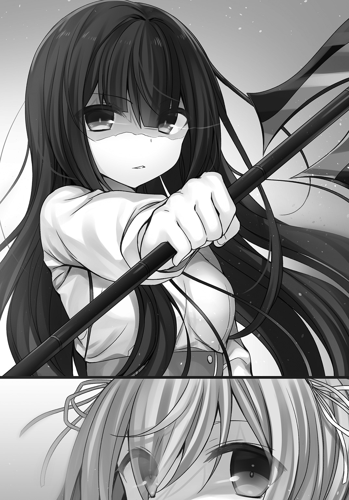
互いの得物を確認しあうと、二人は20メートルの距離をとって対峙した。
審判がさっと右手をあげる。
「公式戦のルールにのっとり、互いに全力を尽くすこと............始めッ！」
開始のかけ声とともに、クリスの......そして、俺たちの最後の戦いが始まった。
この戦いにおける監督の役割はただ一つ。
試合の棄権を判断する。それだけだ。クリスの実力なら余計な言葉は不要だろう。
選手がどこまで戦えるのか？ その実力は指導した人間なら当人以上に解っている。
だから戦いに集中している選手の限界を判断するのが、監督の務めだ。
開始と同時に先に動いたのはクリスだった。
「てええええええええええいッ！」
気合いを込めて斬りかかる。それをシアンは軽々と避けた。
大振りして体勢を崩したクリスに、シアンは足払いを仕掛ける。
「きゃっ！」
と、女の子らしい声をあげて、クリスはドテンと尻餅をついた。
ステージの下でプリシラとフランベルが声を上げる。
「ぜんぜんクリっちらしくないし！」
「どうしちゃったの!? 緊張してるのクリス!!」
シアンはクリスではなく自身の周囲を警戒していた。さすがと言うべきだな。
実況席の女子生徒が叫ぶ。
『おーっと！ クリス選手がダウンしているのに、シアン選手は攻撃しません！』
『ダウンした選手への攻撃はルール上問題ありませんが、シアン選手はどうしたというんでしょう』
解説のリチャードソンも怪訝そうだ。
お尻の辺りをさすりながら、クリスはゆっくり立ち上がる。
「痛たたぁ......やるわねシアン！」
「ふざけているのか？」
シアンとの戦いについて、俺は一切アドバイスはしていない。すべて彼女にゆだねたのだ。
真面目な顔つきでクリスは対戦相手に返す。
「私は本気よ。勝つつもりで戦っているわ」
再びショートソードを構えて、クリスはシアンと対峙した。
「では、次は私からいかせてもらおう」
先制攻撃に失敗し、呆れさせ、相手に攻めさせる。
結果、クリスが得意とするカウンターの条件が整ったのは偶然ではない。
どじっ子キャラを演じて作った状況――これはクリスが意図的に仕掛けた駆け引きの成果だ。
シアンの可変槍は長槍モードだった。
鋭い連続突きで、あっという間にクリスをステージの際に追い込む。
『おーっと！ これは目にもとまらない連続攻撃！ クリス選手大ピーンチ!!』
手数は多いが、クリスにはシアンの攻撃が当たらない。
落ち着いている。よく相手の動きが見えている。
『後がないぞクリス選手！ それ以上下がれば場外に転落だああああ！』
シアンの突きにクリスが一歩下がる。
「場外決着とはつまらぬな」
シアンの突きがクリスをさらに一歩下がらせた......だがしかし、ステージからクリスが落ちることはない。
彼女は空中に、つま先が収まる程度の小さな足場を構築していた。
とどめに放った突きによって、シアンの腕が伸びきったところをクリスは狙う。
空中に浮かせた足場を蹴って前に踏み込むと、シアンの懐に入って胴を薙ぐように、ショートソードの一撃を加えた。
シアンの身体が派手に吹き飛び、ステージ中央まで押し戻される。
途中でシアンは重力制御系の理論魔法で衝撃を和らげ、静かに着地した。
そこにすかさずクリスが風の精霊魔法を放つ。
発射速度は低速で、簡単に見切れそうな緩い追撃だ。
「チッ......こしゃくな」
シアンが風の刃を可変槍で弾くと、着弾のタイミングに合わせてクリスがステージを一直線に駆ける。
遅い攻撃魔法は相手との距離を詰めるための布石だった。
走りながらクリスはなんらかの理論魔法を、シアンの目前にセットした。
シアンもクリスが理論魔法式を構築したのは見えているらしく、前には出ずにその場で迎撃の姿勢をとる。
「てええええええええいッ！」
再びショートソードでクリスはシアンに斬りかかった。
シアンがカウンターのタイミングを計る。
が、クリスとシアン、二人の間合いは急激に、何かに引き寄せられるように狭まった。
「なんだと!?」
シアンがなんらかの力に自身の身体が引き寄せられたと察知した時には、クリスは再びシアンの間合いの内側に潜り込んだ後だった。
二度目の剣戟がシアンを捉える。
シアンが後ろに跳んで衝撃を逃そうとすると、背後数センチの位置に斥力場の壁が発生した。
「いつの間に」
「最初の風の精霊魔法と同時に仕込んでおいたの。精霊魔法は二重の囮よ」
牽制とカモフラージュ。
一つの魔法で複数の戦術的効果を狙うあたり、いかにも合理的なクリスらしい。
見えない壁に退路を断たれ、シアンは可変槍を短槍にすると、クロスレンジでシアンと斬り合った。
五秒ほどで斥力場の壁は消えたが、クリスが攻め込み続けて、シアンに下がって間合いを取るだけの隙を与えない。
ガキン！ ガキン！ ガキン！
金属同士のぶつかり合う音がステージ上に鳴り響く。客席は沸騰したように沸き上がった。
『激しい応酬だあああ！ クリス選手は理論魔法使いということでしたが、戦闘実技にも精通しているのか!? どうなんでしょうリチャードソン先生？』
『資料によると、クリス選手の入試時の戦闘実技の成績はランクＤですね。しかし、組み合わせの妙とでもいいましょうか』
『ほうほう！ 組み合わせの妙ですか!?』
『彼女が得意としている理論魔法や精霊魔法と剣術の組み合わせが、実に素晴らしい。過剰な威力になってしまいがちな理論魔法を、必要最低限の範囲で精密にコントロールしているため、式の構築から完成、発動までがスムーズです。そこに剣術が加わることで隙が生じにくくなっていますね』
リチャードソンの専門は精霊魔法だが、どうやらクリスの理論魔法が見えているようだな。
でなければ解説役など受けないか。
『やはり入試主席の天才少女は伊達じゃなかったあああ！』
『天才かどうかはともかく、入学からの短期間で戦闘実技ランクＢのシアン選手と、同等以上に戦えるほど成長したのも、彼女の努力あってこそと言えるでしょう。いや、彼女だけではありません。プリシラ選手もフランベル選手も驚くべき成長を遂げています』
客席の生徒たちがどよめいた。
一般客はクリスのピンチからの反転攻勢に大盛り上がりだ。
エミリアクラスの連中の中にも、クリスの試合を熱心に見つめる視線が増えつつある。
俺の唱えるお題目より、今のクリスたちの姿の方がよっぽどガツンとくるだろう。
天才と呼ばれるクリスでさえ、努力を惜しまない。
補欠入学だったプリシラが、召喚獣を使いこなせるまでになった。
不器用なフランベルが、その弱点を武器にしてみせる。
そんな三人の姿に嫉妬でも、羨望でもいいから、燃えるような感情を抱いてほしいぜ。
剣戟の音色が次第に鈍いものに変化し始めた。
シアンがクリスに告げる。
「残念だったな。やはり、その剣では勝負にならない」
クリスのショートソードの刃は、度重なる可変槍との打ち合いでボロボロと崩れ――
ガキーン！
断末魔の叫びを上げて、クリスの剣は叩き折られた。
『おおおおおっと！ クリス選手の魔法武器が破壊されてしまったああああ!? これで形勢は再び逆転!! シーソーゲームもここまでかッ!?』
俺はプリシラとフランベルに左右から腕を摑まれ揺すられた。
「ちょっ！ さすがのクリっちでも、武器が壊れたら無理だよレオっち！ 早く止めて！」
「そうだよレオ師匠!! シアンが相手じゃ太刀打ちできないよ！」
俺は試合を止めない。
クリスの目は死んでいないのだ。むしろ不敵に笑ってやがる。
本当に誰に似たんだか。
「終わりだ。クリス・フェアチャイルド」
隙だらけのクリスをシアンの渾身の一撃が狙う。
「穿てッ!! 軍国流!!」
一瞬のタメから一気に魔法力を解放して叩き付ける、フランベルの一閃を打ち抜いたシアンの必殺技だ。
武器を失い隙を晒したクリスを仕留めるには、最高のタイミングといえるだろう。
――隙だらけ。
シアンは勝負を決めにきた。
それをクリスが待っていたとも知らずに。
「その技、私の前で一度見せたのが命取りね」
クリスは折れたショートソードを捨て、計算尺によって複数の魔法式を完成、発動させていた。
一瞬のタメの間にクリスは三つの理論魔法でシアンの攻撃に備える。
「貫くッ!!」
シアンが構わず槍を打ち込んだ。
その切っ先が滑ってクリスの身体を逸れる。
槍の切っ先は吸い寄せられるように、ステージの床石を穿った。
ズドンという衝撃とともに、その場に大きなクレーターが生まれる。
クリスは斥力場で正面から受けるのではなく、巧みに相手の力の動きを誘導して、その攻撃のエネルギーを地面に受け流したのだ。
さながら避雷針のようだった。
しかも自身は空中に透明な足場を作って立ち、地面を穿つ破壊力からきちんと身を守っている。
「――ッ!?」
不発に終わった一撃にシアンは目を大きく見開いた。
彼女の戦う遙か後方で、ギリアムが叫ぶ。
「なんと無様な！ その程度の理論魔法を見落とすなんて......それでも我がクラスの代表ですか!? 大将らしくなさい！」
ガンダルヴァ・アプサラスが来賓席にいるのも忘れたように、ギリアムの白い顔が真っ赤になった。
シアンが槍を地面から引き抜く。
「ふふ......ははは......なるほど。どうやら本気を出さざるを得ないか。弱者のままなら、見逃してやってもよかったのだがな」
突然、シアンの口振りが変わった。
異変に気付いて、クリスが大きく後ろに跳ぶ。
空気が変わった事に気付いているのは、対峙したクリスと俺と......そして、来賓席のガンダルヴァ・アプサラス。
ガンダルヴァは席から立ち上がると、シアンをじっと見据えた。
あの老紳士が顔面蒼白だ。
いったい何を恐れているんだ？
『おおおっと！ クリス選手気圧されたかぁッ！ 距離をとって様子をうかがっているうう！ 一方、渾身の一撃を防がれたシアン選手はどう攻めるのかあああ!?』
実況も観衆もシアンの変化に気付いていない。
プリシラとフランベルが声を上げた。
「クリっち！ ハッタリだよ！ やっちゃえやっちゃえ！ 攻撃は最大の防御っていうし！」
「気をつけてクリス！ まだ他にも、技を持ってるかもしれないよ！」
二人の意見は正反対だが、ともにクリスの身を案じ、その勝利を信じている。
ステージの中央で審判が選手二人に促した。
「双方、戦闘を続行せよ！」
クリスが先に動く。
シアンの不気味さは感じているだろう。だが、それでも攻めに転じる。
クリスが構築したのはシンプルな重力反転の魔法式だ。
シアンを浮かせて、その先に偏向の魔法を設置し場外にぶっ飛ばすという、クリスが俺に仕掛けたこともある組み合わせだった。
あの時よりも発動が早い......が、それは不発に終わった。
クリスの表情が緊迫する。
理論魔法使いのギリアムが笑った。
「おやおやクリス君。式の構築を間違うなんてらしくないですねぇ？」
クリスはギリアムの声に耳も貸さず、再び同じ式を構築する。
俺はその過程に集中した。
シアンの視線がクリスの魔法式を追いかけている。
そして......干渉しやがった。
クリスが計算尺を用いて構築した式を、それより早い速度で上書きしているのだ。
なんの補助装置もなしに。人間業とは思えなかった。
「噓......式が......崩れるなんて？」
混乱するクリスめがけてシアンが跳ぶ。そして可変槍を乱暴に振るった。
洗練された突きではない。棍棒のようにクリスを打ち据える。
「クッ!? どうしてッ!?」
クリスは寸前のところで斥力場を張った......はずだった。
だが魔法式が不発に終わる。
振るわれた槍の柄にすくい上げられるように、クリスの身体が宙で弧を描き、自由落下して地面に叩き付けられると彼女の身体はステージの上を転がった。
普段のクリスなら着地の衝撃を緩和するくらい、無意識のうちにしているはずだ。
「グハッ!? なん......で......」
倒れたままのクリスのそばにシアンがゆっくり歩み寄る。
クリスは立ち上がろうとした。
その腕を、足を......四肢をシアンは打ち据える。
「――――ァッ!?」
声にならない悲鳴をあげるクリス。
審判が止めに入ろうとすると、シアンは何かを口ずさんだ。
感情魔法だ。
審判はまるで何が起こっているのかもわからないように「続行」を命じた。
まずい。何かがおかしい。
プリシラが悲鳴をあげる。
「や、やばいよレオっち！ 試合を止めて！」
「そ、そうだよ！ クリスには悪いけど、本当にここまでだ！」
俺はステージ脇から審判に向けて叫ぶ。
「試合を止めてくれ！ こちらの負けだ！」
「..................続......行」
審判の目はうつろだった。そのままステージ上にばたんと倒れる。
シアンがゆっくりと俺の方に顔を向けた。
氷のように冷たい笑みを浮かべ、そっと眼帯を外す。
そこにあるべき黒曜石色の瞳は、金色に染まっていた。
それは高位魔族の証ともいえる色である。
エステリオに魔族は入れないよう、結界が施されているはずなのに......。
いや、今はそんなことはどうだっていい。
現に、こうして入りこんでいたのだ。シアンは俺に告げた。
「この女を殺されたくなかったら、正体を明かせ」
言いながら足下めがけて槍を振るう。
打ち据えられてクリスが悶絶した。
俺の正体を明かせ......か。
ステージに倒れたままのクリスが、振り絞るように声を上げた。
「レオ！ 来ちゃだめぇッ！ 私は......大丈夫だからッ!!」
この光景は王都にも映像が流れている。
ここでの出来事は、学園どころか王都の民まで知るところになるだろう。
クリスは俺を庇っていた。
「こんなの試合じゃないよ！ あたしが止める！」
「ああ！ いくらなんでもやり過ぎだ！ ぼくも手伝うよプリシラ！」
二人が一斉にステージに上がろうとするのを、俺は制した。
「シアンの標的は俺だ。二人は下がっていてくれ」
俺はステージに上がった。
予感はしていたが、どうやら管理人の仕事は今日で終わりらしい。
ステージに上がった俺を、ギリアムが指さし糾弾した。
「お、おい！ 平民！ し、試合中になにをしているのかね！ き、君はこの試合をぶちこわすつもりか!?」
ギリアムの声は震えていた。
シアンの行為はあきらかに行きすぎだ。
「き、君らの負けだな！ 反則負けだ！ さあ、試合はおしまいだ。シアン君、戻ってきたまえ」
シアンはギリアムに一瞥もくれず、じっと金色の片眼で俺を見据えた。
「来たか......レオ・グランデ」
「俺の生徒に手を出したからには、覚悟は出来てるんだろうな？」
シアンは口元を緩ませた。
「貴様がなぜ力を隠すのか理解できない。が、こうすれば出てくるというのはわかっていた。さあ、あの夜の続きといこう」
俺は首を傾げる。
「あの夜？」
シアンはゆっくり頷いた。
「王都での貴様との殺し合い......心が震えたぞ」
「あー。襲撃者はお前だったのか？」
ギリアムに魔導書の受け取りを頼まれ王都に赴いた日の夜――
八番街で俺に襲撃を仕掛けてきた暗殺者の正体は、シアンだったということか。
道理でシアンからは、殺し合いを前提とした実戦経験を積んだ者特有の〝臭い〟がしたわけだ。
「学園のどの教員も雑魚ばかりで、殺す価値すらない連中揃いだったが、貴様のような使い手がいるとは思わなかったぞ」
「お前はシアン・アプサラスなのか？ それとも、シアンと入れ替わったのか？」
「シアンという人間はもとから存在しない。人間としてアプサラス家に取り入るくらい、私の隠蔽魔法をもってすれば簡単なことだ」
自信たっぷりにシアンは言う。
この高位魔族がアプサラス家の養女になるまでのいきさつは想像もつかないが、軍師ガンダルヴァ・アプサラスに正体を看破されず、学園の誇る結界も欺く実力の持ち主という事実は揺るがない。
俺が感情魔法で情報を引き出すまでもなく、彼女は自信たっぷりに自ら告白を続けた。
闘技場の観客席は水を打ったように静まり返る。
「ずいぶん、ぺらぺらとおしゃべりするんだな？」
可変槍を頭上で回転させるように振るってから、シアンは腕と身体で柄を挟むようにして構え直した。
「何もわからぬまま殺してしまってはもったいないだろう......人間」
シアンの左目にも、ぼんやりと金色の光が宿った。
その姿が少女のそれから禍々しい魔族へと変容していく。
肌の色が青みがかり、金色の瞳は輝きを増した。
山羊のような角を生やし、黒い髪は燃えるような紅に染まっていく。
エステリオの防御魔法が縫い込まれた制服も、変容して半裸のようなあられもない姿になった。
女性型の実に魔族らしい出で立ちだ。
『こ、これは......どういうことでしょう!? 身体変化の魔法でしょうか!?』
『そんな馬鹿な......なぜ結界のある学園に......』
シアンの正体をやっと理解したリチャードソンが、声を震えさせた。
生徒や一般客は魔族など見たことがないだろう。
教員だって似たようなものだ。
一切動じない俺に、シアンが不思議そうに首を傾げた。
「レオ・グランデ。貴様こそ何者だ？」
「俺はこの学園の......エステリオの管理人だ」
傷つき倒れ動くことさえできないクリスは、シアンのすぐ足下だ。
殺そうと思えば、すぐにシアンはクリスにとどめをさせるだろう。
「噓をつくな。あれほどの使い手がただの人間のはずがない」
平民を通り越して、人間じゃないとまで言いやがるか。
槍の切っ先が、倒れたまま動けないクリスの喉元に突きつけられた。
ごめんなクリス。
怖い思いをさせて。
喋っている間に隠蔽魔法を織り込んで構築した理論魔法を、俺は展開させた。
発動と同時に、クリスの姿が「フッ」と消える。
シアンが目を丸くさせた。
そして、再びクリスが姿を現す。俺の腕の中に。
俺は彼女を空間転移で引き寄せたのだ。
「レオ......力を使ったら......もう、言い訳はできないわ」
「いいんだクリス。それより、すぐに助けてやれなくてすまなかった」
彼女の四肢は完全に折れている。
俺は回復魔法ランクＡの完全治癒をクリスに施した。
淡い光がクリスの怪我を修復し、受けた痛みを消し去り失われた生命力を再び甦らせる。
「あったかい......レオって、回復魔法も得意なのね......」
俺の腕の中でクリスが弱々しく呟いた。
「得意ってほどでもないさ。使えなきゃ生き残れなかったってだけだ」
クリスの傷が癒えたのを確認すると、俺はそっと彼女の身体を解放し、背中側に庇うようにして一歩前に出る。
シアンが苦々しい顔をした。
「そのような芸当もできるとは......おもしろいぞレオ・グランデ」
ステージの向こう側で、ギリアムが金魚のように口をぱくぱくさせていた。
ガンダルヴァも来賓席で石像のように固まっている。
「シアン。お前の目的はなんだ？」
「本気の貴様と戦うことだ。私は強くならねばならない。魔王候補だからな。だが同胞と戦うことは禁じられている。なればこそ、強い人間の魔法使いが必要なのだ！」
会場内に向けてシアンの声が響き渡った。
異形の姿とクリスへの容赦のない攻撃。
シアンは魔族だ。
だれもがそれをようやく認識したのと同時に、パニックが起こった。
生徒や一般客が席を立ち、一斉に逃げだそうとする。
「動くなッ!! 人間どもッ!!」
シアンが理論魔法を発動させた。
瞬間、会場全体に結界が張り巡らされる。
それは半球系の斥力場で、第零番闘技場全体をすっぽり覆い尽くしてしまった。
「この会場の人間は一人残らず人質だ。妙な動きをすれば、無差別に破壊魔法をばらまく」
「人質をとって俺をなぶり殺しにしようってか？」
「私の望みは言ったはずだ。全力の貴様との血湧き肉躍る戦いを所望する。貴様の強さに触れるほど、私の力は増幅するのだ！」
強敵と戦うことは、何よりの修行となる。それは人間も魔族も変わらないというわけか。
「そうか......」
俺は大きく息を吐いた。
シアンが笑う。
「レオよ。何人殺せば貴様は本気を出す？」
「お前なんざ本気を出すまでもないぜ」
「笑止！」
俺は振り返った。
「クリスたちはステージから離れていてくれ」
「私も戦うわ！」
クリスだけでなく、プリシラとフランベルも頷いた。
「あ、あたしもまだまだがんばれるし！」
「ぼくだってもっと師匠の役に立ちたいよ！」
俺の口から溜息が漏れる。
「気持ちは嬉しいんだが......」
プリシラは不満そうな顔で俺を見上げた。
「ねえ、レオっちって......魔法使いだったの？」
「ああ。事情があって隠していたんだが、そうもいかなくなっちまったな。騙しててごめん」
プリシラは首を左右に振った。
フランベルがまっすぐに俺を見つめる。
「やっぱり師匠はただ者じゃなかったんだね」
「それはずっと昔の話さ」
クリスが真剣な眼差しで訴える。
「絶対にレオの足はひっぱらないわ！ だからお願い！ 手伝わせて！」
強い相手と戦うのは、何よりの訓練。そうだ。良いことを思いついた。
「わかった。プリシラとフランベルは本当にいいんだな？」
プリシラがにっこり笑う。
「心の準備はばっちしだよ」
フランベルも刀の柄にそっと手を添えた。
「蒼月がもっともっと力を発揮したいって、うずうずしてるよ」
しょうがない。今日で修行を仕上げよう。
「なら、三人とも上がってこい。俺が戦闘管制をするから、自由に戦ってきていいぞ」
クリスが不思議そうに首を傾げた。
「戦闘......管制？」
「まあ、やってみればわかるって」
俺自身は攻撃に参加せず、状況を読み適時魔法による支援を行う。
自分で戦った方が早いので、こういうのはあまり得意じゃないんだが......ここは教え子のためにも一肌脱ぐとしよう。
三人をステージに上げると、俺はシアンに向き直った。
「というわけで俺と戦いたければ、まずはこの三人を倒してからだ」
シアンの表情が歪んだ。
「ふざけるな！ 雑魚などとうの昔に喰い飽きたのだ！」
まだわかっていないようだなシアン。
喰われるのは俺たちじゃない。お前のほうだ。
俺は通話魔法をクリス、プリシラ、フランベルの三人に掛けてパスを通す。
「これより戦闘管制に入る。プリシラはクロちゃんを召喚。フランベルは召喚完了までプリシラのバックアップ。クリスは二人に斥力場の防御を展開。そののち防壁魔法を俺を対象に設置。敵の破壊魔法の第一波終了後、プリシラとクロちゃんでシアンを挟撃。タイミングをみてフランベルは近接攻撃を展開。クリスは状況に応じてそのバックアップ」
俺の言葉に最初はとまどったプリシラだが、すぐに召喚魔法言語を唱え始めた。
「ならば私のための供物となれ！」
シアンがプリシラの召喚魔法を阻もうと、精霊魔法の風の刃を放つ。
すかさずフランベルが蒼月を抜き払い、風の刃を剣圧で切り裂いた。
「こしゃくな......」
すぐさま、風の刃が十数発、フランベルとプリシラめがけて降り注いだ。
「させないわよ！」
クリスの斥力場がそれを防ぎ切る。
シアンは風の刃をカモフラージュにして、俺に対して破壊魔法を放ってきた。
自分で防ぐのは簡単だが、きっちりクリスが防壁魔法でシアンの破壊魔法を中和する。
「――ッ!? な、なんだというのだ......」
先日は見てすぐに再現したため、不完全だったクリスの防壁だが、シアンの破壊魔法をうち消すだけの、ちょうどぴったりの防壁を展開させていた。
「召喚クロちゃん！」
「ガオオオオオオオオオオオオオオオオオオン！」
ステージ上に巨大な黒獅子の成獣が現れる。
『え、ええと......試合の方は......し、審判も気絶しており......その......あのッ!? どうしましょうリチャードソン先生!?』
『みなさん落ち着いて行動してください。どうやら、我々は強力な理論魔法の障壁によって、外部から隔離されてしまったようです。ですが、生徒も一般の方もご安心ください。我ら教員、一丸となってみなさんの安全を守ります』
最初から期待はしていないが、教員たちの中で動けそうな連中が、シアンの斥力場に干渉して脱出路の確保を始めた。
「見てないでお前も手伝ったらどうだ？ ギリアム！」
すでにミゲルとアイリスは、ステージのそばを離れて客席に逃げ込んだ後だった。
「わ、わわ、私には最後までし、試合を見届けるぎ、義務がある！」
もう、試合でもなんでもないんだが......放っておくか。
その間にも、プリシラとクロちゃんがシアンを左右から挟み込むように攻撃した。
「チッ！ 貴様らの相手などしていられるか!? 私とレオの戦いの邪魔をするな！」
シアンは斥力場で挟撃を弾くと、後ろに跳んだ。
ちょうどフランベルが飛び込んで、たった今シアンが立っていた場所に斬り込む。
「避けられたか!?」
後方に跳ぶと同時にシアンが風の刃を放ち、蒼月で空を斬ったフランベルを襲う。
瞬間――クリスが真空魔法で、フランベルの目前に迫る風の刃をうち消した。
斥力場に弾かれたプリシラとクロちゃんも、着地すると身構える。
シアンが召喚魔法言語を口ずさんだ。
「させるかあああッ！」
独自の判断でフランベルが斬り込む。
シアンは召喚魔法を行いながら、フランベルの剣戟を可変槍を短槍にして弾いた。
召喚魔法を完成させると、フランベルと激しく打ち合いをしながらシアンが笑う。
「無駄だ。その剣、また折られにきたか？」
「折られたりなんてするもんか。この刀はぼくの魂だ」
ガキン！ ガキン！ ガキン！
と、途切れることなくフランベルとシアンの魔法武器同士による打ち合いが続いた。
シアンの足下に魔法陣が数え切れないほど生まれ、召喚獣が次々に姿を現す。
それは全身甲冑の軍団だった。
顔は黒く塗りつぶされ、鎧だけが動き続ける死霊かリビングデッドの類だ。
数はステージの半分を埋めるほどに膨らんだ。
甲冑兵は操り人形のように、剣を振り回しながらプリシラに殺到する。
「グルアアアアアアアアアアアアアアアアアアアアアアアア！」
クロちゃんが次々と甲冑兵を打ち倒し、引きちぎり、プリシラに近づかせない。
それでも多勢に無勢だ。
死を恐れず、死の概念すらない甲冑兵は突撃を繰り返す。
その剣が、クロちゃんの身体を切り裂いた。
「クロちゃんがんばって！」
プリシラはクロちゃんに触れると、回復魔法で傷を塞ぐ。
幻体に痛みはない。だからプリシラ自身、痛みを共有する必要もなく、クロちゃんの傷も閉じていく。
「クリっち！ こっちは大丈夫だから！ フラっちのカバーに入って！」
「わかったわ。それでいいわよねレオ？」
シアンが召喚獣を呼びだしたため、俺は戦術に修正を加えた。
「プリシラとクロちゃんは甲冑兵の処理を継続。クリスとフランベルはシアンを直接攻撃。防御系の理論魔法は俺が受け持つ。攻めまくれ!!」
「了解ッ！ 援護するわフランベル！」
クリスが前に出て、フランベルと打ち合いになっているシアンの足下に、重力の枷を発生させた。
即座に理論魔法式にシアンが介入してくる。
先ほど、クリスの魔法式を上書きして無効化した技だ。
似たようなことは俺も得意だぞ。
そもそも、クリスとのタイマンの時に、式への介入は何度も見せてもらっているからな。
クリスの魔法式への介入に対して、俺はさらに介入を行った。
ややこしいが、キャンセル技がキャンセルされたことで、クリスの魔法が正常に実行される。
「ば、馬鹿な!?」
シアンの足捌きが重く鈍った。
フランベルの手にした蒼月の刃が閃く。
「ハアアアアアアアアアアアアアアアアッ！」
気合いとともにフランベルはシアンに一撃を打ち込んだ。
避けきれないとふんで、シアンは可変槍で正面からフランベルの攻撃を受ける。
ガキイイイイイイイイイイイイイン！
と、激しい金属同士のぶつかり合う音とともに、可変槍の柄からアダマンタイトコーティングされた刃の部分が千切れ飛ぶ。
シアンの可変槍も、フランベルの蒼月もリミッターの効いた状態だ。
武器の格は、ほぼ同格。
純粋に、フランベルの剣技のキレが、シアンのそれを凌駕した瞬間だった。
「あり得ない......」
シアンはのけぞるようになりながら、柄だけになった槍を投げ捨てた。
「フランベルは後退。プリシラと協力して、三十秒で甲冑兵を殲滅しろ。今のお前たちならできる。クリス......出番だ。決着をつけてこい」
「わかったよレオ師匠！」
プリシラとクロちゃんを取り囲む甲冑兵の群れ。
それを切り裂くように蒼い稲妻が走る。
フランベルが突撃した後には、バラバラになった甲冑の残骸しか残らない。
客席から......声援が届いた。
「いけーッ！ がんばれー！ レオさん！ クリスさん！ プリシラさん！ フランベルさん！」
こんな状態で......いや、こんな状態だからかもしれない。
吹っ切れたようにエミリアが、客席から俺たちに声を上げた。
それに呼応するように、プリシラとクロちゃん。そしてフランベルが次々に甲冑兵を倒していく。
しだいに客席からも、応援の声が届き始めた。
悔しげにシアンが呟く。
「......仕方ない。まずは貴様らに集中しよう」
闘技場を包んでいた斥力場の檻が解かれた。
どうやらシアンは、結界を維持する余裕もなくしたようだ。
だが、誰一人、観覧席から逃げようとしない。
声援が次第に一体となり、ステージ場で戦うクリスに、プリシラに、フランベルに注がれる。
クリスが改めて、計算尺を手にシアンに立ち向かった。
「レオに挑戦したいなら、まずは私たちを倒さないといけないわね？」
「うるさい。黙れ！」
クリスめがけて風の刃が飛ぶ。
「クリス。理論魔法で防御せず避けろ」
咄嗟にクリスは横に飛び退いた。
が、逃げ切れず彼女の身代わりになるように制服は切り裂かれ、スカートもボロボロにされてしまった。
クリス自身に致命傷はなく、傷は浅い。
「痛ッ......くない！」
すぐにクリスは体勢を整えた。
風の精霊魔法は囮で、シアンはクリスに対して理論魔法を展開する。
隠蔽しているため、クリスには見えていなかった。
まあ、集中している俺には丸見えなんだけどな。
種類まではわからないが、どのみち即死系だろう。
魔族としては若いながら、精霊魔法、理論魔法、隠蔽した理論魔法をたくみに使い分けるあたり、シアンの力はなかなかのものだ。
今こそ管制の出番である。
「クリス。シアンはなんらかの即死系理論魔法を撃ってくる。隠蔽したもので詳細は不明だ。そこで俺が支援するから、お前の一番攻撃力の高い魔法を、自身の足下方向に放て」
「えっ!? ......ええと、わかったわ」
耳元から聞こえる俺の声に、クリスは素直に従った。
シアンの魔法が完成する。
それは......虚数空間の理論魔法だ。
クリスの足下に別の世界へと通じるゲートが開いた。
落ちたら１００％死ぬ落とし穴のようなものだ。
ゲートが開くより一瞬早く――俺はクリスの身体を短距離瞬間移動させた。
虚数空間が口を開くが、すでにクリスの身体はシアンの頭上に転送された後だった。
「いっけええええええ！」
クリスが足下めがけて放ったのは、彼女が得意とする消滅魔法ではなく、シアンをはじめ魔族が使う破壊魔法だった。
「人間風情があああああ！」
シアンが右腕を天に向け、クリスの破壊魔法を防壁魔法で中和する。
浅い......か。
クリスが慣れないこともあったが、やはり彼女といえども破壊魔法は使うに重たい。
軽々と使えない。そうそう出来ることではない。
シアンの展開した防壁魔法によって、破壊魔法が受けきられた......その時。
「もういっぱああああつ！」
クリスが破壊魔法を重ねがけした。
防壁で中和しきれず、シアンの右腕に破壊魔法が到達する。
「ぐああああああああああああああああああああああああああ！」
獣のような叫び声をあげて、シアンの右腕はズタズタに崩壊した。
しかも、その崩壊は上腕から肩へと広がろうとしている。
「人間が......人間の分際でええええ！」
シアンは左手を手刀にすると、二の腕から先を切り落とした。
そして、即座に再生魔法で腕を元に戻す。
実に魔族らしい治療法だ。
一方、力を出し切ったクリスはシアンの前に膝を屈していた。
「ハァ......ハァ......」
呼吸も荒く、無茶をしたのは明白だ。
まさか破壊魔法の多重起動とは、俺も予想していなかった。
「クリっち逃げて！」
甲冑兵を倒しきったプリシラたちが、クリスの元に加勢する。
クロちゃんがシアンに襲いかかった。
「獣風情がいきがるな！」
――瞬間、クロちゃんの幻体が、放たれた破壊魔法によって崩壊する。
「クロちゃん!?」
プリシラが悲鳴をあげた。
が、すぐにアダマンタイトスタッフを構えなおして、彼女はクリスとシアンの間に割って入った。
「クリっちは下がってて」
「まだ......戦えるわ」
よろめきながらもクリスは立ち上がり、計算尺を回転させた。
「死ね......死ね死ね死ね死ね死ね死ね死ねええええ！」
シアンはもはや隠蔽や牽制などせず、破壊魔法をクリスとプリシラめがけて放つ。
俺はクリスたちを守るように防壁魔法を展開しつつ、ひっそりとシアンの背後に回り込んだ少女に指示を出す。
彼女は納刀状態だ。
「フランベル......やれ」
「了解師匠！」
シアンが破壊魔法を放ち、それを俺の防壁魔法が中和する。
同時にフランベルが一気に踏み込み、距離を詰め、シアンに肉薄した。
シアンが察知し振り返った時にはフランベルの殺傷圏内だ。
「一閃ッ!!」
「――ッ!?」
刃が閃き、シアンの胴体を一文字に切り裂いた。
魔族の肉体が二つに分かたれ、どさりとステージに崩れ落ちる。
召喚された甲冑兵たちも、地面に溶けるように元の世界へと戻っていった。
クリスとフランベルは限界だったらしく、フラフラとした足取りで俺の元にたどり着く前に、ステージの上で倒れそうになった。
プリシラと俺とで支えて、ひとまず床石に寝かせる。
プリシラが二人の手を握り、回復魔法で治療を開始した。
「まかせていいかプリシラ？」
「レオっちもお疲れでしょ？ あたしはクロちゃんががんばってくれたおかげで、ぜんぜん元気だから」
笑顔をみせるプリシラだが、無理をしているのが見え見えだ。
学園に入学する前に、まさか高位魔族と一戦交えるなんて、プリシラも思ってもいなかったろう。
「よくがんばったなプリシラ。少しの間、二人を頼む」
「うん！ 任せて！」
俺は客席に視線を向けた。
来賓席にいたガンダルヴァが、力なくその場にひざまずく。
シアンが魔族だと知っていたんだろうか？
いや、あの様子からも、おそらく知らなかったのだろうな。
まぁ、俺はガンダルヴァ本人ではないから、詳しいところは事情を聞くまでわからない。
けど、きっと愛していたんだと思う。
いくら現役を退いていても、軍師ガンダルヴァ自身、超一流の魔法使いだ。
シアンが張った結界を破壊することもできただろうし、俺たちに加勢することだって可能だった。
それをしなかった。心情的にできなかった。
シアンとは......娘とは戦えなかったんだろう。
責めるつもりはない。
おそらくガンダルヴァはこの後、厳しい取り調べを受けることになり、最悪投獄されるかもしれない。
逃げないのは、あの老紳士が何もかも覚悟したからに、違いなかった。
問題は、シアンのもう一人の保護者の方だ。
まだステージ脇にはりついていたギリアムが、悲鳴をあげ続けていた。
「な、なにがどうなったのかはわからないが！ 無効だ！ こんな試合は無効だ！ この大会は無効だ！」
俺はギリアムの元に歩み寄る。
「なあギリアム。お前、シアンとグルだったのか？ 高位魔族しか知らない未知の魔法理論目当てで、魔族の目論見に協力する邪悪な魔法使いがいるって話もあるからな。それで無期懲役を喰らった魔法使いもいるだろ？」
ギリアムの蛇のような顔が、ぐにゃりと歪んだ。
「ち、違う！ 知らない！ 本当に知らなかったんだ！ 信じてくれ！ シアン君が......いや、あの娘が魔族だったなんて！ 私も被害者だ！ アプサラス家の娘だから、特別扱いしてやったのに！」
悲鳴をあげるギリアムの姿は、この場の生徒たちはもとより、放映によって王都にまで広まっていた。
「お前が被害者？ 笑わせるなよ。シアンが魔族だとも見抜けずに、のうのうと学園内で獲物探しをさせていたじゃないか。知らないですむか。この被害を出す片棒を担いだのは、お前だろギリアム」
「ひ、被害なんて......出ていないじゃないか！ いやあ平民と思っていたが、レオ・グランデ君。君も人が悪い。あれほどの使い手だったとは。私もどうして君を意識していたのか、今になって思えば、にじみ出る真の実力に脅威を感じていたからなのだよ！ そして、あわや大惨事というところを、君は救った！」
ステージに上がってくると、ギリアムは突然、俺に拍手をした。
会場中の冷ややかな視線がギリアムに集まる。
「ど、どうしたのですみなさん！ 英雄ですよ！ 彼こそまさに勇者の再来！ さあ、惜しみない拍手を......」
俺は笑顔で拳を握り込むと、魔法力もなにも込めず、腕力のみで目一杯......ギリアムの顔面を殴りつけた。
「ギニャグオバアアアアアアアアア！」
ステージの上を転がり、縁から場外に落ちるとギリアムは動かなくなった。
殺しちゃいない。気絶させただけだ。
遠くでプリシラが手を振る。
「レオっち！ クリっちとフラっち、気がついたよ！」
クリスは少しボーッとした顔のまま、ゆっくり立ち上がる。
フランベルも、まだ意識が半分朦朧としているような雰囲気だ。
二人とも魔法力的な負荷を一気にかけたわりに、復帰が早かったな。
これも日々の訓練の成果と言えるだろう。
フランベルも蒼月の力で、一閃の威力を上げつつも、復帰まで数時間も眠らなくていいようになったようだ。
二人の無事を確認したところで、俺は〝総仕上げ〟をすることにした。
「まだ......終わって......いない」
見れば、ステージの中央で上半身と下半身を分断されたシアンが、肉体を再生させていた。
クリスが目を丸くさせて警戒する。
「レオ！ シアンはまだ戦うつもりよ！」
フランベルもプリシラも、フラフラになりながら互いの得物を構えようとした。
「三人はそこで見ていてくれ。あとは俺がやる」
肉体の接合を終えたシアンが、幽鬼のようにゆらりと立ち上がる。
「やっと......やっと私と戦ってくれるのだな。嬉しい。心待ちにしていたぞ！ さあ、楽しもうレオ・グランデ！ 貴様の力に触れるほど、私はより強くなる！」
「残念だったな。高位魔族の育成はしてないんだ」
俺は理論魔法を展開した。
同時に、感情魔法を込めて、召喚魔法言語を唱える。呼び出すのは時間を司る神の断片だ。
神を迎え入れるため、並列起動した四大元素の精霊魔法を制御して、森羅万象の理を得る。
肉体が負荷に耐えきれるよう、戦闘実技の身体強化と、回復魔法の身体強化を最大レベルで重ね掛けした。
「フランベル。蒼月を貸してくれ」
「う、うん！ もちろんだよ！ これはぼくと師匠の......こ、子供みたいなものだから」
噓じゃないが言い方というものがあるだろうに。
投げてよこされたフランベルの蒼月を手にすると、俺は抜き払った。
剣と刀の差はあるが、まあ出来ないことはない。
シアンの黄金の瞳が燃え上がるように輝いた。
「どうした？ こないならこちらからいくぞ！」
破壊魔法を連続で放つシアンだが、俺はゆっくりと前に歩みを進める。
すべての時が遅延するように、ゆっくりと流れていく中を、俺だけがその速度を普段通り維持していた。
魔王ならこの時間の流れが加速した世界に入り込んでくる。
シアンは自らを魔王候補と言った。
それが伊達でなければこの領域まで入ってこい。
「――ッ!?」
シアンもまた世界の加速する領域に手を伸ばし、侵入してくる。
おそらくステージ上では、俺が消えシアンの姿も消えたように見えているだろう。
「これは......なんだ!? 身体が重い。魔法力が四散する......なんだというのだレオ・グランデ!?」
「先代の魔王はこの領域でも普通に戦ってたぜ？」
時を制御した世界。
ここぞという時に俺が使う大技だ。
「ま、まさか......貴様......貴様が......わかったぞ！ ははは！ 魔王様！ 復讐の時が来た！ 勇者は私が倒します！」
浮かれたようにシアンは笑い出した。
無視だ無視。
言うべきことだけ言っておこう。
「さあ私と戦え！ 勇者よ!!」
「望み通り戦ってやる。ただし......」
俺はシアンを射貫くように見据えた。
黄金色の瞳が揺らぐ。
「ただし......なんだ？」
「俺がする攻撃は一度きりだ。せいぜい前面に防御系の魔法を集めておくことをおすすめするぜ。防ぎきれたらお前の勝ち。俺のことを煮るなり焼くなり好きにすればいい」
俺は蒼月で突きの構えをとった。
反応するように、シアンが斥力場を多重起動し、こちらの攻撃のベクトルをそらす魔法式や、反発の魔法式などをかき集める。
すべてお見通しだ。
俺は床石を踏み込み、一気に蹴ると突きを放つ。
速く！ 迅く！ 閃光すらも追い抜く速度で。
「反魔法剣！」
使うのは魔王戦以来だ。
完全再現にはほど遠いが......それでも切っ先はシアンの張ったすべての魔法防御を無視して、その心臓を貫いた。
魔王を目指すというわりに、情けない防御しかできなかったなシアン。普通の人間相手にいくらでも無双できたかもしれないが、今回ばかりは相手が悪い。
「......なぜ......剣が......届く？」
「お前がクリスたちと戦っている間に、お前の魔法の傾向はだいたい観察させてもらったからな。見切った......ってやつだ」
蒼月から伝わるシアンの情報を解析し、俺は魔法式を構築するとシアンの心臓にたたき込んだ。
「ウグアアアアアアアアアアアアアアアアアアアアアアアアアアア！」
「こいつを喰らって無事ならお前は魔王を越えてるぜ」
シアンの顔が悔しげに歪む。
「殺してやる殺してやる！ 絶対に貴様を殺してやるからな！」
「そいつは無理だな」
「殺す殺す殺すころ......」
「終わりだ......シアン」
最後に魔法力をもう一度たたき込んで、シアンの身体は完全に消滅した。
お前の敗因はただ一つ。
元勇者に挑むには未熟すぎた。それだけだ。
この領域の中は俺だけになった。
静かだな。独りには慣れている。
ああ......何もかも終わってしまった。
ここまでやって、王都にも大々的に知られてしまった以上、学園に俺の居場所はない。
「まあ、くよくよしていても仕方ないか」
俺は時の領域の魔法を解いた。
瞬間――
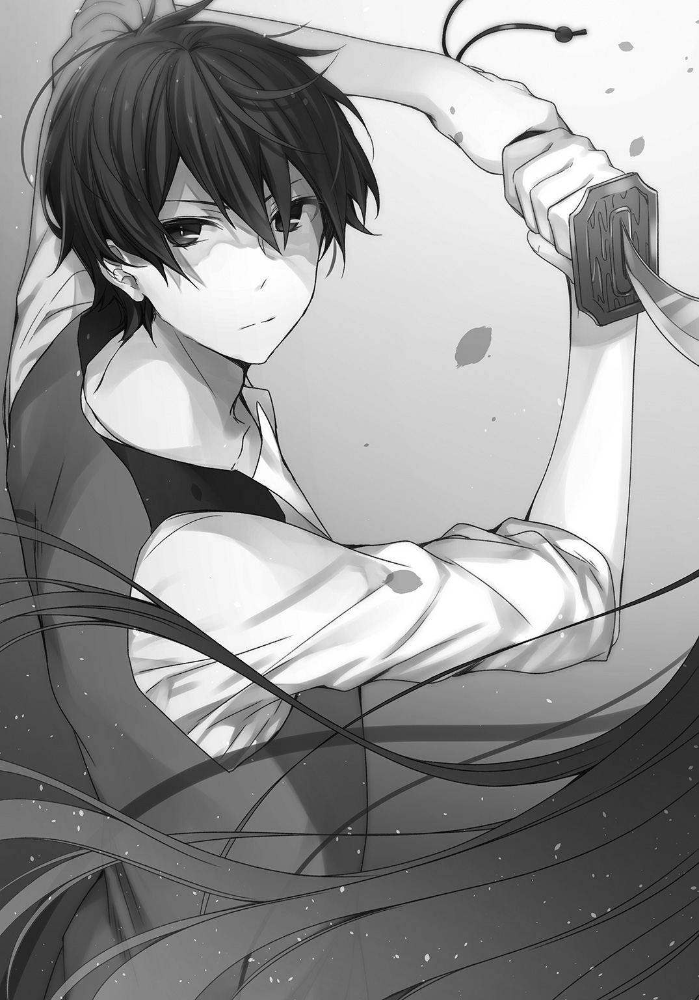
俺がステージに姿を現し、シアンが現れないとわかると、大地が割れんばかりの大喝采が、客席から俺の元に降り注いだ。
クリスとプリシラとフランベルが俺に抱きついてくる。
ほんの数秒、消えていただけなのに......三人は大粒の涙をこぼしていた。
プリシラが背後から首にぐるんと腕を回すように巻き付けて、俺をぎゅっと抱きしめ声を上げる。
胸が背中に当たってるんだが......。
「い、いきなり消えるとかびっくりしたし！ レオっちのばかぁ！」
フランベルが俺の胸に顔を埋めてきた。
「師匠がいなくなったら、ぼくは生きていけないよ！ よかった......師匠がもどってきてくれて」
俺はフランベルの頭をそっと撫でる。
クリスが空いている俺の手を両手で包むように握って、寄り添いながら告げる。
「本当に......心配させないでよ。心臓が止まるかと思ったじゃない」
クリスの手は冷たく震えていた。
「三人とも心配かけたな。もう大丈夫だ。シアンは俺が倒した。これからは安心して、エステリオで学んでくれ」
どうやら俺がぶっ飛ばす前に、ギリアムが演説した英雄......勇者の再来という言葉が、にわかに信じられてしまったらしい。
会場からの惜しみない拍手と声援の中、三階席で顔を真っ赤にさせたエミリアを見つけ出し、俺は手を振った。
「レ、レオさん！ あなたは最高のコーチです！」
声は喝采にうち消されて届かないので、読唇術で読み解いた。
そういうことを恥ずかしげもなく言われると、こっちが赤面しそうになるから！
――こうして、交流戦は一日目の初戦にしてクライマックスを迎え、その日予定されていた他の試合は、後日改めて執り行われることになるのだった。
エピローグ
俺は学園長室に呼ばれていた。
学園長――リングウッド・アッシャーは長くたくわえた白いあご髭を撫でながら、ゆったりと椅子にかけている。
「ガンダルヴァとは戦友でな。あやつの功績を考慮すれば、恩赦も十分に考えられるというのに、自ら獄に入りおった」
「は、はぁ......そうですか」
突然、話し始めたかと思えば、こっちのことなどお構いなしに老人は続ける。
「まあ、お主にゃ関係のないことじゃ。それでなんじゃが、一つ困ったことがあってのぉ。宝物庫に侵入者があったようなんじゃが、お主知らぬか？」
「さあ？ ちょっとわかりません」
「そうかそうか。ならええんじゃ」
焦点の合わないぼんやりとした視線で、学園長は俺の顔を見つめる。
「いやぁ......名もなき......とは失礼じゃが、名乗ることもせぬから、みな勇者殿と慕っておった。あのお方がもし生きておられるなら、今頃お主のような立派な青年になっておったろうなぁ」
「へ、へぇ 。そうなんですか」
。そうなんですか」
完全にバレてるな。
だが、はっきり言わないならこちらもシラを切り通させてもらおう。
「ところで、もう一つ困ったことがあってのぉ」
「一つだけじゃないんですか？」
「長く生きていようと、いつまでたっても悩みの種とは尽きぬものじゃ。それでのぉ......理論魔法使いの優秀な教員が一人、我が校を去ってしまって空席があるのじゃよ。今はその、生徒たちには臨時で別の学年の教員がついておるのじゃが......」
「それは大変ですね」
髭を撫でるのを止めると、老人はフガフガと口を動かした。
「ほうほう！ ふがふが！」
「入れ歯、外れかけのままで喋らないでください」
かぽっと口の中で音を立てて、老人はニコリと笑う。
「そうそう。庭園のオールドローズは実に見事じゃのぉ。あれはお主の仕業かえ？」
「ええ、まあ」
「それに、我が校の四人の美少女も綺麗に咲かせおって。この色男め」
「はあ？」
いきなり何を言い出すんだこのジジイは。
本当に学園の最高責任者なのか？
「じゃから、新任教員のエミリア君に、一年生で入試主席の天才クリス君。それにギャル可愛いプリシラ君に、ぼくっ娘剣士のフランベル君。みな、お主との交流で良い顔つきになった。大輪じゃ」
「いや、俺は別に......臨時でコーチをしただけですから」
老人はゆっくり頷いた。
「そこでどうじゃろう？ 我が校の教員にならんか？」
「俺が......ですか？」
「そうじゃよレオ・グランデ君......いや、本当の名で呼んだ方がええかのう」
「昔の名前は忘れました」
勇者として活動していた頃は、名前から足取りを追跡されるのを嫌って偽名すらろくに名乗らなかったからな。
おかげで〝ぼっち〟が加速したが、あの時はそうしないと、俺に関わる人間がみんな魔族の標的にされかねなかった。
老人は愉快そうに目を細める。
「そうかそうか。レオ君。どうじゃろうか？」
「俺には管理人の方が性に合ってます」
「じゃあクビ」
「はああああ!? ちょ、ちょっと待った！ いきなりクビはないだろ！」
「今わしのことクソジジイとか思った？」
思ったよクソジジイ！
老人は、わははと笑う。
「管理人の仕事は平民で募集をかけておるし、魔法使いのレオ君にやらせるわけにはいかんからのぉ」
「人質ならぬ職質かよ！」
「それでどうじゃ？ 素直にクビになるか？ それとも教員への道を進むか？」
老人の視線が一瞬だけ鋭さを取り戻した。
「少し考えさせてくれ」
「ああ、いいともいいとも」
俺が学園長室を出ると、廊下でクリスたちが待っていた。
エミリアが駆け寄って俺に訊く。
「レオさん！ 学園長はなんと？ やっぱり、平民と素性を隠して管理人をしていたことが、問題になったんですか？」
「いやまあ、そのこともあるんだが......」
プリシラがほっぺたを膨らませる。
「あたしが文句言ってあげるし！ レオっちをいじめたら、クロちゃんけしかけるから！」
「おいおいやめてくれよプリシラ。クロちゃんなんて見せたら、学園長のじいさん心臓が止まるぞ」
フランベルが落ちこんだようにうつむいた。
「師匠は学園に残れるんだよね？」
「それは......その......」
クリスがじっと俺を見据えた。
「はっきり言ってちょうだい。レオはどうしたいの？」
「俺がどうしたいかだって？」
「そうよ。もし管理人でいたいなら、私が直談判するわ。法の力を駆使して、管理人が平民でなければならないというルールそのものを改定させてみせる。だからレオには......ずっと、この学園にいてほしいのよ」
エミリアが頷いた。
「わたしもまだまだですから、レオさんに学園に残っていてほしいです」
プリシラが笑顔を浮かべた。
「そうだよレオっち。王都でまだ行ってないデートスポットもいーっぱいあるし！ それに、交流戦の打ち上げだってしてないんだからさ！」
フランベルがゆっくり顔を上げて俺を見つめた。
「ぼ、ぼくとの約束だって、まだだよね？」
約束ってアレだよな。
頼むからこれ以上、突っ込んだことは言わないでくれよフランベル！
しかし――
改めて思う。
みんな俺を必要としてくれているんだな。
「まあ、心配するな。なんとかするから。それより、午後の授業が始まるぞ。俺も溜まった仕事を片付けなきゃならんからな。ほら行ってこい！」
四人の背中を声で押すようにして、俺は日々の仕事に戻っていった。
交流戦期間も終わり、今日から学園は平常運営だ。
魔族が入りこまないよう、結界の強化計画が早くも動き出している。
宝物庫の防犯魔法の刷新が決定したため、俺も関連する雑務で大忙しだ。
変わった事といえば、教員や学園の他のスタッフたちから、声をかけられるようになったことが一つ。
そのどれもが好意的なものだった。
ギリアムがいなくなって、学園の空気がどことなく爽やかなものになったのが一つ。
あとはまあ、生徒たちが俺の作業を手伝ってくれるようになったりしたくらいだ。
魔法薬学教員のマーガレットが気を利かせて、忙しい俺に特別な栄養剤を調合してくれた。
そいつで一服しつつ、俺は校舎の屋上からエステリオの全景を眺める。
「先生ってのも......悪くないか」
俺は再び、学園長室のドアをノックすることに決めた。
老人はぼんやりとした顔で、相変わらず椅子に深く腰掛けて俺を待っていた。
「どうじゃ？ クビになる決心はついたか？」
「その件なんだが......教員をやってみようと思う」
「そうかそうか」
老人はゆっくり頷くと、椅子から立ち上がった。
小型犬のようにプルプルと震えている。大丈夫か？
「では決定じゃの！ レオ・グランデ君」
「は、はい！」
「君には......教員採用試験を受けてもらう!!」
「え？」
「じゃから、試験じゃよ試験！ パスできなかったら教員にはなれんぞ！ そしたらクビじゃ！ 解雇じゃ！ 無職放免じゃ！」
「ちょ、ちょっと待て！ 俺の実力なら試験なんてしなくてもいいとか、そういう流れだろ普通！」
「わしゃあ特別扱いはせんのじゃ。きっちり試験を受けてもらったあと、教員研修もしてもらうでの。日程が決まり次第、王都へも行ってもらうことになるじゃろ」
ジジイは「ふぉっふぉっふぉ！」と愉快そうに笑った。
釣られて俺も笑う。
「あーっはっはっは！ そうか試験か！ いいぜやってやる！」
勇者だった頃は、良くも悪くも特別扱いされるのが普通だった。
考えてみればジジイの言う通りだ。
少しだけ、俺の心の中にあったモヤモヤとした部分に、晴れ間が射した気がした。
その日の夕暮れ。
俺は特別外出許可をもらったクリスたちと、エミリアと一緒に王都のピザ店に足を運んだ。
予約しておいたテーブルを五人で囲むと、髭面の店主が俺たちの顔を見て笑顔になる。
「お！ 見たよあんたら！ この前、エステリオを魔族の襲撃から救った英雄なんだってな！ 今日は飲み物サービスするから、じゃんじゃん食って飲みまくってくれや！」
王都で放映があったおかげで、しばらくは時の人扱いだな。
ドリンクを注文してそれぞれに行き渡ると、さっそくプリシラが音頭を取った。
「交流戦お疲れさまでしたー！ かんぱーい！」
「「「「かんぱーい!!」」」」
さっそく焼きたてのピザをほおばり、麦酒やワインを飲みながら俺は四人に報告した。
「俺、今度エステリオの教員試験を受けることになったんだ。合格したらエミリア先生の後輩だな」
全員がピザを口にしたまま、時が止まったように固まった。
「お、おい！ ちょっとなんだよ。そんなにおかしいか？」
クリスが首をブンブンと左右に振る。
「そ、そんなことないわ。ぴったりよ！」
フランベルも頷いた。
「ぼく、来年はエミリア先生のクラスか、レオ先生のクラスがいい！」
プリシラが小悪魔チックに笑った。
「じゃあフラっちはちゃーんと勉強しなきゃね？ 戦闘実技だけじゃ、人気クラスには入れないし」
「プリシラだってそうじゃないか！ 成績優秀で選び放題のクリスがうらやましいよ」
二人の羨望の眼差しにクリスは困り顔だ。
エミリアが頷いた。
「素晴らしいと思います。レオさんのクラスなら、一年目から大人気ですね！ ええと、教員の先輩として、ビシビシ教えていくので覚悟してください！」
自信たっぷりに頷くと、エミリアの胸も一緒に大きくたぷんと上下した。
「あっ！ レオっち今いやらしー目でエミリア先生みてたでしょ！」
「やっぱり大きい方が好きなんだね！」
プリシラとフランベルに茶化されて、エミリアの顔が真っ赤になった。
「俺をからかうのは良いが、エミリア先生を巻き込むな！」
クリスが小さくうつむいて、真剣な顔になる。
「わ、私の成長期はまだ本気を出していないだけだから」
気にするほど小さくないぞクリスも！
「と、ともかく、教員になれたら改めてよろしくな！ というわけで、俺は学園に残るために努力をする。クリスの事は心配してないけど、プリシラとフランベルは単位を落とすなよ！」
プリシラがぷくっとほっぺたを膨らませた。
「もう！ 信用ないなー」
フランベルは口を真一文字に結んだ。
「師匠ががんばるのに、弟子のぼくが怠けてはいられないね！」
クリスが再びうつむいた。
「私のことも、もう少し心配してくれてもいいんじゃないかしら？」
「わ、悪い。クリスにはついつい、頼っちまうからな。エミリア先生、こんな事を言うのも変だと思うけど、教員試験や研修期間で、俺がいない間、みんなを頼む」
「はい！ がんばります！」
こうしてお疲れさま会は俺の壮行会も兼ねて、ささやかながらも楽しい時間が過ぎていった。
試験の日程が決まるまで、管理人としての忙しくも、平和な日々がしばらくは続きそうだ。
第１部完
エクストラ エトセトラ エステリオ（番外編１）
交流戦が終わって、俺はエミリアクラスのコーチの任を解かれた。
なんだかあっという間に四月が終わり、五月に入ってしまった感がある。
学園も平常を取り戻し、俺もひとまず管理人の仕事に戻ることとなった。
本来なら平民ではないという理由でクビにされていてもおかしくないのだが、学園長が根回ししてくれたらしい。
あんまり借りを作りたくないな。
早朝、まだ空気がひんやりとしている間に、俺は学園の正門付近の清掃作業をした。
そこに運動着姿のフランベルが息を切らして走ってくる。
「おはようございますレオ師匠！」
「おはようフランベル。まだ朝六時だぞ？」
俺の目の前でその場で駆け足をすると、アイスブルーの瞳をくりっとさせてフランベルは告げた。
「なんだか持久走しないと落ち着かなくてね！ ひとっ走りしてから、寮の食堂でしっかりご飯を食べるのが習慣になっちゃったんだ」
嬉しそうに言うフランベルに、俺は頷いた。
「それはいいことだと思うぞ。必殺技への道は一日にしてならずだ！」
「はい師匠！ それではいってきまーす！」
フランベルはポニーテールを犬の尻尾のようにフサフサと左右に揺らしながら、学園の外周コースに向けて走っていった。
その背中を見送ると、俺はかき集めたゴミを手押し車に載せる。
朝ご飯の話をされて刺激されたのか、腹が「ぐぅ」と鳴いた。
午前中は清掃作業と、校内の備品のチェックに費やされた。
総務部での備品の申請も、これまでのように後回しということもない。
というか「最優先で用意いたします！」とか、担当者の態度が豹変して逆にやりづらい感じだ。
昼休みに入り、生徒たちの利用するピークの時間から少し遅れて、購買部でパンと夕飯の食材を買って管理人室に戻ると......。
「おっそーい！ レオっちってば、遅すぎるし！」
「遅くなるのは仕方ないわよ。レオは人混みを避けているんだから。あの、今後は私がパンを買ってもいいかと思うのだけど」
「うんうん！ クリス名案だよ！ 師匠のご飯なら、ぼくらが手に入れてくるよ！」
三人娘が購買部の紙袋を手に、俺を部屋の前で待ち受けていた。
「お前たち、いったいこんなところで何をしてるんだ？」
プリシラがムッとした顔になる。
「レオっちの部屋で、ゆっくりランチタイムするに決まってるじゃん！」
「おいおい！ そういうのはまずいだろ」
フランベルが不思議そうに首を傾げさせた。
「前にも一度あったんだし、いいでしょ師匠？ それに、ぼくらのうちの誰か一人だけだったら、それはちょっと問題があるかもしれないけど、三人一緒なら問題ないと思うんだ」
「いやあるから！ 大ありだから！ クリスもなんとか二人に言ってやってくれないか？」
クリスは紙袋を手に頷いた。
「感知魔法で半径20メートル以内に、他の生徒や学園職員、教員の気配はないわ。目撃される前に早く中に入りましょう？」
「お、お前なぁ！」
クリスはくすりと笑った。
「レオが教えてくれた魔法じゃない？」
「こんなことをさせるために教えてないからな！ というか、目で盗まれたんだ」
目を細めるとクリスは「盗ませたの間違いでしょ？」と、にっこり顔のまま続けた。
プリシラが追い立てるように言う。
「早くしないとクロちゃんを呼んで、ドアをぶち破るし！」
フランベルが首を左右に振った。
「そんなことをしなくても、ぼくの一閃でドアなんて真っ二つさ！」
本当にやりかねないぞフランベルの場合は!?
「わ、わかった。コーヒーくらいはだしてやるから、とっとと食って、早く出ていってくれ」
「えー！ ゆっくりするために来たのにぃ」
「わーい！ ぼく、レオ師匠の淹れてくれるコーヒー大好き！」
「お邪魔するわ。大丈夫よ。家捜しなんてしないから」
「捜されて困るようなものなんてないからな！」
結局三人に押し切られ、俺は部屋に招き入れてしまった。
まさか、これから毎日来たりしないだろうな？
力を使った時に覚悟はしていたが、これまでの完璧なまでの平穏な日々はもう、戻ってこないのかもしれない。
人数分のコーヒーを淹れて、四人で購買部のパンを食べた。
「でねでね！ 今週末さぁ！ 四人で王都に行かない？」
プリシラが急に話題を変えてきた。
クリスが小さく首を傾げる。
「いいけど、四人なの？」
まあ、プリシラのことだから、エミリア先生も含めて女子四名で買い物にでも行こうっていうんだろう。
プリシラはうんうんと、二回頷いた。
「そだよ。あたしとクリっちと、フラっちと......レオっちね！」
「なんでそこで俺なんだよ」
「当然じゃん！ エミリアせんせー呼ぶなら、カフェテリアで一緒にご飯食べるし。今日はレオっちに用事があってきたんだし」
俺がフランベルに「そうなのか？」と確認をとると、彼女は「ぼくも初耳だけど、いいと思うよ！」と、何をするかも聞いていないのに、乗り気になった。
「四人で何するつもりなんだ？ カラオケか？」
プリシラが少し困ったような顔になる。
「うーん、それも捨てがたいなぁ。けど、今回は四人用のおもしろい遊びをするの！」
フランベルが目を丸くさせた。
「四人でプレイだね！ 略して４ぴ......」
「略すな！」
クリスが真顔で言った。
「それでどんな４Ｐをするというの？」
「言うなよ！」
「え？ 今の流れから略すと４Ｐだと思ったのだけど。略し方を間違っていたかしら？」
「間違っていたのは略し方じゃなくて使い方だ」
クリスが怪訝そうな顔をした。ああ、わかってないんだよなうん。
わかっていないままの、素直で純粋なクリスでいてくれ！
一方、プリシラは笑いをこらえるので必死だった。
「く、クリっちそれマジでやばいし。四人で遊ぶことには違わないけどさぁ」
フランベルが困り顔だ。
「やっぱり天然には勝てないよ。ぼく悔しいよ師匠！」
「悔しがるな！ まったく、三人同時だと俺のつっこみが間に合わないだろ」
クリスが真顔のまま俺に顔を向けた。
「つっこみって、何をつっこむの？」
プリシラがお腹を抱えて床を転げる。こちらに縞々パンツが見えていようがお構いなしだ。
「クリっちごめん勘弁して！ ひーぃいいい！」
「ちょ、ちょっとプリシラ。そんなに笑わないでちょうだい。少し傷つくわ」
なんとか身体を起こしてプリシラは「ごめんねクリっち。ほら、レオっちはちゃんとつっこみの説明して」と、過呼吸に陥りながら俺に告げた。
「ええとだな、つっこみというのは指摘という意味だ」
クリスはキョトンとした顔になった。
「そうなの。プリシラもそんなに笑うところじゃないと思うんだけど」
フランベルが微笑む。
「ほら、そこはそれ、笑いのツボなんて人それぞれさ」
「ツボ？ あ、ええと......好みのようなもののことね」
そこまで察することができるのに、時々ド天然なクリスの将来が俺は心配だ。
せき払いを挟んで、俺はプリシラに訊いた。
「それで、四人で何をするんだ？ エミリア先生じゃだめなのか？」
「せんせーは修行中で、休日は王立図書館でいっぱい勉強するって言ってたし、遊びに誘うのはまずいじゃん？」
そうだったのか。俺には一言もそんなことは言ってなかったのに、エミリアは偉いな。
「そうか。そこで俺に白羽の矢が立ったというわけか」
プリシラは「まー、エミリアせんせーじゃちょっと無理ゲーっぽいんだけどね」と呟いた。
「何が無理なんだ？」
「それは行ってのお楽しみかな。だからレオっち、今度の土曜日はちゃんと予定を空けといてね！」
「埋める予定なんてないから構わないが......」
プリシラはクリスとフランベルにも同じ事を確認した。
「もちろんぼくも行くよ！ 楽しみだなぁ」
クリスがプリシラに訊き返した。
「ところで、いったい何をするのかしら？ しておいた方が良いこととか、準備はあるの？」
プリシラはパンの最後の一口を食べると「手ぶらでいいし、普段通りの格好でＯＫだよ！ あっ！ けどけど動きやすい格好の方がいいかも。あと、学園の制服は目立っちゃうからＮＧね」と言うと、最後に俺をじっと見つめた。
「レオっちも絶対に来るんだかんね！ 四人揃わないといけないやつだし」
「わかったわかった。お前の方こそ寝坊して遅刻するなよプリシラ」
プリシラは俺にぺろっと舌を出して「レオっちの方こそ、前日に楽しみになりすぎて眠れなくなるんじゃないの？」と言い返してきた。
俺はそんなにガキじゃねぇ！
そして――
あっという間に土曜日がやってきた。
時刻は午前十時。待ち合わせの時間ぴったりだ。
王都の中央広場で待ち合わせである。
馬車から降りると、クリスが停車場で待っていた。
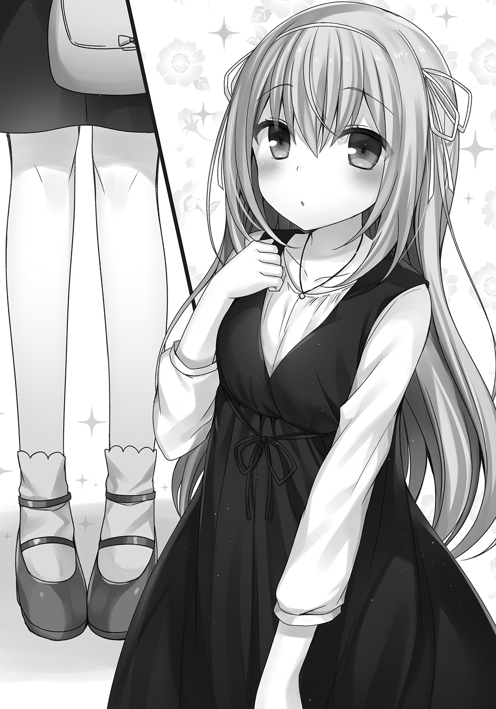
彼女は黒のジャンパースカートに、薄いクリーム色のシフォンブラウスという出で立ちだった。
足下も黒のパンプスで、少しヒールが高い。
服のコーディネートにぴったり合っているんだが、こういう靴って歩きにくそうだな......と、つい野暮なことを俺は考えてしまった。
全体的に清楚で気品がある感じだ。良く似合っていた。
「クリスの私服は大人っぽいな」
途端に彼女の顔が赤くなる。
「に、似合わないかしら？」
「いや、良く似合ってるよ。落ち着いた感じで、大人っぽいな」
クリスは小さくうつむくと「ありがとぅ」と、蚊の鳴くような声で呟いた。
「ところでクリス。プリシラとフランベルは？」
「え、ええと、書店に用事があって、私だけ早めに王都に来たのよ」
「書店が開くのはだいたいどこも十時からだろ？」
「そ、そそそそういえばそうだったわ。私らしくもなく、うっかりしていたみたい」
焦るクリスに俺は訊いた。
「もしかして、今日の事が楽しみすぎて早く目が覚めて、いてもたってもいられなかったのか？」
クリスが一度「うん」と頷きかけてから、首をぶるぶる左右に振った。
「ち、違うわよ子供じゃあるまいし！」
ムキになるあたり十分子供だぞクリス。
そんな話をしているうちに、停車場に次々と馬車が入ってきた。
その一台からフランベルがプリシラの手を引いて降りてくる。
プリシラは珍しく、スカートではなくパンツルックだった。
といっても、ピンクのホットパンツにスニーカーと、白いキャミソールにドット柄の薄手のパーカー姿だった。
健康的に日焼けした生足の曲線美が美しい......って、何を見入っているんだ俺は。
そして、一人眠そうな顔で、髪もうまく整っていないフランベルはというと、パーカーにジーンズとスニーカーという、中性的......というか、男の子っぽい格好だった。
「あれ？ クリっちやっぱり早く来てたんだ。はっはーん！ さては、レオっちが早めに来ると思って、待ち伏せしてちょっとの間でも独り占めできると思ってたとか？」
クリスが目を丸くさせた。
「え、ええと......」
フランベルがあくび混じりに告げる。
「ふあああぁぁ。抜け駆けなんてひどいよぉ」
クリスがぶんぶんと大きく首を左右に振って、その場で小さくピョンと跳ねた。
「してないから！ そんなつもりなかったわ！」
俺は「まあまあ、それくらいで勘弁してやってくれ」とプリシラに言いつつ、フランベルに視線を向け直した。
「それにしても、ずいぶんと眠そうだなフランベル」
「楽しみすぎて一睡もできなくてさ」
プリシラがため息混じりに続けた。
「これからが本番なのになぁ。それじゃあみんなついてきて！ ほら、フラっちもがんばって！」
「うーん......眠いよぉ。レオ師匠助けてぇ」
しょうがない。俺は感情魔法を使った。
「簡単な眠気覚ましの魔法をかけてやる。すぐに目が覚めるぞ」
発した言葉にランクＥの睡眠時間を制御する魔法を織り込んだ。
これは現在の眠さを後の時間にずらすという類の魔法になる。
完全不眠の魔法もあるのだが、フランベルの場合、感情魔法が効きすぎることがあるからな。
みるみるうちに、フランベルの表情が冴えていった。
「すごいや師匠！ 目が覚めて頭のぼんやりした感じも綺麗に消えたよ！」
プリシラがにっこり笑う。
「それじゃあ行こっか！ こっちこっち！」
プリシラが目指したのは、王都の北北東にある、一番街方面――魔導影街だった。
影の街とはいうものの、魔導影街自体は怪しくもいかがわしくもなく、むしろ技術的な施設が集まっている街だった。
先日の交流戦で映像を放映した転送機や映写機などは、この街の技術が支えている。
カラオケ装置もまたしかり。
音響や映像を魔法工学の力で再現する、先端工学の街という一面と、それらを使った娯楽施設が発展した享楽の街という、まるで光と影が同居しているような場所だった。
その一角にあるドーム状の施設の前で、プリシラが立ち止まると振り返る。
「じゃじゃーん！ 到着したよ！」
クリスとフランベルがドームを見上げた。
「結構大きな施設ね。第一闘技場くらいはあるかも」
「もしかして試合するの？ あっ！ 蒼月持ってきてないよどうしよう!?」
プリシラが「しないし」と苦笑いを浮かべた。
俺が施設を見上げて訊く。
「で、この建物はなんなんだ？」
「魔法映写機やいろんな魔法装置を使って、その場にいながら特別な体験ができちゃうんだって！」
「特別って......例えばどんな？」
俺に訊かれて、プリシラは上着のポケットからパンフレットを取りだした。
「えっとねー......世界の七大秘境に行って、モンスターと戦えるみたい！ あっ！ 戦うっていっても、全部魔法で作った幻影なんだって」
クリスが目を見開いた。
「そ、そうなの。わぁ......楽しみね」
全然楽しそうじゃない！ というか、めちゃくちゃ棒読みみたいな口振りになってるぞクリス。
一方で、フランベルの瞳がキラキラと輝いた。
「すごいよプリシラ！ ぼくもとっても楽しみだよ！ レオ師匠はどうかな？」
「あー。楽しみだな」
どれくらい本物に近いんだろう。気になるところだ。
「ところでプリシラ。お前らしくない気もするんだが......戦うのは嫌いだよな？」
俺が訊くと彼女の眉尻が下がった。
「う、うん。戦うのも痛いのも嫌いだよ。けど、戦わなきゃいけない時があるって、レオっちに教えてもらったし......それに、この施設は全部幻影で噓っこだからね！」
クリスが小さく首を傾げた。
「ところで、私たちの他に利用者はいないのかしら？」
プリシラが笑う。
「実はさー。まだオープン前なんだって。カラオケのお店の店長さんに、プレオープンチケットもらっちゃったんだけど、そろそろ使用期限だったんだよね」
そういうと、プリシラは四枚のチケットを取りだし、俺たち一人一人に配った。
なるほど。
チケットは四枚あった。
エミリアじゃなく俺を引率にしたのもこういう理由だったからか。
たしかにエミリアじゃ、幻影相手でも戦えるようには思えない。
「それじゃあ一つ、魔法工学のお手並み拝見といこうか。なあクリス？」
突然俺に話題を振られて、クリスはビクンとした。
「え、ええ！ そうね！」
むしろ実物を知ってるんだから、そんなにビビらんでもいいだろうに！
チケットを使って入場すると、受付で魔法使い向けの制御リングを渡された。
この施設は平民が魔法使いのような、超人的な力を体験できる娯楽施設なのだという。
魔法使いが利用する際は、この制御リングの装着が義務づけられていた。
制御リングは、魔法使いが無意識のうちに魔法を使ってしまわないよう、一時的に魔法力を封印する、ある種の拘束具だ。
構造を解析してみたところ、リングはこの施設そのものに張られた結界と連動しているらしい。
建物内にいる限りランクＣまでの各種魔法の発動をリングが阻害するよう、魔法式が仕込まれていた。
まあランクＣでも安全マージンを取りすぎだと思うけどな。
四人全員がリングをつけたのを確認して、女性の係員の誘導に従い通路を進む。
俺たちが通されたのは十メートル四方ほどの小部屋だった。
前後左右も天地も真っ白に塗られている。
中に入ったところで、係員の女性が説明を始めた。
「こちらは四人から八人までのお客様向けとなっております。装備の設定のあと、本編は五十分ほどとなっております。魔法武器はすべて幻影と斥力場で形成されます。また、ダメージ表現として軽度な揺れや衝撃を感じることがありますので、ご注意ください。それでは勇者の戦い――巨大なモンスターとの死闘をお楽しみください」
恭しく一礼をして、係員の女性は部屋の外に出た。
フランベルが鼻息を荒くさせる。
「むっはー！ レオ師匠！ 勇者の戦いだって！ すごそうだね！」
プリシラが不安げにうつむいた。
「だ、だいじょぶかなぁ......なんか、思ってたよりすごそうなんだけど」
クリスが壁際で、そっと壁に手を触れて興味深そうに頷く。
「この壁にも魔法式が走らせてあるわね。さすがに専門家じゃないから、詳しいところまではわからないけど......」
フランベルが困り顔になった。
「クリスはこんな時でも優等生だね。こういうのは、頭を空っぽにして楽しんだらいいんだよ！」
俺もフランベルに同意見だ。
「そうだな。まあ遊びなんだし気楽にいこうぜ」
室内の照明が落ちて、一瞬だけ真っ暗になった。
「きゃっ！ なによいきなり？」
「うわー！ 始まるよ始まるよ！ ドキドキとワクワクがとまらないね！」
「ちょっとレオっち。暗いからってそんなとこ触らないでよ」
「触ってないから！ プリシラお前、冤罪を積極的にかぶせにいくのは本当にやめてくれよ」
そういうのが一番俺に効くから。
いや、効くとわかっているから、やってくるのかもしれないが......。
室内の壁面すべてに、幻影系の魔法式が描き込まれた。
白い壁が消え去り景色が一変する。
床が岩のごつりとした感触に変わった。
どうやら舞台は火山のようだが、先日行った火山と違い冠雪はしておらず、足下に溶岩の川が流れていた。
見渡す限り、火山岩の黒い岩場が広がる。
そこかしこから水蒸気も噴き出していた。
熱気も水分も本物の質感だ。
どうやら精霊魔法で風の感触や、水蒸気の熱気、地面の岩場の硬質感が再現されているらしい。
周囲の風景は幻影だ。歩いてみると前に進んでいるはずなのに、壁には突き当たらなかった。
プリシラが声をあげる。
「ちょ、ちょっと！ レオっちこれって本当に幻影魔法なの？」
「ああ。ただ、俺たちが触れられる範囲は精霊魔法で質感を表現してるっぽいぜ」
「うー、レオっちが何言ってるかわかんないし」
「わからなくても楽しめばいいんだぞ」
周囲をきょろきょろ見回していたクリスが、大きな宝箱を見つけて駆け寄ると箱の中身を確認した。
「ねえみんな、この中に武器があったわ」
棺桶のように巨大な箱の中には、魔法武器が収められている。
「わーい！ じゃあぼくはこれにするね！」
いの一番にフランベルが片刃の曲刀を手に取った。
刀身が異様に長い。フランベルの身長の１．５倍ほどはある。
「うわ！ 不思議だね。持ってる感触はあるのに、全然重さを感じないよ！」
クリスはスタンダードな長剣を手にした。
が、これも大きさが普通じゃない。
まるで巨人が使うために作られたような、規格外な刃の大きさだ。
曲刀よりも幅広い刃で、クリスが持つとまるで剣の方が本体で、クリスがおまけのように見えた。
「本当だわ。こんなに大きいのに重さが全然ないなんて。これだと現実じゃないって、はっきりとわかるわね」
プリシラが巨大ハンマーを手に取った。
「あたしはコレかなぁ。うわ！ マジで軽ッ!?」
ひょいっと彼女がハンマーを持ち上げる。
さてと、じゃあ俺は......っと。
「おい。武器が入ってないんだが」
箱の中身はがらんとしていた。
クリスが俺と一緒に箱の中をのぞき込む。
「あら、ちゃんとあるわよ？」
彼女が箱の隅っこを指さした。
そこにあったのは――スプーンだった。
「うおおおおおおおおい！ なんでスプーン!? なんでスプーン!?」
いやおかしいだろこれ！ スプーンって！ 百歩譲ってもナイフかフォークだろうに。
せめて先割れスプーンにしてくれよ!!
ん？ 待てよ！ さては、手に取った瞬間にクリスたちの武器みたいに大きくなるんじゃないか？
恐る恐るスプーンを手にすると、突然、角笛のような音が周囲に響き渡った。
目の前から箱が消えて、景色が火口のクレーター内に移り変わる。
地面がグラグラと振動し、熱風が吹き荒れた。
さらに、俺たちそれぞれの頭上に緑色のバーのようなものが表示される。
「なんだこりゃ？」
ガツン！ とした振動が来たかと思うやいなや、地面を割って巨大なずんぐりとした黒い塊が姿を現した。
こんな火竜はみたことがない。
「出たなドラゴン！ ぼくが成敗してやる！」
「うわ、デカッ！ ちょっとマジですごいんだけど」
「レオ！ なにか違うわ！ 見たことがないやつよ！」
三者三様に少女たちが声を上げる中、俺が手にしたスプーンは......巨大化することもなく、シリアルを食べるのにちょうど良いサイズのままだった。
誰か噓だと言ってくれ！
「フランベル一番槍いいいいいいいい！」
黒い甲冑を着込んだ巨大モグラのようなドラゴンに、フランベルは正面から突撃した。
ドラゴンがアギトを開くと、咆吼が風圧となって吹き抜ける。
「うわあああ！」
フランベルの足が止まる。そこにめがけて、意外にも俊敏な動作でドラゴンはその場で１８０度ターンをした。
巨木の幹のように太い尻尾が、鞭のようにしなってフランベルを吹き飛ばす。
「うわああああああああああ！」
フランベルの頭上の緑色のゲージが半分になった。
「フランベル大丈夫？」
「ちょ、フラっちいきなりやられてんじゃん！」
派手になぎ払われたフランベルだが、すぐに立ち上がった。
「ぜんっぜん痛くない！ これおもしろいね！ 次はやられないぞ！」
アイスブルーの瞳はけろっとしている。
クリスとプリシラがホッと安堵の息を吐いた。
そこへ......。
「ギャアオオオオオオオオオオオオオオオオオオオオオオオオオオオオ！」
ドラゴンが咆吼とともに、圧縮された空気の砲弾を吐き出した。
俺は射線上から横っ飛びで避ける。
が、棒立ちだったプリシラが直撃した。
「いやあああああああああああああああん！」
吹っ飛ばされてプリシラは後ろに転がった。
「あ、あれ？ ほんとだ痛くないし。余裕じゃん」
プリシラの頭上の緑色ゲージが、七割削られて黄色信号になっていた。
クリスが大剣を構えて、ドラゴンの側面に回り込む。
「正面と背後は危険ね。ここは左右から攻撃しましょう！ レオも援護して！」
「おう！ 任せろ！」
クリスがドラゴンの右翼に回り込んだため、俺は左翼側に向かった。
ドラゴンの山のような巨体を挟んだ向こうから、クリスが奮闘する声が響く。
「てえええええええええええええい！」
ズガガッ！ と、派手な剣戟の音が響いた。クリスの大剣はドラゴンに打撃を与えているようだ。
俺も負けてられないな。
スプーンを逆手に持って、ドラゴンの鱗と鱗の隙間を狙って打ち込む。
ガキーン！
スプーンの柄から、先端部分が千切れ飛んだ。
「おいいいいいい！ なんだよこれ！」
ドラゴンが俺に向き直り、腕を振るった。
見えてるぜ。単調な動きをしやがって。
紙一重で完全にかわした......はずが、俺の身体は後ろに吹き飛ばされた。
「なんでだ!? 今の当たってないだろ!?」
当たり判定の精度には問題ありだな。
おそらく必要最低限の紙一重的な回避では「当たったこと」にされてしまうんだろう。
ちょっとやりづらい......って。
いや違うだろ！ そこじゃないだろ！ なんでスプーンなんだよ！ しかも先端折れたし！
再びドラゴンが空気砲を放とうと、アギトを開いた。
予備動作がずいぶんとわかりやすいな。とりあえず、俺はドラゴンの正面から逃げるように飛び退いた。
そんなドラゴンめがけて、フランベルが正面からつっこんでいく。
「今度こそおおおおおおおおおおおおおお！」
プリシラがハンマーを構えてフランベルを追った。
「あたしも手伝うし！ そおおおおおおおおおおおおい！」
俺は叫ぶ。
「二人ともドラゴンの懐に入るんだ！ 空気砲が来るぞ！」
こういう攻撃の場合、遠くに逃げようとするほど、かえって危なかったりする。
逆に相手に密着するくらい肉薄しておいた方が、攻撃範囲から逃れることができるのだ。
俺の呼びかけに二人は――
「「えっ!?」」
こっちを見て棒立ちになった。
「足を止めるな！ 死ぬぞ！」
俺の声がむなしく響くのと同時に、ドラゴンの口から空気砲が放たれた。
圧縮された空気の砲弾が、フランベルとプリシラをまとめて吹き飛ばす。
一人、黙々と攻撃を続けていたクリスの手が止まる。
「ちょ、ちょっと二人とも、あっさりやられないで......きゃあ！」
砲撃を放ち終えたドラゴンが、身を翻してクリスに向き直ると、巨大な牙で彼女の身体を下からすくうように打ち上げた。
「いやああああああああああああああああああ！」
豪快にスカートの中のピンクの布地を晒して、クリスの身体が宙を枯葉のように舞った。
彼女の頭上の体力ゲージが半分になる。
「クリス!! 畜生よくもやりやがったな！」
プリシラもフランベルも倒れたまま動けずにいる。
クリスも空中で弧を描いて地面に激突した。
本来なら魔法で重力制御をするところだが、今の俺には何もしてやれない。
状況は絶望的だ。
燃えさかるマグマ。
吹き抜ける熱風。
沸き立ち溢れる水蒸気。
固い地面を踏みしめて、俺は孤独にドラゴンを前に立ち尽くす。
魔法は一切使えない。
手にした武器は一つだけ。
先端の折れたスプーン。
これで救えとか無理ゲーすぎる！
ドラゴンは倒れたクリスにのしかかろうと上半身を反らせて身構えた。
これでトドメといわんばかりだ。
「させるかああああああああああああああ！」
スプーンの柄を握りこみ、俺は剣山のように尖ったドラゴンの背中に飛びかかった。
背中をよじ登り、ぴったり張り付くと、俺は無心でスプーンの柄をドラゴンの鱗に突き立てる。
「ギヤボラアアアアアアアアアアアアアアアアアアアアアアアアアア！」
ドラゴンは身体を大きくうねらせて、俺をふりほどこうと暴れ回る。
振り落とされないようしがみついてみたものの、俺の腕から〝摑んでいる感覚〟がフッと消えた。
どうやら俺の行為はこの世界では〝反則〟になるらしい。
落下したのはちょうどドラゴンの足下だった。
頭上から、俺の身体をまるまるつぶせる大きさの、ドラゴンの足の裏が降ってくる。
ここまでか。
諦めかけたその時――
「レオは絶対に......殺させない！」
クリスの声が響き渡った。
そうだ、まだ彼女の体力は半分残っていたのだ。
クリスの声に、一瞬――ドラゴンの動きが止まる。
這いつくばったまま、俺の視界に飛び込んできた次の光景は......。
クリスが大剣を投げ捨てて、理論魔法式を構築している姿だった。
「待て待て待てまてええええええい！」
すでにクリスの装着していた制御リングは、彼女の魔法力に耐えきれず内部の魔法式が破損して、機能を失っている。
故意ではなく、クリスは俺を救おうと咄嗟に力を使ってしまったんだろう。
制御リングを一発でお釈迦にするほどの、高負荷な魔法式の正体は......連続破壊魔法だった。
「落ち着けクリス！ これは全部幻影だっての！」
俺は自分が装着している制御リングにダミーの魔法式を走らせて、一時的に機能を凍結すると魔法式を構築した。
「くらえええええええええええええええええええええええええええええええ！」
クリスが幻影のドラゴンに破壊魔法を二連射する。
「間に合ええええええええええええええええええええええええええええええ！」
それに合わせて俺も防壁魔法を二つ、ドラゴンの幻影に合わせ放った......が、遅い。
間に合わない!!
今は制御リングが壊れようとも、即座に防壁魔法を展開すべきだった。
クリスの放った破壊魔法はドラゴンを透過して、部屋の壁に炸裂した。
ボロボロと壁が崩れて、通路までの風通しが良くなる。
同時に、俺の身体を包み込んでいた魔法的な斥力場が解けた。
幻影魔法による映像も一瞬、輪郭が乱れたかと思うと......火山の光景も巨大なドラゴンも消え失せる。
「あ、あれ？ あの......あっ！」
白い壁に空いた穴を見て、ようやく状況を理解したクリスは、その場に崩れ落ちるように床に膝をついた。
「やだ......私......またやってしまったわ。これは器物破損に威力業務妨害も......ど、どうしよう」
フランベルがケロッとした顔をして立ち上がった。
「あれ？ もうおしまいなの？ さてはぼくらに恐れをなして、ドラゴンは逃げたんだね！」
どこまでも前向きだなフランベルは。
プリシラも身体を起こしながら、ため息混じりに呟いた。
「やだもー！ 一度やられちゃうと復活できないのこれ？」
二人の視線が壁の穴と、放心したように口をパクパクさせるクリスを交互に確認した。
プリシラが青ざめる。
「も、もしかしてクリっち......魔法使ったし？」
クリスは力ない声で返す。
「わ、わた、私......レオがやられちゃうって思ったら......ごめんなさい。言い訳のしようもないわ」
うわー。まいったな。
壁を壊したことよりも、クリスの罪悪感の方が問題だ。
プリシラが焦り出す。
「ど、どどどどうしようレオっち！」
一方、フランベルは余裕の表情だ。
爽やかに朗らかに、彼女は俺たちに提案した。
「よし。ここは見なかったことにして逃げよう！」
こっそり出て行こうとするフランベルを、俺は呼び止めるように言う。
「いやダメだろそれは！ クリスの罪悪感が増えるだけだから！」
逃亡の罪まで上乗せされるだろうに。
「じゃあ、クリスの記憶をレオに消してもらおう！」
「できるかそんなこと！ フランベル......お前結構鬼畜だな」
「そうかな？ クリスも救われるし、ぼくらも逃げられていいと思うんだけど」
プリシラが首を左右に振った。
「無理だよ逃げ切れないって！ うちらの顔......つい最近、交流戦の放映で王都のみんなに見られたばっかりだし。制服着てなくてもすぐバレるって！」
クリスがそっと、両手の手首のあたりをくっつけるようにした。
「隠し立てはしないわ......私、きちんと裁きを受けるから」
潔いのはいいけど、それですべてを棒に振るのはどうなんだ？
ここは俺がなんとかしなきゃな。
「そんなことしたら退学になるだろクリス！ だから......バレる前に修理すればいいんだ。雑用一筋半年間！ なんでもこなすエステリオの管理人さんをナメんなよ！」
クリスは絶望的な表情のままだった。
「修理しようにも、破壊魔法を使ってしまったから、壁に使われている石材は消失してしまったようなものだし......いくらレオでも材料が無かったら無理よ！ こんなところにどうやって、材料を運び込むっていうの？」
泣き出しそうなクリスに、俺はゆっくり頷いた。
「ともかく大丈夫だから任せろ。きっとあいつなら、石材くらい簡単に用意できるだろうし」
俺は召喚魔法言語を唱えるように口ずさんだ。
すぐに足下に魔法陣が発生する。
「ははー！ レオ様！ 本日はどのようなご用件で!?」
恭しく一礼したまま、獅子王が魔法陣の下からせり上がってきた。
プリシラが真顔になる。
「ちょ、ちょっとレオっち！ なんでクロちゃんのお父さん呼んでんの！ あたしと次に会ったら、一族郎党殺すとか言ってたじゃん！」
プリシラの声に気付いて、頭を下げていた獅子王がビクン！ と全身をわななかせた。
ゆっくり顔を上げてプリシラの方を向くなり、獅子王は宣言する。
「ここで会ったからには、貴様との約束......果たさせてもらうぞ！」
クワッと目を見開く獅子王に俺は告げる。
「それはまた今度にしてくれないか？」
「ぬうう。それでは我が威厳が保てぬ」
振り返った獅子王は、声こそ威圧的だが、今にも泣きそうな情けない顔で俺に懇願した。
「ぬうじゃねえよ。次に会った時じゃなくて、次にプリシラが自力でお前を召喚したらって話だろ？ な？ そうだよな？ それがお互いのためだと思うぞ。プリシラがもっと強くなってからでも、試練を与えるのは遅くないって！」
軽く睨むと獅子王は小声で頷いた。
「え、ええと......はい」
そしてプリシラに顔を向けるなり、獅子王は告げる。
「命拾いしたな人間の娘よ」
「うわ......ダッサ」
プリシラの容赦ない感想に、獅子王の顔がぐにゃりと歪んだ。
「ほらやっぱりこうなる！ めちゃくちゃナメられたじゃないですかレオ様！」
「お前もキャラ変わりすぎだろ。ともかく、これから俺が言う素材をそろえてくれ。相応のお礼はさせてもらう。向こうで何か困ってることあるだろ？ 腕力魔法力には自信があるから、何でも倒すぜ」
「知ってますよそれは！ ええ、蟲退治の件は本当に助かりましたが、そもそもうちは素材屋じゃないですから！ 誇り高き獅子の血族なんですよレオ様！」
外見に見合わない喋りっぷりの獅子王に、フランベルが首を傾げた。
「もしかしてこの人がクロちゃんのお父さん？」
初めて見るフランベルに、獅子王は胸を張る。
「ふはははは！ 我は獅子王！ 人間の小娘よ......気易く話しかけるとは、その軽率な態度は万死に値する」
凄んでみせる獅子王にフランベルはケラケラ笑った。
「レオ師匠の友達なんでしょ？ 全然怖くないよ」
獅子王は涙ぐんだ。
「レオ様......お願いだからもう、他人がいるところで召喚するのだけはやめてくれませんか!?」
「わかったわかった......だから早く石材を頼む......こっちも時間がな......」
最後まで言いかけて、俺は言葉を呑み込んだ。
第三者の視線が、壁の穴の向こうからじっとこちらに向けられていたのだ。
あれ？ いつのまに......つーか、全部見てたのかよ!?
先ほど、俺たちをこの部屋に案内した女性の係員が、いつの間にか俺たちのやりとりをじっと見ていた。
「今しがた、お客様の部屋でなんらかの魔法の発動を感知いたしましたが、ご無事ですか？」
淡々とした口振りで、女性係員は壁に空いた大穴の向こうから、俺たちに声をかけてくる。
やばい。
やばいやばいやばいやばいやばいやばいだろ！
見られただろ！ 穴とか獅子王とか！
クリスは今にも気絶寸前だ。
俺は叫んだ。
「う、うわ――――！ 獅子王だあー！ すげぇ！ こんなに臨場感のある幻影が出てくるなんてびっくりだなー！」
プリシラとフランベルが察して俺に続く。
「マジすごいよねー！ 恐ろしさがはんぱないしぃ」
「壁に空いた穴までまるで本物みたいだよー！ すごいなー！」
おいフランベル！ そこは触れなくていいところだぞ！
女性係員はキョトンとした顔だ。
獅子王が首を傾げる。
「レオ様......壁には穴が空いておりますし、私も幻影ではなく召喚獣の幻体なのですが」
「いいから黙って俺たちを怖がらせろッ」
俺は小声で言って獅子王を肘で小突く。
理解してくれたのか、獅子王はゆっくり頷いた。
「ふ、ふは、ふはははは！ この獅子王に挑もうとはおろ、愚かなり人間どもぉ！」
獅子王が適当に腕を振るいだす。
俺とプリシラとフランベルで、かいくぐるようにして攻撃を避けた。
が、二度三度と続けるうちに、獅子王の攻撃を受けて、俺は床の上に転がった。
「うわー！ やっぱ獅子王は強いぜー」
「はっはっはっは！ 人間どもを根絶やしにしてくれるわー！ あー、なんか気持ちがスーっとするぞ！ ふはははは！ ふはははは！」
おお、獅子王もノッてきてるじゃないか。
意外とこういうのにも付き合ってくれるんだな。
もしかして、すごく良い奴なんじゃないか？
というわけだから頼む。頼むからこの俺たちに今できる、精一杯の茶番劇で納得してくれ係員さん！
女性の係員は視線を落とすと、少し考えこむような素振りで呟いた。
「たしかドラゴンとの戦闘のはずでしたが......少々お待ちください。プログラムの確認をしてまいります」
早足で係員が通路の向こうに去って行く。
プリシラとフランベルがホッと胸をなで下ろした。
俺は獅子王の顔を見上げて告げる。
「というわけだから、この部屋の壁と同色の石材を頼む」
「は、はいー！ すぐにご用意いたします！」
一度、獅子王は召喚用の魔法陣の中に沈み込んで、すぐにこちらの要求した物を調達してくれた。
この恩は、そちらの世界の災厄を一つ取り除いて返すぜ獅子王！
係員が戻ってくる前に壁を埋め、俺が理論魔法で壁に隙間ができないよう接合し、部屋の床や壁に張り巡らされた魔法式的な繫がりを修復すると、獅子王を元の世界に見送って......俺たちは何食わぬ顔のまま、正面玄関にある受付を目指して通路を進んだ。
ちなみに、クリスが壊してしまったリングも俺がある程度修復したのだが......もしかしたら少しだけ、効きが強くなってしまっているかもしれない。
ついつい、壊れたモノを直すと元のモノよりも、強化してしまいがちなんだよな。
それはそれとして、すっかりクリスは気落ちしてしまった。
「ごめんなさい。わたしのせいで」
プリシラもフランベルも首を左右に振った。
「しょーがないよ。本当に幻影にみえないくらいドラゴンはすごかったし、クリっちはレオっちを助けたかっただけだもんね」
「そうだよ！ むしろ制御リングがやわすぎるのさ！」
俺も頷いた。
「まあ、気にするなよクリス。怪我人も出なかったし、部屋の方も壁を強化して、元々走らせてあった魔法式より、効率の良い式に書き換えておいたから」
クリスは浮かない顔だ。
うーん、どうすれば元気を取り戻してくれるんだ？
俺は軽くせき払いを挟んだ。
「ともかく、今後はこういうゲームみたいなものでも、俺は絶対に負けない。弱いところはクリスに見せない。それなら安心だろ？」
「レオの負担になるなんて......私は仲間失格ね」
余計にクリスは落ちこんだ。
「クリスは自分を責めすぎだぞ。それに、裁判じゃ情状酌量って言葉があるだろ？」
「え......ええ」
「さっきのは、その余地が十分あると思うぜ」
真面目なのはいいんだが、もう少しクリスには自責の念から解放されてほしいな。
フランベルがあっけらかんと笑った。
「そうだよクリス！ 魔法の暴発を気にしてたら、魔法使いなんてやってられないんだしさ」
「お前はもう少しだけ、反省の気持ちを持てるようになろうなフランベル」
プリシラが小悪魔チックにニッコリ笑った。
「まあ、なにはともあれ無事に出てこられてよかったよね。そーだ！ じゃあクリっちのおごりでお茶しに行こうよ！ いいお店知ってるからさ！ それでノーカン！ このお話はおしまい！ ね？」
プリシラがうまく緩衝材になってくれて、ようやくクリスも少しだけ、笑顔を取り戻した。
手続きを済ませて制御リングを返却し、外に出ようとしたその時――
「お客様！ 先ほどは失礼いたしました。プログラムに問題は認められませんでしたが、誤作動により、違うプログラムが再生されてしまったようです。申し訳ございません。本日は当方の不手際で大変ご迷惑をおかけいたしましたので、皆様方には今後一年間の利用フリーパスを進呈させていただき、お詫びにかえさせていただきたいのです！」
俺は振り返らずに、三人に言う。
「逃げるぞ......みんな」
「「「えええッ!?」」」
クソ真面目な奴がクリス以外にもう一人いたー!?
あんまり関わり合いになると、どんなお詫びという名の重荷を背負わせてくるかわかったもんじゃない。
俺たちは逃げるように建物を飛び出した。
もう、この施設には二度と来ることはない......と、願いたい。
――後日。
正式オープンした施設――幻影闘技場。
複数あるブースの中に〝獅子王が乱入し、壁が崩壊する特別バージョン〟になる部屋があるという噂が立っていた。
さらに制御リングには〝幻影にだけ効く魔法が使えるようになる〟個体があるという、これまた都市伝説が生まれたとのことだ。
そういった噂が呼び水となって、今では王都でも指折りの人気スポットになったとかなんとか。
犯人は俺です。本当にありがとうございました！
番外編１完
思い出の一冊（番外編２）
俺は王都の四番街――古書店がずらりと建ち並ぶ学者通りにいた。
往来するのは学生や研究者風の男が多い。休日でなかなかの賑わいだが、ガチャガチャとした喧噪とはかけ離れた落ち着きのある雰囲気だった。
誰もが目当ての本を採掘するように、黙々と本の山へと向かっていく。
そんな光景を見送る隣で、エステリオの制服姿の少女が小さく呟いた。
「今日はその......急な申し出だったけど、付き合ってくれてありがとうねレオ」
少女――クリスの頰がかすかに赤らむ。
「なんだよ改まって。付き合うのは当然だ。二人に勉強を教えるためなんだろ？ 良い本が買えてよかったな」
「え、ええ。けど、この内容だと少し難しくないかしら？」
今日はクリスの依頼で本探しの手伝いだった。
秀才のクリスだが、自分の勉強をしながらプリシラとフランベルの学力を引っ張り上げてくれている。
「クリスならきちんと教えられるだろ。プリシラもフランベルも理論魔法が大の苦手だけど、これくらいの内容は理解してもらわなきゃな」
実戦における対理論魔法への対応は教えられるが、基礎となると俺はからきしだ。
教材も手に入ったところで、クリスがとある古書店に視線を向けた。
「気になるなら少し見ていくか？」
「え？ でも、今日は午前中から半日、ずっと付き合ってもらいっぱなしなのに......」
こういう所で遠慮しがちなのも、クリスの奥ゆかしいところだ。
「せっかく来たついでだし、クリスの向学心の助けになるならいくらでも付き合うって」
言うが早いか、クリスは俺に教材の入ったトートバッグを渡すと、古書店に入っていった。どうやら自分の本も買いたくてウズウズしていたみたいだな。
ゆったりとしたペースで彼女の足跡を追う。書店は入り口の先まで積まれた古書が、門のようにそびえていた。歴史あるたたずまいの書店に、そっと足を踏み入れる。
紙とインクと、かび臭さが混じったなんとも言えない匂いが、店内に充満していた。
クリスは棚を端から端まで熱心に精査した。が、小さく肩を落とす。
「どうしたんだ？ そんなにがっかりして」
「やっぱり簡単には見つからないわね。基礎理論魔法学の本なんて......」
とぼとぼと彼女は古書店を出た。すぐに追いかける。
落胆するクリスと一緒に、目抜き通りを並んで歩く。
「基礎ならクリスは十分にできてるだろ？ それなのに基礎理論魔法学の本が必要なのか？」
「初版本が欲しいのよ。それに私なんて誰かさんと比べればまだまだ基礎だもの」
俺の顔をじーっと見つめて彼女は笑った。
「おいおい、比べられるとこっちが恥ずかしいぞ。お世辞にも俺の魔法式はその......美しいとは言いがたいからな」
だからこそプリシラとフランベルの先生には、クリスがぴったりだった。彼女の魔法式は整っていて解りやすく、手本になるものだ。
「私はレオの魔法式......好きよ。それにすごいと思うもの。一見無駄に見える部分も、実は相手の詠唱妨害に備えたデコイになってるんでしょ？」
「まいったな。そこを看破されるとは思わなかった」
魔法発動のための重要な部分には、囮となる擬似魔法式を展開して相手の妨害から本線を守るようにしてある。クリスは白魚のような指で、自身のあごを軽く挟みながら続けた。
「それに重要度の低い部分については大胆にショートカットしているわよね。私には無理かも......一つ間違えば式が崩壊しそうで、不安になるし」
「クリスくらい基礎がしっかりできていると、俺の式のおかしなところが余計に目立って見えるんだろうな」
クリスは首をそっと左右に振る。
「おかしいなんてそんなこと......ええと、気になっていたんだけど、レオはどんな風に魔法を学んだの？」
「今みたいな形になったのは全部その......実戦経験によるところが大きいな」
度重なる戦いの歴史というと大仰かもしれないが、俺の魔法は応用と実践による賜物だ。
「そうなのね。ハァ......このままじゃずーっと追いつけないかも」
「クリスは伸び盛りなんだし、コツさえ摑めばあっという間に俺を追い抜けるって」
「お世辞でも、そう言ってもらえて嬉しいわ」
「いやいや本当だって信じてくれよ」
軽口をたたき合うように言い合いながら、そのあとも何軒か古書店を巡った。が、クリスはお目当ての本に出会えなかった。
そんな最中、ふと気付く。なぜかエステリオの生徒に出くわさない。単に制服を着用していないだけかもしれないが、制服姿がクリスだけというのが少し不思議だった。
「ここになければ、今日は諦めるわね」
古書は巡る。今日見つからなくても、明日には棚の品揃えが変わっているかもしれない。
と言うわけで、最後に選んだのは門構えからして、小さいながらも洋館のような立派な店だ。
重たい扉を開くと、カランカランとドアチャイムが鳴った。
店員だろうか？ メイド服姿の少女がカウンター越しにこちらに一礼する。
「いらっしゃいませ。ようこそスタンフォード書店へ。お探しの本がありましたら、なんなりとお申し付けください」
「あ、ああ。とりあえず見させてもらうよ」
他の古書店だと「好きに探してくれ」と言わんばかりで、接客されることがないのが普通なので少し面喰らった。しかしスタンフォード......どこかで聞いたような......。
クリスが瞳を輝かせながら、書棚に並んだ本の背表紙を見て溜息をついた。何冊か手にとって確認してから呟く。
「どれも名著の初版本よ」
「名著って、この店の本はそんなにすごいのか......」
そういえば、紙とインクの匂いはすれども、かび臭さは感じないな。店内に空気を清浄にする類の魔法が掛けられているのかもしれない。
俺も一冊適当に手にとった。値札をみると......そこそこ良質な魔法武器が買える額だ。
「なあクリス。この店はその......生徒が買い物をするには高いんじゃないか？」
振り返るとクリスの姿が消えていた。店の奥にある背の高い棚の上に、手をぴんっとさせて背伸びをしている。かかとをギリギリまで上げていた。
「うーん......もうちょっと......」
どうやら、一番上の棚にある本を取りたいみたいだな。
彼女の背中越しに手を伸ばして、本を棚から抜き取った。
「あっ......レオ......」
「この本でいいのか？」
手渡すとクリスは頰を赤らめた。
「うん、ありがとう。もしかしたらと思ったんだけど......あ！ やっぱり！」
背表紙には基礎理論魔法学とあった。クリスが奥付を確認する。どうやらお目当ての初版本らしく、彼女は嬉しそうに目を細めた。
「子供の頃、父の書斎にあったこの本で勉強したの。実はいくつか記述が間違っていて、第二刷から修正されたのよね」
「勉強したその本はもうないのか？」
「蔵書整理のさいに、どこかの施設に寄付してしまったらしくて......ああ、懐かしいなぁ」
まるで旧友との再会を懐かしむようにクリスはページをめくっていく。そして、値札を見て目を丸くさせた。こちらもなかなかのお値段だ。
「ちょっと予算オーバーかも。ゼロの数が二つ多いわね」
「おっと、俺の財布を頼るなよ」
「わ、解ってるわよ......けど......うう」
一期一会かもしれない。すると――
「その本を渡してもらおう」
低い男の声が静かな店内に響いた。視線を向けると白髪交じりの初老の男が、ステッキを片手にこちらをじっと見据えている。モノクルをつけた学者か研究者風だ。
「買わない......いや、買えないというのであればこちらに。急にその本が欲しくなったのだよ。まだ卵のカラがお尻についたままの子供には、この店の本はどれも高すぎるだろうに」
紳士風の見た目に反する、どことなくトゲのある口振りだった。
「なら大人の俺が買う分には文句はないってことだよな？」
「ん？ なんだね君は。そのような身なりの貧乏人は入店してほしくないものだがね」
店のオーナー......な、わけはないよな。自分の店の本を「急にその本が欲しくなった」とは言わないだろう。
「俺は彼女の......ええと、彼女が通っている学園の管理人だ」
「エステリオの管理人？ では平民かね。これは驚いた。本の価値も解らない人間が、魔導書を買うというのは実に滑稽だ」
上から目線で初老の男は続ける。
「いや無知は罪だよ君。私はバルタザール・クライン。一年ほど前までエステリオで教員をしていたが、みな敬意を払って私を教授と呼んでいたよ。教育委員にも知り合いが多くてね。まあ、下働きの君が知らないのも無理はないか」
俺はクリスを背に庇いつつ訊く。
「その元教授が、向学心に溢れる生徒の手にした本を横取りしようっていうのか？」
「失礼だな君は。しかし......私が去ってから君のような人間を雇うとは......リングウッドは見る目がない」
バルタザールの表情が険しくなった。クリスがそっと俺の後ろで呟く。
「ねえレオ。もういいから......元々、買える値段の本じゃなかったんだし。問題を起こしてお店に迷惑をかけるわけにはいかないわ」
俺なんかよりもクリスはよっぽど大人だ。だが、このまま相手の言い分をすべて認めて、引き下がる気にはなれなかった。
「なんでクリスの本を急に買いたくなったのか、説明してくれ」
「そのような本、実はどうでも良いのだがね。私はエステリオの生徒というだけで腹立たしいのだよ。君らが無能だから私は学園を去らねばならなかった。的確に教えてやったというのに、誰も研究の成果をあげられない。おかげで予算を削られ研究ができなくなる悪循環だ」
俺がよく知る薬学科の主任教員は成果をあげまくっている。教え方の問題じゃないのか？
矢継ぎ早にバルタザールは続けた。
「そのくせ、あれが知りたいだのこの魔法はどうだだの......自分で調べれば解るようなことばかり聞いてくる。生徒どもは私に依存し、私の負担になり、私の研究には役に立たない。あげく......学園を去る私を誰も引き留めなかったのだよ。この優秀な私をね」
芝居がかった演説に辟易しそうだ。詳しいところは解らないが、あまり良い教員じゃなかったみたいだな。ギリアム並かそれ以上に。
「生徒に八つ当たりするなよ。大人だろ？ みっともない」
「平民が口の利き方に気をつけたまえ」
どうやら王都に中継された交流戦の出来事は知らないようだ。この男の中では「学園の管理人＝平民」のまま、時間の流れが止まっているらしい。
クリスが「レ、レオは管理人だけど私のコーチで......」と反論の声をあげた。
「何かね？ 管理人に庭の掃き方でも教わるのかね君は？ ただでさえレベルが低かったというのに、学園の権威も失墜したものだな」
愉快げにバルタザールは笑う。その先でメイド服の店員がこちらを心配そうに見つめていた。
さすがに店には迷惑をかけたくない......が、どうしてくれようか。
バルタザールはステッキで床をカンッ！ と突いた。
「君が魔法使いであったなら、この場で決闘を申し込み、その無知と無力さを身体に教え込んでやるところだが......あいにく、魔法使いは平民に危害を加えてはならないのでね。さあ、その本を渡したまえ」
振り返るとクリスも承伏しかねるという、複雑そうな表情を浮かべていた。不要な本だが生徒への嫌がらせのために、半ば略奪しようというのならそうなるのも当然だ。
それでもクリスの理性が勝利した。
「わかったわ。レオ......棚に戻して」
「そうそう。それでいいのだよ。さっさと尻尾を巻いて逃げ帰りたまえ」
満足そうに勝ち誇り、バルタザールは目を細めた。俺はクリスから本を受け取らずに、声に感情魔法を織り交ぜる。恐怖と緊張を与える魔法だ。
「決闘の申し出なら受けてやるぜ。ここじゃ迷惑になるからな......旧市街にでも場所を移して今からさっそくやろうか、バルタザール・クライン教授？」
少し強めのニュアンスで感情魔法をぶつけたのだが......途端。
「ひ、ひぃッ！ な、なんだねその目は！ クッ！ きゅ、急用を思い出したので、今日は見逃してやろう」
落ち着いた雰囲気が噓のように、裏返った声で悲鳴をあげながら、バルタザールは早足で店の入り口方面へと歩いていった。
「ご来店ありがとうございました」
メイド服の店員が頭を下げるが、一瞥もくれずバルタザールは去っていく。
拍子抜けもいいところだ。クリスが本を手にしたまま、俺の前に回り込んで訊いた。
「今の感情魔法よね？」
「あ、ああ。実際に魔法を使ってみせれば俺が魔法使いだと理解もするだろうし、教授なんて呼ばれてた使い手ならと思って、少し強めに威嚇したんだ。なのに魔法に反応して打ち消すどころか、直撃したんでこっちが驚いたっての」
こうなると本当に学園の教員だったのかさえ疑わしい。まあ、専門分野によって得手不得手はあるだろうが、それなら決闘などと言い出したのもおかしな話だ。バルタザールは「平民相手」と高をくくっていたのかもしれない。
キョトンとする俺とクリスの前に、メイド服の店員がやってきた。
「商品はおきまりになられましたか？」
クリスが手元の初版本に視線を落とす。
「あっ......ええと......予算が足りなくて。ごめんなさい。せっかく売り上げになるはずだったのに、私のせいで」
しまった。店にしてみれば客を逃したことになる。また、俺はやらかしてしまった。
が、店員はそっと首を左右に振った。
「狭い店内ですので、すべて聞こえておりました。本来であれば店員として耳を塞いでいるべきところを、盗み聞きをして申し訳ないです。ただ......本は必要とされる方に買っていただいてこそ幸せと考えます。あの方はどうやら学園をクビになったようなのですが......以前より、エステリオの生徒をみると因縁をつけて、同じようなことを書店街で繰り返しておりまして......ですから少々気持ちが晴れました」
静かな笑みを浮かべて、店員はクリスの手から基礎理論魔法学の初版本を取り上げた。
「こちらの本は取り置きとさせていただきます。何年と言わず、この店が存続する限り、きちんと保管いたしますから。いつでもご購入をお待ちしております」
「い、いいんですか？」
「はい。この本もきっとそれを望んでいると思いますので」
本の気持ちを代弁するなんて、なんとも不思議な書店員だ。
それからすぐに、クリスは取り置きの手続きのため一筆したためた。
スタンフォード書店を出てすぐ、クリスは眉を八の字にさせた。
「浮かない顔だな？ 本は取り置きしてもらえたし、良かったじゃないか」
「またレオに助けてもらって......いつもこうなるのよね」
「結果オーライってやつだな。正直、書店員さんがいい人だったから丸く収まったわけだし。危うく営業妨害で訴えられるところだったぜ」
「そ、そうなったら全力で私が弁護するから！」
焦ったようにクリスは早口でまくし立てた。
結局、俺が介入しなくても、書店員はバルタザールに本は売らなかったに違いない。
クリスが小さく肩を落とす。
「けど、その......ええと......今日はこんなことに巻き込んでしまって......」
「お前のせいじゃないだろ。また誘ってくれよ。買い物くらい、いつでも付き合うからさ」
小さくコクコクと頷くと、クリスは「じゃあ、ちょっと遅くなったけどお昼ご飯にしましょ？ 今日はごちそうするから、それで埋め合わせをさせて」と、笑顔で俺に告げた。
埋め合わせなんていらないのに......と、思ったが、それでクリスの気持ちが晴れるなら、遠慮なくごちそうになるとしよう。
番外編２完
あ と が き
二巻にて第１部完結となります。原雷火です。
ウェブ版でのリクエスト展開＋書き下ろし短編にてお送りいたしました。
実はこのお話、最初から大人気！ というわけではありませんでした。
書き始めた時から「抑圧され続けた主人公が、あるきっかけから力を解放して、敵を倒してスカッと終わる！」と、決めていて、その分スロースターターだったのです。
解放地点にいたるまで、主人公が我慢を強いられる展開が多く、当初はＰＶもそれほどではなかったのですが、この「描きたかった」シーンを発表する前後から、じわじわと支持していただけるようになりました。さらにレビューまでいただき、それが呼び水となって、よりたくさんの方に読んでもらうことができたのかと思います。
こうして出版までたどり着けた......といいますか、幸運にも流れ着けたのも、ウェブ版連載時に支えていただいた皆様のおかげです。改めてお礼申し上げます。
そして、引き続き素敵なイラストを描いてくださった米白粕様にも感謝を！
最後にこの本に関わってくださった皆様に感謝＆幸あれ！
原 雷火
著者紹介
原 雷火 はら らいか
無事、二巻をお届けできてハラハラドキドキも一段落。
第一部の完結編ということで、三人娘の活躍はもちろんのこと、レオがついに......!? と、描きたかったシーンを書けて感無量です。
illustration
米白 粕 こめしろ かす
２巻です！ 私のお気に入りのキャラはエミリア先生です。
先生がドジした際は私が守ります。
ダッシュエックス文庫DIGITAL
魔法学園〈エステリオ〉の管理人２
～最強勇者だった俺の美少女コーチングライフ～
著者 原 雷火
© RAIKA HARA 2016
２０１６年10月31日発行
この電子書籍は、ダッシュエックス文庫「魔法学園〈エステリオ〉の管理人２ ～最強勇者だった俺の美少女コーチングライフ～」
２０１６年９月26日発行の第１刷を底本としています。
発行者 鈴木晴彦
発行所 株式会社 集英社
〒１０１－８０５０
東京都千代田区一ツ橋２丁目５番10号
０３－３２３０－６０８０（読者係）
制作所 株式会社ＩＣＥ
本作品の全部また一部を無断で複製、転載、改竄、インターネット上に掲載すること、および有償無償に関わらず、本データを第三者に譲渡することを禁じます。なお個人利用の目的であっても、コピーガードを解除しての複製は、法律で禁じられています。